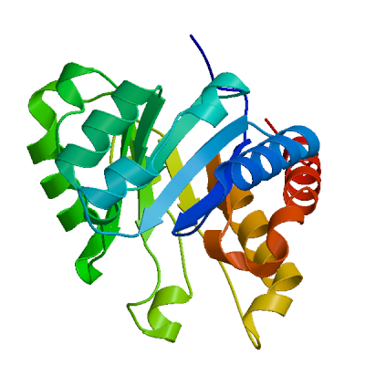
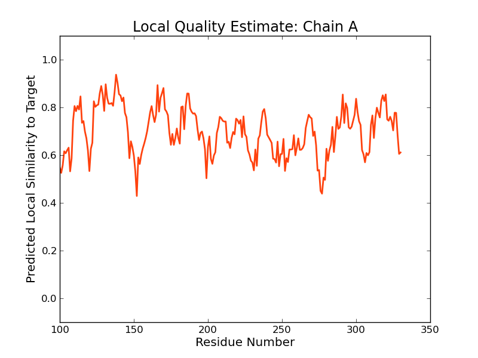
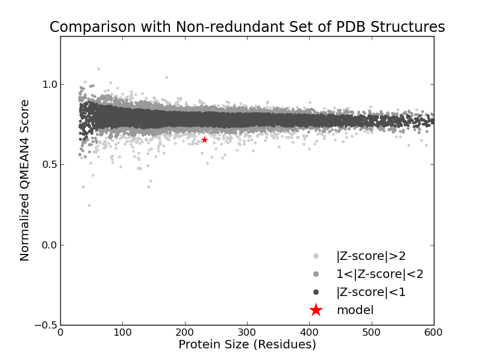
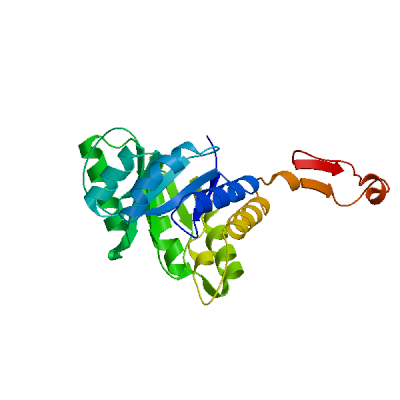
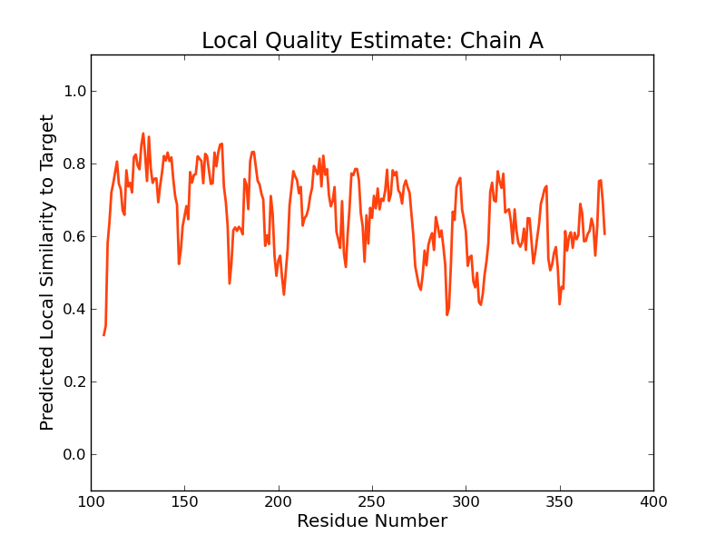
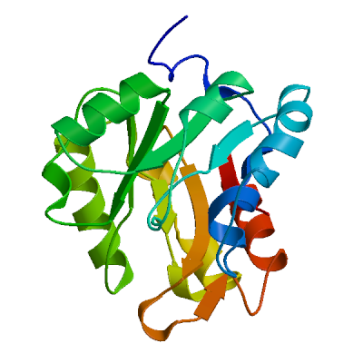
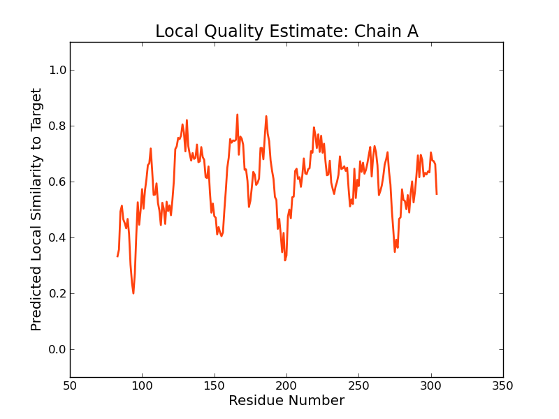
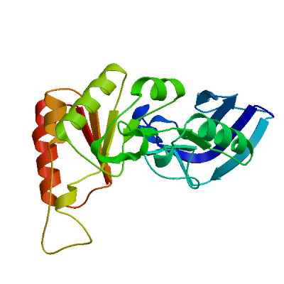
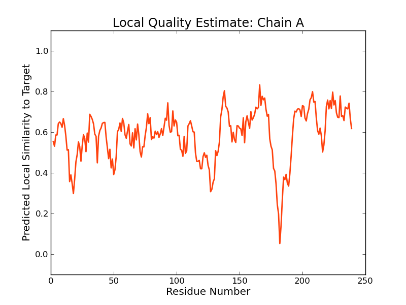

SWISS-MODEL Homology Modelling Report |
Model Building Report
This document lists the results for the homology modelling project "T451DRAFT_1642" submitted to SWISS-MODEL workspace on July 11, 2017, 7:32 p.m..The submitted primary amino acid sequence is given in Table T1.
If you use any results in your research, please cite the relevant publications:
Marco Biasini; Stefan Bienert; Andrew Waterhouse; Konstantin Arnold; Gabriel Studer; Tobias Schmidt; Florian Kiefer; Tiziano Gallo Cassarino; Martino Bertoni; Lorenza Bordoli; Torsten Schwede. (2014). SWISS-MODEL: modelling protein tertiary and quaternary structure using evolutionary information. Nucleic Acids Research (1 July 2014) 42 (W1): W252-W258; doi: 10.1093/nar/gku340.Arnold, K., Bordoli, L., Kopp, J. and Schwede, T. (2006) The SWISS-MODEL workspace: a web-based environment for protein structure homology modelling. Bioinformatics, 22, 195-201.
Benkert, P., Biasini, M. and Schwede, T. (2011) Toward the estimation of the absolute quality of individual protein structure models. Bioinformatics, 27, 343-350
Results
The SWISS-MODEL template library (SMTL version 2017-07-06, PDB release 2017-06-30) was searched with Blast (Altschul et al., 1997) and HHBlits (Remmert, et al., 2011) for evolutionary related structures matching the target sequence in Table T1. For details on the template search, see Materials and Methods. Overall 2100 templates were found (Table T2).
Models
The following models were built (see Materials and Methods "Model Building"):
Model #01 | File | Built with | Oligo-State | Ligands | GMQE | QMEAN |
|---|---|---|---|---|---|---|
|  | PDB | ProMod3 Version 1.0.2. | MONOMER (matching prediction) | None | 0.29 | -2.97 |
|  |  |
| Template | Seq Identity | Oligo-state | Found by | Method | Resolution | Seq Similarity | Range | Coverage | Description |
|---|---|---|---|---|---|---|---|---|---|
| 3tyd.1.A | 20.09 | homo-dimer | HHblits | X-ray | 2.50Å | 0.29 | 100 - 330 | 0.47 | Dihydropteroate synthase |
| Ligand | Added to Model | Description |
|---|---|---|
| POP | ✕ - Binding site not conserved. | PYROPHOSPHATE 2- |
| POP | ✕ - Binding site not conserved. | PYROPHOSPHATE 2- |
| SO4 | ✕ - Not biologically relevant. | SULFATE ION |
| SO4 | ✕ - Not biologically relevant. | SULFATE ION |
| SO4 | ✕ - Not biologically relevant. | SULFATE ION |
| SO4 | ✕ - Not biologically relevant. | SULFATE ION |
| SO4 | ✕ - Not biologically relevant. | SULFATE ION |
| SO4 | ✕ - Not biologically relevant. | SULFATE ION |
| SO4 | ✕ - Not biologically relevant. | SULFATE ION |
| SO4 | ✕ - Not biologically relevant. | SULFATE ION |
| SO4 | ✕ - Not biologically relevant. | SULFATE ION |
| SO4 | ✕ - Not biologically relevant. | SULFATE ION |
| SO4 | ✕ - Not biologically relevant. | SULFATE ION |
| SO4 | ✕ - Not biologically relevant. | SULFATE ION |
| XHP | ✕ - Binding site not conserved. | 2-AMINO-6-METHYLIDENE-6,7-DIHYDROPTERIDIN-4(3H)-ONE |
| XHP | ✕ - Binding site not conserved. | 2-AMINO-6-METHYLIDENE-6,7-DIHYDROPTERIDIN-4(3H)-ONE |
Target MSEHILFLTGKLAEKQLHNILEKMQPKFTYTVHQLGLKVAALMTADMIGRRLTDTFGADRILVPGRCRGDLEALSKDLGL
3tyd.1.A --------------------------------------------------------------------------------
Target PIERGPDELKDLPMFFGQAAHKLDLSRYSVKIFAEIVDAP--------NVSVEEVVKRAYYYKQNGADVIDIGCLPSTDF
3tyd.1.A -------------------EYTLNLN-EKTLIMGILNVTPDSFSDGGSYNEVDAAVRHAKEMRDEGAHIIDIGGESTRPG
Target -------PHMEDI---IRTLKQE-GFTVSIDSLEADDLLRGGKAGADYMLSLHESTL-WV----ADEVAATPILIPEKH-
3tyd.1.A FAKVSVEEEIKRVVPMIQAVSKEVKLPISIDTYKAEVAKQAIEAGAHIINDIWGAKAEPKIAEVAAHYDVPIILMHNRDN
Target --------EDLASLDRAINIMQAKNRS---FIVDPILDPLHFGFTQSI---VRYHEVRKNHPDIEMMLGV------GNIT
3tyd.1.A MNYRNLMADMIADLYDSIKIAKDAGVRDENIILDPGIGF-AKTPEQNLEAMRNLEQLN--VLGYPVLLGTSRKSFIGHVL
Target ELTHADTLGMNALLLGICSELNINSILATEVSKHACRAVKEADLARRIMFAAKEHDMLPKHIDPGLMALHETSPFPYSLE
3tyd.1.A DLPVEERLEGTGATVCLGIEKGCEFVRVHD--------VKEMSRMAKMMDAMIGK-------------------------
Target EIKELAGQIKDPSYRVQISAEGVHIFNRDGLHSATDPFDLFPKLHIETDGGHAFYLGVELARAEIAWQLGKRYTQDQALQ
3tyd.1.A --------------------------------------------------------------------------------
Target WGCATDTAEPTVDLHTFKPAGTTLKKH
3tyd.1.A ---------------------------
Model #02 | File | Built with | Oligo-State | Ligands | GMQE | QMEAN |
|---|---|---|---|---|---|---|
|  | PDB | ProMod3 Version 1.0.2. | MONOMER (matching prediction) | None | 0.29 | -3.80 |
|  |
| Template | Seq Identity | Oligo-state | Found by | Method | Resolution | Seq Similarity | Range | Coverage | Description |
|---|---|---|---|---|---|---|---|---|---|
| 3noy.1.A | 11.07 | homo-dimer | HHblits | X-ray | 2.70Å | 0.27 | 107 - 374 | 0.53 | 4-hydroxy-3-methylbut-2-en-1-yl diphosphate synthase |
| Ligand | Added to Model | Description |
|---|---|---|
| SF4 | ✕ - Binding site not conserved. | IRON/SULFUR CLUSTER |
| SF4 | ✕ - Binding site not conserved. | IRON/SULFUR CLUSTER |
Target MSEHILFLTGKLAEKQLHNILEKMQPKFTYTVHQLGLKVAALMTADMIGRRLTDTFGADRILVPGRCRGDLEALSKDLGL
3noy.1.A --------------------------------------------------------------------------------
Target PIERGPDELKDLPMFFGQAAHKLDLSRYSVKIFAEIVDAPNVSVEEVVKRAYYYKQNGADVIDIGCLPSTDFPHMEDIIR
3noy.1.A --------------------------DAPIVVQSMTS-TKTHDVEATLNQIKRLYEAGCEIVRVAVPHKEDVEALEEIVK
Target TLKQEGFTVSIDS-LEADDLLRGGKAGADYMLSLHESTL------WVA----DEVAATPILIPEK---------------
3noy.1.A K---SPMPVIADIHFAPSYAFLSMEKGVHGI-RINPGNIGKEEIVREIVEEAKRRGVAVRIGVNSGSLEKDLLEKYGYPS
Target -HEDLASLDRAINIMQAKNR-SFIVDPILDPLHFGFTQSIVRYHEVRKNHPDIEMMLGVGNITE---LTHADTLGMNALL
3noy.1.A AEALAESALRWSEKFEKWGFTNYK----VSIKGSDVLQNVRANLIFAERT-DVPLHIGITEAGMGTKGIIKSSVGIGILL
Target L-GICSELNINSILATEVSKHACRAVKEADLARRIMFAAKEHDMLPKHIDPGLMALHETSPFPYSLEEIK-ELAGQI--K
3noy.1.A YMGIGDTVRVSL--TDD-------PVVEVETAYEILKSLGLRRR-----GVEIVACPTCGRIEVDLPKVVKEVQEKLSGV
Target DPSYRVQISAEGVHIFNRDGLHSATDPFDLFPKLHIETDGGHAFYLGVELARAEIAWQLGKRYTQDQALQWGCATDTAEP
3noy.1.A KTPLKVAVM-----------------------------------------------------------------------
Target TVDLHTFKPAGTTLKKH
3noy.1.A -----------------
Model #03 | File | Built with | Oligo-State | Ligands | GMQE | QMEAN |
|---|---|---|---|---|---|---|
|  | PDB | ProMod3 Version 1.0.2. | MONOMER (matching prediction) | None | 0.20 | -7.39 |
|  |
| Template | Seq Identity | Oligo-state | Found by | Method | Resolution | Seq Similarity | Range | Coverage | Description |
|---|---|---|---|---|---|---|---|---|---|
| 3bg9.1.A | 13.11 | homo-dimer | HHblits | X-ray | 3.00Å | 0.27 | 83 - 304 | 0.45 | Pyruvate carboxylase, mitochondrial |
| Ligand | Added to Model | Description |
|---|---|---|
| MN | ✕ - Binding site not conserved. | MANGANESE (II) ION |
| MN | ✕ - Binding site not conserved. | MANGANESE (II) ION |
Target MSEHILFLTGKLAEKQLHNILEKMQPKFTYTVHQLGLKVAALMTADMIGRRLTDTFGADRILVPGRCRGDLEALSKDLGL
3bg9.1.A --------------------------------------------------------------------------------
Target PIERGPDELKDLPMFFGQAAHKLDLSRYSVKIFAEIVDAPNVSVEEVVKRAYYYKQNGADV--IDIGCLPSTDFPH----
3bg9.1.A --REGPEGFAR---AVRNHP-GLLLMDTTFRDAHQSLLATRVRTHDLKKIAPYVAHNFSKLFSMENWGG--ATFDVAMRF
Target ----MEDIIRTLKQE--GFTVS--------------IDSLEADDLLRGGKAGADYM---LSLHE-STLWVA----DEVAA
3bg9.1.A LYECPWRRLQELRELIPNIPFQMLLRGANAVGYTNYPDNVVFKFCEVAKENGMDVFRVFDSLNYLPNMLLGMEAAGSAGG
Target TPIL-------IPEK---HEDLASLDRAINIMQAKNRSFIVDPILDPLHFGFTQSIVRY-HEVRKNHPDIEMMLGVGNIT
3bg9.1.A VVEAAISYTGDVADPSRTKYSLQYYMGLAEELVRAGTHILC--IKDMAGLLKPTACTMLVSSLRDRFPDLPLHI------
Target ELTHADTLGMNALLLGICSELNINSILATEVSKHACRAVKEADLARRIMFAAKEHDMLPKHIDPGLMALHETSPFPYSLE
3bg9.1.A --HTHDTSGAGVAAMLACAQAGADVVDVA---------------------------------------------------
Target EIKELAGQIKDPSYRVQISAEGVHIFNRDGLHSATDPFDLFPKLHIETDGGHAFYLGVELARAEIAWQLGKRYTQDQALQ
3bg9.1.A --------------------------------------------------------------------------------
Target WGCATDTAEPTVDLHTFKPAGTTLKKH
3bg9.1.A ---------------------------
Model #04 | File | Built with | Oligo-State | Ligands | GMQE | QMEAN |
|---|---|---|---|---|---|---|
|  | PDB | ProMod3 Version 1.0.2. | MONOMER | None | 0.18 | -6.07 |
|  |
| Template | Seq Identity | Oligo-state | Found by | Method | Resolution | Seq Similarity | Range | Coverage | Description |
|---|---|---|---|---|---|---|---|---|---|
| 3d6n.1.A | 9.05 | hetero-oligomer | HHblits | X-ray | 2.30Å | 0.24 | 2 - 239 | 0.48 | Dihydroorotase |
| Ligand | Added to Model | Description |
|---|---|---|
| FLC | ✕ - Binding site not conserved. | CITRATE ANION |
| FLC | ✕ - Binding site not conserved. | CITRATE ANION |
| FLC | ✕ - Binding site not conserved. | CITRATE ANION |
| FLC | ✕ - Binding site not conserved. | CITRATE ANION |
| FLC | ✕ - Binding site not conserved. | CITRATE ANION |
| FLC | ✕ - Binding site not conserved. | CITRATE ANION |
| FLC | ✕ - Binding site not conserved. | CITRATE ANION |
| FLC | ✕ - Binding site not conserved. | CITRATE ANION |
| FLC | ✕ - Binding site not conserved. | CITRATE ANION |
| FLC | ✕ - Binding site not conserved. | CITRATE ANION |
| FLC | ✕ - Binding site not conserved. | CITRATE ANION |
| FLC | ✕ - Binding site not conserved. | CITRATE ANION |
| ZN | ✕ - Binding site not conserved. | ZINC ION |
| ZN | ✕ - Binding site not conserved. | ZINC ION |
| ZN | ✕ - Binding site not conserved. | ZINC ION |
| ZN | ✕ - Binding site not conserved. | ZINC ION |
| ZN | ✕ - Binding site not conserved. | ZINC ION |
| ZN | ✕ - Binding site not conserved. | ZINC ION |
Target MSEHILFLTGKLAEKQLHNILEKMQPKFTYTVHQLGLKVAALMTADMIGRRLTDTFGADRILVPGRCRGDL---------
3d6n.1.A -MLKLIVKNGYVIDPSQN-LE------GEFDILVENGKIKKIDKNIL-VPEAEIIDAKGLIVCPGFIDIHVHLRDPGQTY
Target -------EALSKDLGLPIERGPDEL-------KDLPMFFGQAAHKLDLSRYSVKIFAEIVDAPNVSVEEVVKRAYYYKQN
3d6n.1.A KEDIESGSRCAVAGGFTTIVCMPNTNPPIDNTTVVNYILQKSKS---VGLCRVLPTGTIT--KGRKG-KEIADFYSLKEA
Target GADVIDIGCLPSTDFPHMEDIIRTLKQEGFTVSIDSLEADDLLRGGKAGADY-------MLSLH-----ESTLWVADEVA
3d6n.1.A GCVAFTDDGSPVMDSSVMRKALELASQLGVPIMDHCEDDKLAYGVINEGEVSALLGLSSRAPEAEEIQIARDGILAQRTG
Target ATPILIPEKHEDLASLDRAINIMQAKNRSFIVDPILDPLHFGFTQSIVRYHEVRKNHPDIEMMLGVGNITELTHADTLGM
3d6n.1.A GHVHIQHV--ST-KLSLEIIEFFKEKGVKITCEV----------------------------------------------
Target NALLLGICSELNINSILATEVSKHACRAVKEADLARRIMFAAKEHDMLPKHIDPGLMALHETSPFPYSLEEIKELAGQIK
3d6n.1.A --------------------------------------------------------------------------------
Target DPSYRVQISAEGVHIFNRDGLHSATDPFDLFPKLHIETDGGHAFYLGVELARAEIAWQLGKRYTQDQALQWGCATDTAEP
3d6n.1.A --------------------------------------------------------------------------------
Target TVDLHTFKPAGTTLKKH
3d6n.1.A -----------------
Materials and Methods
Template Search
Template search with Blast and HHBlits has been performed against the SWISS-MODEL template library (SMTL, last update: 2017-07-06, last included PDB release: 2017-06-30).
The target sequence was searched with BLAST (Altschul et al., 1997) against the primary amino acid sequence contained in the SMTL.
An initial HHblits profile has been built using the procedure outlined in (Remmert, et al., 2011), followed by 1 iteration of HHblits against NR20. The obtained profile has then be searched against all profiles of the SMTL. A total of 2104 templates were found.
Template Selection
For each identified template, the template's quality has been predicted from features of the target-template alignment. The templates with the highest quality have then been selected for model building.
Model Building
Models are built based on the target-template alignment using ProMod3. Coordinates which are conserved between the target and the template are copied from the template to the model. Insertions and deletions are remodelled using a fragment library. Side chains are then rebuilt. Finally, the geometry of the resulting model is regularized by using a force field. In case loop modelling with ProMod3 fails, an alternative model is built with PROMOD-II (Guex, et al., 1997).
Model Quality Estimation
The global and per-residue model quality has been assessed using the QMEAN scoring function (Benkert, et al., 2011) . For improved performance, weights of the individual QMEAN terms have been trained specifically for SWISS-MODEL.
Ligand Modelling
Ligands present in the template structure are transferred by homology to the model when the following criteria are met (Gallo -Casserino, to be published): (a) The ligands are annotated as biologically relevant in the template library, (b) the ligand is in contact with the model, (c) the ligand is not clashing with the protein, (d) the residues in contact with the ligand are conserved between the target and the template. If any of these four criteria is not satisfied, a certain ligand will not be included in the model. The model summary includes information on why and which ligand has not been included.
Oligomeric State Conservation
Homo-oligomeric structure of the target protein is predicted based on the analysis of pairwise interfaces of the identified template structures. For each relevant interface between polypeptide chains (interfaces with more than 10 residue-residue interactions), the QscoreOligomer (Mariani et al., 2011) is predicted from features such as similarity to target and frequency of observing this interface in the identified templates (Kiefer, Bertoni, Biasini, to be published). The prediction is performed with a random forest regressor using these features as input parameters to predict the probability of conservation for each interface. The QscoreOligomer of the whole complex is then calculated as the weight-averaged QscoreOligomer of the interfaces. The oligomeric state of the target is predicted to be the same as in the template when QscoreOligomer is predicted to be higher or equal to 0.5.
References
Altschul, S.F., Madden, T.L., Schaffer, A.A., Zhang, J., Zhang, Z., Miller, W. and Lipman, D.J. (1997) Gapped BLAST and PSI-BLAST: a new generation of protein database search programs. Nucleic Acids Res, 25, 3389-3402.
Remmert, M., Biegert, A., Hauser, A. and Soding, J. (2012) HHblits: lightning-fast iterative protein sequence searching by HMM-HMM alignment. Nat Methods, 9, 173-175.
Guex, N. and Peitsch, M.C. (1997) SWISS-MODEL and the Swiss-PdbViewer: an environment for comparative protein modeling. Electrophoresis, 18, 2714-2723.
Sali, A. and Blundell, T.L. (1993) Comparative protein modelling by satisfaction of spatial restraints. J Mol Biol, 234, 779-815.
Benkert, P., Biasini, M. and Schwede, T. (2011) Toward the estimation of the absolute quality of individual protein structure models. Bioinformatics, 27, 343-350.
Mariani, V., Kiefer, F., Schmidt, T., Haas, J. and Schwede, T. (2011) Assessment of template based protein structure predictions in CASP9. Proteins, 79 Suppl 10, 37-58.
Table T1:
Primary amino acid sequence for which templates were searched and models were built.
HKLDLSRYSVKIFAEIVDAPNVSVEEVVKRAYYYKQNGADVIDIGCLPSTDFPHMEDIIRTLKQEGFTVSIDSLEADDLLRGGKAGADYMLSLHESTLWV
ADEVAATPILIPEKHEDLASLDRAINIMQAKNRSFIVDPILDPLHFGFTQSIVRYHEVRKNHPDIEMMLGVGNITELTHADTLGMNALLLGICSELNINS
ILATEVSKHACRAVKEADLARRIMFAAKEHDMLPKHIDPGLMALHETSPFPYSLEEIKELAGQIKDPSYRVQISAEGVHIFNRDGLHSATDPFDLFPKLH
IETDGGHAFYLGVELARAEIAWQLGKRYTQDQALQWGCATDTAEPTVDLHTFKPAGTTLKKH
Table T2:
| Template | Seq Identity | Oligo-state | Found by | Method | Resolution | Seq Similarity | Coverage | Description |
|---|---|---|---|---|---|---|---|---|
| 3noy.1.A | 11.07 | homo-dimer | HHblits | X-ray | 2.70Å | 0.27 | 0.53 | 4-hydroxy-3-methylbut-2-en-1-yl diphosphate synthase |
| 3noy.2.A | 11.07 | homo-dimer | HHblits | X-ray | 2.70Å | 0.27 | 0.53 | 4-hydroxy-3-methylbut-2-en-1-yl diphosphate synthase |
| 1aj0.1.A | 18.10 | monomer | HHblits | X-ray | 2.00Å | 0.29 | 0.48 | DIHYDROPTEROATE SYNTHASE |
| 3h24.1.A | 20.09 | homo-dimer | HHblits | X-ray | 2.50Å | 0.29 | 0.47 | Dihydropteroate synthase |
| 3tyd.1.A | 20.09 | homo-dimer | HHblits | X-ray | 2.50Å | 0.29 | 0.47 | Dihydropteroate synthase |
| 3k13.1.A | 16.29 | monomer | HHblits | X-ray | 2.00Å | 0.28 | 0.48 | 5-methyltetrahydrofolate-homocysteine methyltransferase |
| 3v5o.1.A | 20.00 | homo-dimer | HHblits | X-ray | 2.50Å | 0.29 | 0.47 | Dihydropteroate synthase |
| 5umg.1.A | 20.28 | homo-dimer | HHblits | X-ray | 2.60Å | 0.30 | 0.46 | Dihydropteroate synthase |
| 4s38.1.A | 16.67 | homo-dimer | HHblits | X-ray | 1.40Å | 0.28 | 0.47 | 4-hydroxy-3-methylbut-2-en-1-yl diphosphate synthase |
| 4g9p.1.A | 16.20 | homo-dimer | HHblits | X-ray | 1.55Å | 0.28 | 0.47 | 4-hydroxy-3-methylbut-2-en-1-yl diphosphate synthase |
| 2y0f.1.B | 16.20 | homo-dimer | HHblits | X-ray | 2.50Å | 0.28 | 0.47 | 4-HYDROXY-3-METHYLBUT-2-EN-1-YL DIPHOSPHATE SYNTHASE |
| 2y0f.2.A | 16.20 | homo-dimer | HHblits | X-ray | 2.50Å | 0.28 | 0.47 | 4-HYDROXY-3-METHYLBUT-2-EN-1-YL DIPHOSPHATE SYNTHASE |
| 2y0f.2.B | 16.20 | homo-dimer | HHblits | X-ray | 2.50Å | 0.28 | 0.47 | 4-HYDROXY-3-METHYLBUT-2-EN-1-YL DIPHOSPHATE SYNTHASE |
| 2y0f.1.A | 16.20 | homo-dimer | HHblits | X-ray | 2.50Å | 0.28 | 0.47 | 4-HYDROXY-3-METHYLBUT-2-EN-1-YL DIPHOSPHATE SYNTHASE |
| 2dza.1.A | 16.98 | homo-dimer | HHblits | X-ray | 1.90Å | 0.28 | 0.46 | Dihydropteroate synthase |
| 2dza.1.B | 16.98 | homo-dimer | HHblits | X-ray | 1.90Å | 0.28 | 0.46 | Dihydropteroate synthase |
| 2dzb.1.B | 16.98 | homo-dimer | HHblits | X-ray | 1.90Å | 0.28 | 0.46 | Dihydropteroate synthase |
| 5usw.1.A | 18.10 | homo-dimer | HHblits | X-ray | 1.64Å | 0.29 | 0.45 | Dihydropteroate synthase |
| 5usw.1.B | 18.10 | homo-dimer | HHblits | X-ray | 1.64Å | 0.29 | 0.45 | Dihydropteroate synthase |
| 3tzf.1.A | 17.70 | homo-dimer | HHblits | X-ray | 2.10Å | 0.29 | 0.45 | 7,8-dihydropteroate synthase |
| 3tzn.1.B | 17.70 | homo-dimer | HHblits | X-ray | 2.08Å | 0.29 | 0.45 | 7,8-dihydropteroate synthase |
| 3tzn.1.A | 17.70 | homo-dimer | HHblits | X-ray | 2.08Å | 0.29 | 0.45 | 7,8-dihydropteroate synthase |
| 3tyu.1.B | 17.70 | homo-dimer | HHblits | X-ray | 2.70Å | 0.29 | 0.45 | 7,8-dihydropteroate synthase |
| 3tr9.1.A | 16.27 | homo-tetramer | HHblits | X-ray | 1.89Å | 0.29 | 0.45 | Dihydropteroate synthase |
| 3tr9.1.D | 16.27 | homo-tetramer | HHblits | X-ray | 1.89Å | 0.29 | 0.45 | Dihydropteroate synthase |
| 2bmb.1.A | 15.79 | monomer | HHblits | X-ray | 2.30Å | 0.29 | 0.45 | FOLIC ACID SYNTHESIS PROTEIN FOL1 |
| 2y5s.1.A | 14.22 | homo-dimer | HHblits | X-ray | 1.95Å | 0.27 | 0.46 | DIHYDROPTEROATE SYNTHASE |
| 5jq9.1.A | 17.56 | homo-dimer | HHblits | X-ray | 2.10Å | 0.29 | 0.44 | Dihydropteroate synthase |
| 3d6n.1.A | 9.05 | hetero-oligomer | HHblits | X-ray | 2.30Å | 0.24 | 0.48 | Dihydroorotase |
| 4mwa.1.A | 16.35 | homo-tetramer | HHblits | X-ray | 1.85Å | 0.28 | 0.45 | 4-hydroxy-3-methylbut-2-en-1-yl diphosphate synthase |
| 4mwa.1.B | 16.35 | homo-tetramer | HHblits | X-ray | 1.85Å | 0.28 | 0.45 | 4-hydroxy-3-methylbut-2-en-1-yl diphosphate synthase |
| 4mwa.1.C | 16.35 | homo-tetramer | HHblits | X-ray | 1.85Å | 0.28 | 0.45 | 4-hydroxy-3-methylbut-2-en-1-yl diphosphate synthase |
| 4mwa.1.D | 16.35 | homo-tetramer | HHblits | X-ray | 1.85Å | 0.28 | 0.45 | 4-hydroxy-3-methylbut-2-en-1-yl diphosphate synthase |
| 4mwa.2.B | 16.35 | homo-tetramer | HHblits | X-ray | 1.85Å | 0.28 | 0.45 | 4-hydroxy-3-methylbut-2-en-1-yl diphosphate synthase |
| 4mwa.2.D | 16.35 | homo-tetramer | HHblits | X-ray | 1.85Å | 0.28 | 0.45 | 4-hydroxy-3-methylbut-2-en-1-yl diphosphate synthase |
| 4ccz.1.A | 14.83 | monomer | HHblits | X-ray | 2.70Å | 0.27 | 0.45 | METHIONINE SYNTHASE |
| 4dje.1.D | 13.81 | hetero-oligomer | HHblits | X-ray | 3.50Å | 0.27 | 0.45 | Corrinoid/iron-sulfur protein small subunit |
| 2vp8.1.A | 16.02 | homo-dimer | HHblits | X-ray | 2.64Å | 0.28 | 0.45 | DIHYDROPTEROATE SYNTHASE 2 |
| 2vp8.1.B | 16.02 | homo-dimer | HHblits | X-ray | 2.64Å | 0.28 | 0.45 | DIHYDROPTEROATE SYNTHASE 2 |
| 3bol.1.A | 17.73 | homo-dimer | HHblits | X-ray | 1.85Å | 0.29 | 0.44 | 5-methyltetrahydrofolate S-homocysteine methyltransferase |
| 1q7m.2.A | 17.73 | monomer | HHblits | X-ray | 2.10Å | 0.29 | 0.44 | 5-methyltetrahydrofolate S-homocysteine methyltransferase |
| 1q7q.1.A | 17.73 | monomer | HHblits | X-ray | 3.10Å | 0.29 | 0.44 | 5-methyltetrahydrofolate S-homocysteine methyltransferase |
| 1q8a.2.A | 17.73 | monomer | HHblits | X-ray | 1.70Å | 0.29 | 0.44 | 5-methyltetrahydrofolate S-homocysteine methyltransferase |
| 4hb7.1.A | 17.65 | homo-dimer | HHblits | X-ray | 1.95Å | 0.29 | 0.44 | Dihydropteroate synthase |
| 4c1n.1.B | 11.48 | hetero-oligomer | HHblits | X-ray | 2.53Å | 0.26 | 0.45 | CO DEHYDROGENASE/ACETYL-COA SYNTHASE, IRON-SULFUR PROTEIN |
| 2ycl.1.B | 11.96 | hetero-oligomer | HHblits | X-ray | 1.95Å | 0.26 | 0.45 | CO DEHYDROGENASE/ACETYL-COA SYNTHASE, IRON-SULFUR PROTEIN |
| 1eye.1.A | 18.59 | homo-dimer | HHblits | X-ray | 1.70Å | 0.30 | 0.43 | DIHYDROPTEROATE SYNTHASE I |
| 3bg9.1.A | 13.11 | homo-dimer | HHblits | X-ray | 3.00Å | 0.27 | 0.45 | Pyruvate carboxylase, mitochondrial |
| 4jx6.1.A | 11.59 | homo-tetramer | HHblits | X-ray | 2.78Å | 0.26 | 0.45 | Pyruvate carboxylase |
| 3bg3.1.A | 12.62 | homo-tetramer | HHblits | X-ray | 2.80Å | 0.26 | 0.45 | Pyruvate carboxylase, mitochondrial |
| 3bg3.1.B | 12.62 | homo-tetramer | HHblits | X-ray | 2.80Å | 0.26 | 0.45 | Pyruvate carboxylase, mitochondrial |
| 3bg3.1.C | 12.62 | homo-tetramer | HHblits | X-ray | 2.80Å | 0.26 | 0.45 | Pyruvate carboxylase, mitochondrial |
| 3bg3.1.D | 12.62 | homo-tetramer | HHblits | X-ray | 2.80Å | 0.26 | 0.45 | Pyruvate carboxylase, mitochondrial |
| 2yck.1.A | 14.57 | homo-dimer | HHblits | X-ray | 2.15Å | 0.28 | 0.43 | 5-METHYLTETRAHYDROFOLATE CORRINOID/IRON SULFUR PROTEIN METHYLTRANSFERASE |
| 4jx4.1.A | 11.71 | homo-tetramer | HHblits | X-ray | 2.98Å | 0.26 | 0.44 | Pyruvate carboxylase |
| 1u5j.1.A | 10.29 | homo-dimer | HHblits | X-ray | 2.80Å | 0.26 | 0.44 | transcarboxylase 5S subunit |
| 5ks8.1.C | 19.29 | hetero-oligomer | HHblits | X-ray | 3.01Å | 0.29 | 0.43 | Pyruvate carboxylase subunit beta |
| 5ks8.1.D | 19.29 | hetero-oligomer | HHblits | X-ray | 3.01Å | 0.29 | 0.43 | Pyruvate carboxylase subunit beta |
| 5ks8.1.E | 19.29 | hetero-oligomer | HHblits | X-ray | 3.01Å | 0.29 | 0.43 | Pyruvate carboxylase subunit beta |
| 5ks8.1.F | 19.29 | hetero-oligomer | HHblits | X-ray | 3.01Å | 0.29 | 0.43 | Pyruvate carboxylase subunit beta |
| 2vef.1.A | 19.49 | monomer | HHblits | X-ray | 1.80Å | 0.29 | 0.42 | DIHYDROPTEROATE SYNTHASE |
| 2vef.2.A | 19.49 | monomer | HHblits | X-ray | 1.80Å | 0.29 | 0.42 | DIHYDROPTEROATE SYNTHASE |
| 1ad1.1.A | 16.75 | homo-dimer | HHblits | X-ray | 2.20Å | 0.29 | 0.43 | DIHYDROPTEROATE SYNTHETASE |
| 1ad1.1.B | 16.75 | homo-dimer | HHblits | X-ray | 2.20Å | 0.29 | 0.43 | DIHYDROPTEROATE SYNTHETASE |
| 1rqb.1.A | 10.34 | homo-dimer | HHblits | X-ray | 1.90Å | 0.26 | 0.44 | transcarboxylase 5S subunit |
| 1s3h.1.A | 10.34 | homo-dimer | HHblits | X-ray | 2.50Å | 0.26 | 0.44 | transcarboxylase 5S subunit |
| 2yci.1.A | 14.80 | homo-dimer | HHblits | X-ray | 1.78Å | 0.29 | 0.42 | 5-METHYLTETRAHYDROFOLATE CORRINOID/IRON SULFUR PROTEIN METHYLTRANSFERASE |
| 4o0q.1.A | 14.29 | homo-dimer | HHblits | X-ray | 1.92Å | 0.27 | 0.42 | Dihydropteroate synthase DHPS |
| 4pzv.1.A | 12.82 | monomer | HHblits | X-ray | 1.70Å | 0.27 | 0.42 | 2-amino-4-hydroxy-6-hydroxymethyldihydropteridine pyrophosphokinase/dihydropteroate synthase |
| 5vis.1.A | 17.71 | homo-dimer | HHblits | X-ray | 1.73Å | 0.28 | 0.42 | Dihydropteroate Synthase |
| 3mcn.2.A | 12.82 | monomer | HHblits | X-ray | 2.20Å | 0.27 | 0.42 | 2-amino-4-hydroxy-6-hydroxymethyldihydropteridine pyrophosphokinase/dihydropteroate synthase |
| 3mcn.1.A | 12.82 | monomer | HHblits | X-ray | 2.20Å | 0.27 | 0.42 | 2-amino-4-hydroxy-6-hydroxymethyldihydropteridine pyrophosphokinase/dihydropteroate synthase |
| 3mcm.1.A | 12.82 | monomer | HHblits | X-ray | 2.20Å | 0.27 | 0.42 | 2-amino-4-hydroxy-6-hydroxymethyldihydropteridine pyrophosphokinase/dihydropteroate synthase |
| 3mco.1.A | 12.82 | monomer | HHblits | X-ray | 2.30Å | 0.27 | 0.42 | 2-amino-4-hydroxy-6-hydroxymethyldihydropteridine pyrophosphokinase/dihydropteroate synthase |
| 3mco.2.A | 12.82 | monomer | HHblits | X-ray | 2.30Å | 0.27 | 0.42 | 2-amino-4-hydroxy-6-hydroxymethyldihydropteridine pyrophosphokinase/dihydropteroate synthase |
| 2o7s.1.A | 15.18 | monomer | HHblits | X-ray | 1.78Å | 0.28 | 0.41 | Bifunctional 3-dehydroquinate dehydratase/shikimate dehydrogenase |
| 3tw7.1.B | 11.11 | homo-tetramer | HHblits | X-ray | 3.10Å | 0.25 | 0.43 | Pyruvate carboxylase protein |
| 3tw7.1.A | 11.11 | homo-tetramer | HHblits | X-ray | 3.10Å | 0.25 | 0.43 | Pyruvate carboxylase protein |
| 3tw6.1.A | 11.11 | homo-tetramer | HHblits | X-ray | 2.40Å | 0.25 | 0.43 | Pyruvate carboxylase protein |
| 3tw6.1.B | 11.11 | homo-tetramer | HHblits | X-ray | 2.40Å | 0.25 | 0.43 | Pyruvate carboxylase protein |
| 3tw6.2.A | 11.11 | homo-tetramer | HHblits | X-ray | 2.40Å | 0.25 | 0.43 | Pyruvate carboxylase protein |
| 1sfl.1.A | 11.92 | homo-dimer | HHblits | X-ray | 1.90Å | 0.26 | 0.42 | 3-dehydroquinate dehydratase |
| 1sfl.1.B | 11.92 | homo-dimer | HHblits | X-ray | 1.90Å | 0.26 | 0.42 | 3-dehydroquinate dehydratase |
| 1sfj.1.A | 11.40 | homo-dimer | HHblits | X-ray | 2.40Å | 0.26 | 0.42 | 3-dehydroquinate dehydratase |
| 4dje.1.A | 16.13 | hetero-oligomer | HHblits | X-ray | 3.50Å | 0.29 | 0.40 | 5-methyltetrahydrofolate corrinoid/iron sulfur protein methyltransferase |
| 4djd.1.B | 16.13 | hetero-oligomer | HHblits | X-ray | 2.38Å | 0.29 | 0.40 | 5-methyltetrahydrofolate corrinoid/iron sulfur protein methyltransferase |
| 3ct7.1.A | 14.29 | homo-hexamer | HHblits | X-ray | 2.50Å | 0.28 | 0.41 | D-allulose-6-phosphate 3-epimerase |
| 1f6y.1.A | 16.67 | homo-dimer | HHblits | X-ray | 2.20Å | 0.29 | 0.40 | 5-METHYLTETRAHYDROFOLATE CORRINOID/IRON SULFUR PROTEIN METHYLTRANSFERASE |
| 3t78.1.A | 16.67 | monomer | HHblits | X-ray | 1.60Å | 0.29 | 0.40 | Indole-3-glycerol phosphate synthase |
| 3qja.1.A | 16.67 | monomer | HHblits | X-ray | 1.29Å | 0.29 | 0.40 | Indole-3-glycerol phosphate synthase |
| 4fb7.1.A | 17.30 | monomer | HHblits | X-ray | 1.30Å | 0.29 | 0.40 | Indole-3-glycerol phosphate synthase |
| 4dje.1.C | 13.09 | hetero-oligomer | HHblits | X-ray | 3.50Å | 0.26 | 0.41 | Corrinoid/iron-sulfur protein large subunit |
| 4dje.1.E | 13.09 | hetero-oligomer | HHblits | X-ray | 3.50Å | 0.26 | 0.41 | Corrinoid/iron-sulfur protein large subunit |
| 4djd.1.C | 13.09 | hetero-oligomer | HHblits | X-ray | 2.38Å | 0.26 | 0.41 | Corrinoid/iron-sulfur protein large subunit |
| 4djd.1.E | 13.09 | hetero-oligomer | HHblits | X-ray | 2.38Å | 0.26 | 0.41 | Corrinoid/iron-sulfur protein large subunit |
| 4djf.1.E | 13.09 | hetero-oligomer | HHblits | X-ray | 3.03Å | 0.26 | 0.41 | Corrinoid/iron-sulfur protein large subunit |
| 4hnv.1.A | 13.16 | homo-tetramer | HHblits | X-ray | 2.80Å | 0.27 | 0.41 | Pyruvate carboxylase |
| 4hnv.1.B | 13.16 | homo-tetramer | HHblits | X-ray | 2.80Å | 0.27 | 0.41 | Pyruvate carboxylase |
| 4hnv.1.C | 13.16 | homo-tetramer | HHblits | X-ray | 2.80Å | 0.27 | 0.41 | Pyruvate carboxylase |
| 4hnv.1.D | 13.16 | homo-tetramer | HHblits | X-ray | 2.80Å | 0.27 | 0.41 | Pyruvate carboxylase |
| 3bg5.1.A | 13.16 | homo-tetramer | HHblits | X-ray | 2.80Å | 0.27 | 0.41 | Pyruvate carboxylase |
| 3bg5.1.B | 13.16 | homo-tetramer | HHblits | X-ray | 2.80Å | 0.27 | 0.41 | Pyruvate carboxylase |
| 3bg5.1.C | 13.16 | homo-tetramer | HHblits | X-ray | 2.80Å | 0.27 | 0.41 | Pyruvate carboxylase |
| 3bg5.1.D | 13.16 | homo-tetramer | HHblits | X-ray | 2.80Å | 0.27 | 0.41 | Pyruvate carboxylase |
| 4qsh.1.A | 12.11 | homo-tetramer | HHblits | X-ray | 2.51Å | 0.26 | 0.41 | Pyruvate carboxylase |
| 4hnu.1.A | 13.23 | homo-tetramer | HHblits | X-ray | 3.00Å | 0.27 | 0.41 | Pyruvate carboxylase |
| 4hnu.1.B | 13.23 | homo-tetramer | HHblits | X-ray | 3.00Å | 0.27 | 0.41 | Pyruvate carboxylase |
| 4hnu.1.C | 13.23 | homo-tetramer | HHblits | X-ray | 3.00Å | 0.27 | 0.41 | Pyruvate carboxylase |
| 4hnu.1.D | 13.23 | homo-tetramer | HHblits | X-ray | 3.00Å | 0.27 | 0.41 | Pyruvate carboxylase |
| 4qsk.1.A | 12.11 | homo-tetramer | HHblits | X-ray | 2.70Å | 0.26 | 0.41 | Pyruvate carboxylase |
| 4qsl.1.A | 11.58 | homo-tetramer | HHblits | X-ray | 3.28Å | 0.26 | 0.41 | Pyruvate carboxylase |
| 4qsl.1.B | 11.58 | homo-tetramer | HHblits | X-ray | 3.28Å | 0.26 | 0.41 | Pyruvate carboxylase |
| 4qsl.1.C | 11.58 | homo-tetramer | HHblits | X-ray | 3.28Å | 0.26 | 0.41 | Pyruvate carboxylase |
| 4qsl.1.D | 11.58 | homo-tetramer | HHblits | X-ray | 3.28Å | 0.26 | 0.41 | Pyruvate carboxylase |
| 3hb9.1.A | 13.76 | homo-tetramer | HHblits | X-ray | 2.90Å | 0.27 | 0.41 | Pyruvate carboxylase |
| 3hb9.1.B | 13.76 | homo-tetramer | HHblits | X-ray | 2.90Å | 0.27 | 0.41 | Pyruvate carboxylase |
| 3hb9.1.C | 13.76 | homo-tetramer | HHblits | X-ray | 2.90Å | 0.27 | 0.41 | Pyruvate carboxylase |
| 3hb9.1.D | 13.76 | homo-tetramer | HHblits | X-ray | 2.90Å | 0.27 | 0.41 | Pyruvate carboxylase |
| 4hnt.1.A | 13.23 | homo-tetramer | HHblits | X-ray | 2.80Å | 0.26 | 0.41 | Pyruvate carboxylase |
| 4hnt.1.B | 13.23 | homo-tetramer | HHblits | X-ray | 2.80Å | 0.26 | 0.41 | Pyruvate carboxylase |
| 4hnt.1.C | 13.23 | homo-tetramer | HHblits | X-ray | 2.80Å | 0.26 | 0.41 | Pyruvate carboxylase |
| 4hnt.1.D | 13.23 | homo-tetramer | HHblits | X-ray | 2.80Å | 0.26 | 0.41 | Pyruvate carboxylase |
| 3ho8.1.A | 13.23 | homo-tetramer | HHblits | X-ray | 2.90Å | 0.26 | 0.41 | Pyruvate carboxylase |
| 3ho8.1.B | 13.23 | homo-tetramer | HHblits | X-ray | 2.90Å | 0.26 | 0.41 | Pyruvate carboxylase |
| 3ho8.1.C | 13.23 | homo-tetramer | HHblits | X-ray | 2.90Å | 0.26 | 0.41 | Pyruvate carboxylase |
| 3ho8.1.D | 13.23 | homo-tetramer | HHblits | X-ray | 2.90Å | 0.26 | 0.41 | Pyruvate carboxylase |
| 3hbl.1.A | 13.23 | homo-tetramer | HHblits | X-ray | 2.71Å | 0.26 | 0.41 | Pyruvate carboxylase |
| 3hbl.1.B | 13.23 | homo-tetramer | HHblits | X-ray | 2.71Å | 0.26 | 0.41 | Pyruvate carboxylase |
| 3hbl.1.C | 13.23 | homo-tetramer | HHblits | X-ray | 2.71Å | 0.26 | 0.41 | Pyruvate carboxylase |
| 3hbl.1.D | 13.23 | homo-tetramer | HHblits | X-ray | 2.71Å | 0.26 | 0.41 | Pyruvate carboxylase |
| 2ogy.1.A | 15.85 | homo-dimer | HHblits | X-ray | 2.30Å | 0.29 | 0.40 | 5-methyltetrahydrofolate corrinoid/iron sulfur protein methyltransferase |
| 2ycl.1.A | 8.90 | hetero-oligomer | HHblits | X-ray | 1.95Å | 0.25 | 0.41 | CARBON MONOXIDE DEHYDROGENASE CORRINOID/IRON-SULFUR PROTEIN, GAMMA SUBUNIT |
| 2h9a.1.A | 8.90 | hetero-oligomer | HHblits | X-ray | 1.90Å | 0.25 | 0.41 | Carbon monoxide dehydrogenase corrinoid/iron-sulfur protein, gamma subunit |
| 2qf7.1.A | 11.64 | homo-tetramer | HHblits | X-ray | 2.00Å | 0.26 | 0.41 | Pyruvate carboxylase protein |
| 2qf7.1.B | 11.64 | homo-tetramer | HHblits | X-ray | 2.00Å | 0.26 | 0.41 | Pyruvate carboxylase protein |
| 4c1n.3.A | 8.95 | hetero-oligomer | HHblits | X-ray | 2.53Å | 0.25 | 0.41 | CARBON MONOXIDE DEHYDROGENASE CORRINOID/IRON-SULFUR PROTEIN, GAMMA SUBUNIT |
| 4c1n.2.A | 8.95 | hetero-oligomer | HHblits | X-ray | 2.53Å | 0.25 | 0.41 | CARBON MONOXIDE DEHYDROGENASE CORRINOID/IRON-SULFUR PROTEIN, GAMMA SUBUNIT |
| 4c1n.1.A | 8.95 | hetero-oligomer | HHblits | X-ray | 2.53Å | 0.25 | 0.41 | CARBON MONOXIDE DEHYDROGENASE CORRINOID/IRON-SULFUR PROTEIN, GAMMA SUBUNIT |
| 3g8r.1.A | 10.81 | homo-dimer | HHblits | X-ray | 2.49Å | 0.27 | 0.40 | Probable spore coat polysaccharide biosynthesis protein E |
| 3g8r.1.B | 10.81 | homo-dimer | HHblits | X-ray | 2.49Å | 0.27 | 0.40 | Probable spore coat polysaccharide biosynthesis protein E |
| 1izc.1.A | 13.90 | homo-hexamer | HHblits | X-ray | 1.70Å | 0.26 | 0.40 | macrophomate synthase intermolecular Diels-Alderase |
| 5g4e.1.A | 17.51 | monomer | HHblits | X-ray | 2.65Å | 0.29 | 0.38 | ? |
| 5g4e.2.A | 17.51 | monomer | HHblits | X-ray | 2.65Å | 0.29 | 0.38 | ? |
| 3uy7.1.A | 14.36 | monomer | HHblits | X-ray | 1.45Å | 0.27 | 0.39 | Kemp eliminase KE59 R1 7/10H |
| 3cwo.1.A | 10.87 | homo-dimer | HHblits | X-ray | 3.10Å | 0.26 | 0.40 | beta/alpha-barrel protein based on 1THF and 1TMY |
| 5g1t.1.A | 18.18 | monomer | HHblits | X-ray | 1.70Å | 0.29 | 0.38 | ? |
| 1xuu.1.A | 13.26 | homo-dimer | HHblits | X-ray | 1.90Å | 0.27 | 0.39 | polysialic acid capsule biosynthesis protein SiaC |
| 2wqp.1.A | 13.26 | homo-dimer | HHblits | X-ray | 1.75Å | 0.27 | 0.39 | POLYSIALIC ACID CAPSULE BIOSYNTHESIS PROTEIN SIAC |
| 5l6u.1.A | 18.29 | monomer | HHblits | X-ray | 1.60Å | 0.29 | 0.38 | HisA |
| 5g2w.1.A | 17.61 | monomer | HHblits | X-ray | 2.10Å | 0.29 | 0.38 | ? |
| 5g1y.1.A | 17.61 | monomer | HHblits | X-ray | 1.80Å | 0.29 | 0.38 | ? |
| 4ipi.1.A | 13.26 | homo-dimer | HHblits | X-ray | 1.75Å | 0.27 | 0.39 | Polysialic acid capsule biosynthesis protein SiaC |
| 4ipj.1.A | 13.26 | homo-dimer | HHblits | X-ray | 2.15Å | 0.27 | 0.39 | Polysialic acid capsule biosynthesis protein SiaC |
| 5ab3.1.A | 18.18 | monomer | HHblits | X-ray | 1.80Å | 0.29 | 0.38 | 1-(5-PHOSPHORIBOSYL)-5-[(5-PHOSPHORIBOSYLAMINO)METHYLIDEN AMINO]IMIDAZOLE-4-CARBOXAMIDE ISOMERASE |
| 2lle.1.A | 10.87 | monomer | HHblits | NMR | NA | 0.25 | 0.40 | Chemotaxis protein CheY, Imidazole glycerol phosphate synthase subunit HisF chimera |
| 3uxd.1.A | 12.15 | monomer | HHblits | X-ray | 1.80Å | 0.26 | 0.39 | Kemp eliminase KE59 R1 7/10H |
| 5ac6.1.A | 17.71 | monomer | HHblits | X-ray | 1.99Å | 0.29 | 0.38 | ? |
| 3nz1.1.A | 11.60 | monomer | HHblits | X-ray | 1.56Å | 0.26 | 0.39 | Indole-3-glycerol phosphate synthase |
| 3nyz.1.A | 11.60 | monomer | HHblits | X-ray | 1.51Å | 0.26 | 0.39 | Indole-3-glycerol phosphate synthase |
| 3nyz.2.A | 11.60 | monomer | HHblits | X-ray | 1.51Å | 0.26 | 0.39 | Indole-3-glycerol phosphate synthase |
| 1vli.1.A | 9.39 | monomer | HHblits | X-ray | 2.38Å | 0.26 | 0.39 | Spore coat polysaccharide biosynthesis protein spsE |
| 3iiv.1.A | 12.43 | monomer | HHblits | X-ray | 1.80Å | 0.27 | 0.38 | KE7 KE7_R7_1/3H |
| 3iiv.2.A | 12.43 | monomer | HHblits | X-ray | 1.80Å | 0.27 | 0.38 | KE7 KE7_R7_1/3H |
| 5tql.1.A | 13.48 | monomer | HHblits | X-ray | 1.90Å | 0.27 | 0.39 | Imidazole glycerol phosphate synthase subunit HisF |
| 2rkx.1.A | 12.43 | monomer | HHblits | X-ray | 2.25Å | 0.27 | 0.38 | Cyclase subunit of imidazoleglycerol_evolvedcerolphosphate synthase |
| 5d32.1.A | 11.17 | homo-dimer | HHblits | X-ray | 2.10Å | 0.26 | 0.39 | De novo kemp eliminase KE07 round 6 |
| 5d37.1.A | 12.50 | homo-dimer | HHblits | X-ray | 2.04Å | 0.28 | 0.38 | De novo kemp eliminase KE07 round 7 |
| 5d37.1.B | 12.50 | homo-dimer | HHblits | X-ray | 2.04Å | 0.28 | 0.38 | De novo kemp eliminase KE07 round 7 |
| 4z08.1.A | 12.99 | monomer | HHblits | X-ray | 1.80Å | 0.27 | 0.38 | de novo designed kemp eliminase KE07 |
| 5d33.1.A | 11.80 | homo-dimer | HHblits | X-ray | 1.59Å | 0.27 | 0.39 | de novo kemp eliminase KE07 round 7 |
| 5d33.1.B | 11.80 | homo-dimer | HHblits | X-ray | 1.59Å | 0.27 | 0.39 | de novo kemp eliminase KE07 round 7 |
| 3tsm.1.A | 14.77 | homo-dimer | HHblits | X-ray | 2.15Å | 0.27 | 0.38 | Indole-3-glycerol phosphate synthase |
| 1mxs.1.A | 14.12 | homo-trimer | HHblits | X-ray | 2.20Å | 0.27 | 0.38 | KDPG Aldolase |
| 1ka9.1.B | 12.43 | hetero-oligomer | HHblits | X-ray | 2.30Å | 0.27 | 0.38 | imidazole glycerol phosphate synthase |
| 5d2y.1.A | 11.86 | monomer | HHblits | X-ray | 1.98Å | 0.27 | 0.38 | De novo designed kemp eliminase KE07 |
| 3iio.1.A | 11.93 | monomer | HHblits | X-ray | 2.25Å | 0.27 | 0.38 | KE07 |
| 3iip.1.A | 11.24 | monomer | HHblits | X-ray | 2.30Å | 0.26 | 0.39 | KE7 R6 3/7F |
| 1ydo.1.A | 14.29 | homo-dimer | HHblits | X-ray | 2.71Å | 0.27 | 0.38 | HMG-CoA Lyase |
| 3ud6.1.A | 14.20 | monomer | HHblits | X-ray | 2.09Å | 0.27 | 0.38 | RETRO-ALDOLASE |
| 4lrs.1.A | 13.71 | hetero-oligomer | HHblits | X-ray | 1.55Å | 0.27 | 0.38 | 4-hydroxy-2-oxovalerate aldolase |
| 3tc6.1.A | 14.45 | monomer | HHblits | X-ray | 1.60Å | 0.28 | 0.37 | Indole-3-glycerol phosphate synthase |
| 5d38.1.A | 12.64 | homo-dimer | HHblits | X-ray | 1.43Å | 0.27 | 0.38 | De novo kemp eliminase KE07 round 7-2 |
| 5d38.1.B | 12.64 | homo-dimer | HHblits | X-ray | 1.43Å | 0.27 | 0.38 | De novo kemp eliminase KE07 round 7-2 |
| 2nx9.1.A | 15.43 | homo-dimer | HHblits | X-ray | 1.70Å | 0.27 | 0.38 | Oxaloacetate decarboxylase 2, subunit alpha |
| 4pa8.1.A | 15.03 | monomer | HHblits | X-ray | 1.20Å | 0.28 | 0.37 | retro-aldolase |
| 2jfp.1.A | 15.12 | homo-dimer | HHblits | X-ray | 1.98Å | 0.28 | 0.37 | GLUTAMATE RACEMASE |
| 2jfo.1.B | 15.12 | homo-dimer | HHblits | X-ray | 2.50Å | 0.28 | 0.37 | GLUTAMATE RACEMASE |
| 4wy0.1.A | 13.79 | hetero-oligomer | HHblits | X-ray | 2.30Å | 0.27 | 0.38 | Pyridoxal biosynthesis lyase PdxS |
| 3uyc.1.A | 15.70 | monomer | HHblits | X-ray | 2.20Å | 0.28 | 0.37 | Kemp eliminase KE59 R8_2/7A |
| 4a29.1.A | 15.03 | monomer | HHblits | X-ray | 1.10Å | 0.28 | 0.37 | ENGINEERED RETRO-ALDOL ENZYME RA95.0 |
| 2xec.1.A | 13.29 | homo-dimer | HHblits | X-ray | 2.20Å | 0.28 | 0.37 | PUTATIVE MALEATE ISOMERASE |
| 3uzj.1.A | 12.64 | monomer | HHblits | X-ray | 1.69Å | 0.27 | 0.38 | Kemp eliminase KE59 R13 3/11H |
| 4a2r.1.A | 13.87 | monomer | HHblits | X-ray | 1.30Å | 0.27 | 0.37 | INDOLE-3-GLYCEROL PHOSPHATE SYNTHASE |
| 2jfq.1.A | 10.86 | homo-dimer | HHblits | X-ray | 2.15Å | 0.26 | 0.38 | GLUTAMATE RACEMASE |
| 2jfq.1.B | 10.86 | homo-dimer | HHblits | X-ray | 2.15Å | 0.26 | 0.38 | GLUTAMATE RACEMASE |
| 4a2s.1.A | 13.87 | monomer | HHblits | X-ray | 1.40Å | 0.27 | 0.37 | INDOLE-3-GLYCEROL PHOSPHATE SYNTHASE |
| 3nxf.1.A | 13.79 | monomer | HHblits | X-ray | 2.40Å | 0.27 | 0.38 | Retro-Aldolase |
| 3tc7.1.A | 16.37 | monomer | HHblits | X-ray | 1.50Å | 0.28 | 0.37 | Indole-3-glycerol phosphate synthase |
| 4ou1.1.A | 16.37 | monomer | HHblits | X-ray | 1.25Å | 0.28 | 0.37 | Retro-aldolase, design RA114 |
| 4pek.1.A | 16.37 | monomer | HHblits | X-ray | 1.60Å | 0.28 | 0.37 | Retro-aldolase |
| 4iww.1.A | 15.12 | monomer | HHblits | X-ray | 2.30Å | 0.27 | 0.37 | Unnatural Amino Acid Mediated Metalloprotein |
| 4ix0.1.A | 15.12 | monomer | HHblits | X-ray | 2.50Å | 0.27 | 0.37 | Unnatural Amino Acid Mediated Metalloprotein |
| 3ewb.1.A | 19.41 | homo-dimer | HHblits | X-ray | 2.10Å | 0.28 | 0.37 | 2-isopropylmalate synthase |
| 3mp4.1.A | 12.07 | homo-dimer | HHblits | X-ray | 2.20Å | 0.26 | 0.38 | Hydroxymethylglutaryl-CoA lyase |
| 3mp5.1.B | 12.07 | homo-dimer | HHblits | X-ray | 2.25Å | 0.26 | 0.38 | Hydroxymethylglutaryl-CoA lyase |
| 4ijb.1.A | 13.95 | monomer | HHblits | X-ray | 1.74Å | 0.27 | 0.37 | Engineered Protein OR288 |
| 3mp3.1.A | 11.49 | homo-dimer | HHblits | X-ray | 2.40Å | 0.26 | 0.38 | Hydroxymethylglutaryl-CoA lyase |
| 3mp3.1.B | 11.49 | homo-dimer | HHblits | X-ray | 2.40Å | 0.26 | 0.38 | Hydroxymethylglutaryl-CoA lyase |
| 3inp.1.A | 15.98 | homo-12-mer | HHblits | X-ray | 2.05Å | 0.28 | 0.37 | D-ribulose-phosphate 3-epimerase |
| 4lny.1.A | 15.20 | monomer | HHblits | X-ray | 1.93Å | 0.27 | 0.37 | Engineered Protein OR422 |
| 1g4t.1.A | 10.92 | monomer | HHblits | X-ray | 1.55Å | 0.26 | 0.38 | THIAMIN PHOSPHATE SYNTHASE |
| 3hfr.1.A | 12.87 | homo-dimer | HHblits | X-ray | 2.30Å | 0.27 | 0.37 | Glutamate racemase |
| 3hfr.1.B | 12.87 | homo-dimer | HHblits | X-ray | 2.30Å | 0.27 | 0.37 | Glutamate racemase |
| 3rmj.1.A | 14.04 | homo-dimer | HHblits | X-ray | 1.95Å | 0.27 | 0.37 | 2-isopropylmalate synthase |
| 1h5y.1.A | 19.28 | monomer | HHblits | X-ray | 2.00Å | 0.29 | 0.36 | HISF |
| 5ks8.1.C | 10.29 | hetero-oligomer | HHblits | X-ray | 3.01Å | 0.25 | 0.38 | Pyruvate carboxylase subunit beta |
| 5ks8.1.D | 10.29 | hetero-oligomer | HHblits | X-ray | 3.01Å | 0.25 | 0.38 | Pyruvate carboxylase subunit beta |
| 5ks8.1.E | 10.29 | hetero-oligomer | HHblits | X-ray | 3.01Å | 0.25 | 0.38 | Pyruvate carboxylase subunit beta |
| 5ks8.1.F | 10.29 | hetero-oligomer | HHblits | X-ray | 3.01Å | 0.25 | 0.38 | Pyruvate carboxylase subunit beta |
| 2wqp.1.A | 12.28 | homo-dimer | HHblits | X-ray | 1.75Å | 0.27 | 0.37 | POLYSIALIC ACID CAPSULE BIOSYNTHESIS PROTEIN SIAC |
| 4jn6.1.A | 11.56 | hetero-oligomer | HHblits | X-ray | 1.93Å | 0.26 | 0.37 | 4-hydroxy-2-oxovalerate aldolase |
| 1xuu.1.A | 12.35 | homo-dimer | HHblits | X-ray | 1.90Å | 0.27 | 0.37 | polysialic acid capsule biosynthesis protein SiaC |
| 1ydn.1.A | 12.07 | monomer | HHblits | X-ray | 2.30Å | 0.25 | 0.38 | HYDROXYMETHYLGLUTARYL-COA LYASE |
| 1nvm.1.C | 11.56 | hetero-oligomer | HHblits | X-ray | 1.70Å | 0.26 | 0.37 | 4-hydroxy-2-oxovalerate aldolase |
| 1nvm.1.A | 11.56 | hetero-oligomer | HHblits | X-ray | 1.70Å | 0.26 | 0.37 | 4-hydroxy-2-oxovalerate aldolase |
| 3fa4.1.A | 17.16 | homo-tetramer | HHblits | X-ray | 2.18Å | 0.27 | 0.37 | 2,3-dimethylmalate lyase |
| 4bjh.1.A | 11.56 | hetero-oligomer | HHblits | X-ray | 2.20Å | 0.25 | 0.37 | DIHYDROOROTASE |
| 3m0k.1.A | 16.57 | homo-tetramer | HHblits | X-ray | 1.65Å | 0.27 | 0.37 | Oxaloacetate acetylhydrolase |
| 3hoj.1.A | 12.35 | monomer | HHblits | X-ray | 2.20Å | 0.26 | 0.37 | RETROALDOLASE-22 |
| 1zlp.1.A | 14.12 | homo-tetramer | HHblits | X-ray | 2.70Å | 0.26 | 0.37 | petal death protein |
| 3tfc.1.A | 16.17 | homo-tetramer | HHblits | X-ray | 1.95Å | 0.28 | 0.36 | 3-deoxy-D-arabino-heptulosonate 7-phosphate synthase |
| 3tfc.1.B | 16.17 | homo-tetramer | HHblits | X-ray | 1.95Å | 0.28 | 0.36 | 3-deoxy-D-arabino-heptulosonate 7-phosphate synthase |
| 1ujq.1.A | 20.00 | homo-tetramer | HHblits | X-ray | 2.10Å | 0.28 | 0.36 | Probable methylisocitrate lyase |
| 1ujq.1.C | 20.00 | homo-tetramer | HHblits | X-ray | 2.10Å | 0.28 | 0.36 | Probable methylisocitrate lyase |
| 3f4w.1.A | 14.97 | homo-dimer | HHblits | X-ray | 1.65Å | 0.27 | 0.36 | Putative hexulose 6 phosphate synthase |
| 1gpw.1.A | 13.94 | hetero-oligomer | HHblits | X-ray | 2.40Å | 0.28 | 0.36 | HISF PROTEIN |
| 1gpw.3.A | 13.94 | hetero-oligomer | HHblits | X-ray | 2.40Å | 0.28 | 0.36 | HISF PROTEIN |
| 3mi3.1.A | 13.02 | homo-dimer | HHblits | X-ray | 2.38Å | 0.26 | 0.37 | Homocitrate synthase, mitochondrial |
| 3ivt.1.A | 13.02 | homo-dimer | HHblits | X-ray | 2.67Å | 0.26 | 0.37 | Homocitrate synthase, mitochondrial |
| 3cb8.1.A | 13.10 | monomer | HHblits | X-ray | 2.77Å | 0.27 | 0.36 | Pyruvate formate-lyase 1-activating enzyme |
| 3c8f.1.A | 13.10 | monomer | HHblits | X-ray | 2.25Å | 0.27 | 0.36 | Pyruvate formate-lyase 1-activating enzyme |
| 2dgd.1.A | 12.43 | homo-octamer | HHblits | X-ray | 2.90Å | 0.26 | 0.37 | 223aa long hypothetical arylmalonate decarboxylase |
| 3eoo.1.A | 15.24 | homo-tetramer | HHblits | X-ray | 2.90Å | 0.29 | 0.35 | Methylisocitrate lyase |
| 3eoo.3.C | 15.24 | homo-tetramer | HHblits | X-ray | 2.90Å | 0.29 | 0.35 | Methylisocitrate lyase |
| 2vwt.1.A | 12.94 | homo-hexamer | HHblits | X-ray | 1.93Å | 0.26 | 0.37 | YFAU, 2-KETO-3-DEOXY SUGAR ALDOLASE |
| 2vws.1.C | 12.94 | homo-hexamer | HHblits | X-ray | 1.39Å | 0.26 | 0.37 | YFAU, 2-KETO-3-DEOXY SUGAR ALDOLASE |
| 4ewn.1.A | 13.25 | monomer | HHblits | X-ray | 1.90Å | 0.27 | 0.36 | Imidazole glycerol phosphate synthase subunit HisF |
| 1nvm.1.C | 12.43 | hetero-oligomer | HHblits | X-ray | 1.70Å | 0.26 | 0.37 | 4-hydroxy-2-oxovalerate aldolase |
| 1nvm.1.A | 12.43 | hetero-oligomer | HHblits | X-ray | 1.70Å | 0.26 | 0.37 | 4-hydroxy-2-oxovalerate aldolase |
| 2jfw.1.A | 13.94 | homo-dimer | HHblits | X-ray | 2.00Å | 0.28 | 0.36 | GLUTAMATE RACEMASE |
| 2w6r.1.A | 15.06 | monomer | HHblits | X-ray | 2.10Å | 0.27 | 0.36 | IMIDAZOLE GLYCEROL PHOSPHATE SYNTHASE SUBUNIT HISF |
| 3pg8.1.A | 15.34 | homo-dimer | HHblits | X-ray | 2.00Å | 0.28 | 0.35 | Phospho-2-dehydro-3-deoxyheptonate aldolase |
| 1thf.1.A | 14.02 | homo-dimer | HHblits | X-ray | 1.45Å | 0.28 | 0.35 | HISF PROTEIN |
| 4jn6.1.A | 12.50 | hetero-oligomer | HHblits | X-ray | 1.93Å | 0.26 | 0.36 | 4-hydroxy-2-oxovalerate aldolase |
| 1vh7.1.A | 11.38 | monomer | HHblits | X-ray | 1.90Å | 0.26 | 0.36 | Imidazole glycerol phosphate synthase subunit hisF |
| 1a5s.1.A | 12.65 | hetero-oligomer | HHblits | X-ray | 2.30Å | 0.27 | 0.36 | TRYPTOPHAN SYNTHASE (ALPHA CHAIN) |
| 1bks.1.A | 12.65 | hetero-oligomer | HHblits | X-ray | 2.20Å | 0.27 | 0.36 | TRYPTOPHAN SYNTHASE |
| 2wsy.1.A | 12.65 | hetero-oligomer | HHblits | X-ray | 3.05Å | 0.27 | 0.36 | TRYPTOPHAN SYNTHASE |
| 1ttp.1.A | 12.65 | hetero-oligomer | HHblits | X-ray | 2.30Å | 0.27 | 0.36 | TRYPTOPHAN SYNTHASE |
| 2tsy.1.A | 12.65 | hetero-oligomer | HHblits | X-ray | 2.50Å | 0.27 | 0.36 | TRYPTOPHAN SYNTHASE |
| 2trs.1.A | 12.65 | hetero-oligomer | HHblits | X-ray | 2.04Å | 0.27 | 0.36 | TRYPTOPHAN SYNTHASE |
| 4hpj.1.A | 12.65 | hetero-oligomer | HHblits | X-ray | 1.45Å | 0.27 | 0.36 | Tryptophan synthase alpha chain |
| 4zqc.1.C | 12.65 | hetero-oligomer | HHblits | X-ray | 1.54Å | 0.27 | 0.36 | Tryptophan synthase alpha chain |
| 3o63.1.A | 16.97 | homo-dimer | HHblits | X-ray | 2.35Å | 0.27 | 0.36 | Probable thiamine-phosphate pyrophosphorylase |
| 1wbj.1.A | 12.65 | hetero-oligomer | HHblits | X-ray | 1.50Å | 0.27 | 0.36 | TRYPTOPHAN SYNTHASE ALPHA CHAIN |
| 2wjz.1.A | 12.80 | hetero-oligomer | HHblits | X-ray | 2.60Å | 0.27 | 0.35 | IMIDAZOLE GLYCEROL PHOSPHATE SYNTHASE HISF |
| 3zr4.2.A | 12.80 | hetero-oligomer | HHblits | X-ray | 2.41Å | 0.27 | 0.35 | IMIDAZOLE GLYCEROL PHOSPHATE SYNTHASE SUBUNIT HISF |
| 1xrt.1.A | 10.59 | monomer | HHblits | X-ray | 1.61Å | 0.25 | 0.37 | Dihydroorotase |
| 1kfc.1.A | 12.73 | hetero-oligomer | HHblits | X-ray | 1.50Å | 0.27 | 0.36 | TRYPTOPHAN SYNTHASE ALPHA CHAIN |
| 1kfk.1.A | 12.73 | hetero-oligomer | HHblits | X-ray | 2.40Å | 0.27 | 0.36 | TRYPTOPHAN SYNTHASE ALPHA CHAIN |
| 4tx9.1.A | 13.50 | monomer | HHblits | X-ray | 1.60Å | 0.28 | 0.35 | Phosphoribosyl isomerase A |
| 1beu.1.A | 12.73 | hetero-oligomer | HHblits | X-ray | 1.90Å | 0.27 | 0.36 | TRYPTOPHAN SYNTHASE |
| 3pr2.1.A | 12.73 | hetero-oligomer | HHblits | X-ray | 1.85Å | 0.27 | 0.36 | Tryptophan synthase alpha chain |
| 1wau.1.A | 15.95 | homo-trimer | HHblits | X-ray | 2.80Å | 0.27 | 0.35 | KHG/KDPG ALDOLASE |
| 4gj1.1.A | 12.96 | monomer | HHblits | X-ray | 2.15Å | 0.28 | 0.35 | 1-(5-phosphoribosyl)-5-[(5-phosphoribosylamino)methylideneamino] imidazole-4-carboxamide isomerase |
| 1wq5.1.A | 12.12 | monomer | HHblits | X-ray | 2.30Å | 0.26 | 0.36 | Tryptophan synthase alpha chain |
| 1wq5.2.A | 12.12 | monomer | HHblits | X-ray | 2.30Å | 0.26 | 0.36 | Tryptophan synthase alpha chain |
| 1v7y.2.A | 12.12 | monomer | HHblits | X-ray | 2.50Å | 0.26 | 0.36 | Tryptophan synthase alpha chain |
| 1vzw.1.A | 14.81 | monomer | HHblits | X-ray | 1.80Å | 0.28 | 0.35 | PHOSPHORIBOSYL ISOMERASE A |
| 2vep.1.A | 14.81 | monomer | HHblits | X-ray | 1.80Å | 0.28 | 0.35 | PHOSPHORIBOSYL ISOMERASE A |
| 3pg9.1.A | 16.25 | homo-tetramer | HHblits | X-ray | 2.35Å | 0.29 | 0.35 | Phospho-2-dehydro-3-deoxyheptonate aldolase |
| 1rzm.1.A | 16.25 | homo-tetramer | HHblits | X-ray | 2.20Å | 0.29 | 0.35 | Phospho-2-dehydro-3-deoxyheptonate aldolase |
| 2y88.1.A | 15.53 | monomer | HHblits | X-ray | 1.33Å | 0.28 | 0.35 | PHOSPHORIBOSYL ISOMERASE A |
| 2y89.1.A | 15.53 | monomer | HHblits | X-ray | 2.50Å | 0.28 | 0.35 | PHOSPHORIBOSYL ISOMERASE A |
| 2v81.1.A | 15.43 | homo-trimer | HHblits | X-ray | 2.40Å | 0.27 | 0.35 | 2-DEHYDRO-3-DEOXY-6-PHOSPHOGALACTONATE ALDOLASE |
| 1vhc.1.A | 15.53 | homo-trimer | HHblits | X-ray | 1.89Å | 0.28 | 0.35 | Putative KHG/KDPG aldolase |
| 2yzr.1.A | 12.73 | homo-12-mer | HHblits | X-ray | 2.30Å | 0.26 | 0.36 | Pyridoxal biosynthesis lyase pdxS |
| 5ijw.1.A | 10.98 | homo-dimer | HHblits | X-ray | 1.76Å | 0.26 | 0.35 | Glutamate racemase |
| 5ijw.1.B | 10.98 | homo-dimer | HHblits | X-ray | 1.76Å | 0.26 | 0.35 | Glutamate racemase |
| 1r30.1.A | 12.57 | homo-dimer | HHblits | X-ray | 3.40Å | 0.25 | 0.36 | Biotin synthase |
| 1tqj.1.A | 19.11 | homo-hexamer | HHblits | X-ray | 1.60Å | 0.30 | 0.34 | Ribulose-phosphate 3-epimerase |
| 5hj7.1.A | 12.88 | homo-dimer | HHblits | X-ray | 2.30Å | 0.27 | 0.35 | Glutamate racemase |
| 1qo2.1.A | 9.76 | monomer | HHblits | X-ray | 1.85Å | 0.26 | 0.35 | ? |
| 1qo2.2.A | 9.76 | monomer | HHblits | X-ray | 1.85Å | 0.26 | 0.35 | ? |
| 2y85.1.A | 14.91 | monomer | HHblits | X-ray | 2.40Å | 0.28 | 0.35 | PHOSPHORIBOSYL ISOMERASE A |
| 3zs4.1.A | 14.91 | monomer | HHblits | X-ray | 1.90Å | 0.28 | 0.35 | PHOSPHORIBOSYL ISOMERASE A |
| 2a0n.1.A | 13.75 | monomer | HHblits | X-ray | 1.64Å | 0.28 | 0.35 | Imidazole glycerol phosphate synthase subunit hisF |
| 2x30.1.A | 14.20 | monomer | HHblits | X-ray | 1.95Å | 0.27 | 0.35 | PHOSPHORIBOSYL ISOMERASE A |
| 3nm1.1.A | 14.20 | homo-hexamer | HHblits | X-ray | 3.21Å | 0.27 | 0.35 | Thiamine biosynthetic bifunctional enzyme |
| 4u28.1.A | 12.96 | monomer | HHblits | X-ray | 1.33Å | 0.27 | 0.35 | Phosphoribosyl isomerase A |
| 1vlw.1.A | 13.66 | monomer | HHblits | X-ray | 2.30Å | 0.27 | 0.35 | 2-dehydro-3-deoxyphosphogluconate aldolase/4-hydroxy-2-oxoglutarate aldolase |
| 4jy8.1.A | 10.84 | monomer | HHblits | X-ray | 2.90Å | 0.25 | 0.36 | FEFE-HYDROGENASE MATURASE |
| 1fq0.1.A | 16.15 | homo-trimer | HHblits | X-ray | 2.10Å | 0.27 | 0.35 | KDPG ALDOLASE |
| 1eua.1.C | 16.15 | homo-trimer | HHblits | X-ray | 1.95Å | 0.27 | 0.35 | KDPG ALDOLASE |
| 1fwr.1.A | 16.15 | homo-trimer | HHblits | X-ray | 2.70Å | 0.27 | 0.35 | KDPG ALDOLASE |
| 4jyd.1.A | 10.84 | monomer | HHblits | X-ray | 1.71Å | 0.25 | 0.36 | FEFE-HYDROGENASE MATURASE |
| 5wxb.1.A | 15.43 | monomer | HHblits | X-ray | 1.76Å | 0.27 | 0.35 | MRNA cap 0-1 NS5-type MT |
| 5few.1.A | 10.84 | monomer | HHblits | X-ray | 1.17Å | 0.25 | 0.36 | [FeFe] hydrogenase maturase subunit HydE |
| 5fep.1.A | 10.24 | monomer | HHblits | X-ray | 1.45Å | 0.25 | 0.36 | [FeFe] hydrogenase maturase subunit HydE |
| 3ciw.1.A | 10.24 | monomer | HHblits | X-ray | 1.35Å | 0.25 | 0.36 | FeFe-Hydrogenase maturase |
| 1wa3.1.A | 13.13 | homo-trimer | HHblits | X-ray | 1.90Å | 0.28 | 0.35 | 2-KETO-3-DEOXY-6-PHOSPHOGLUCONATE ALDOLASE |
| 3nl2.1.A | 13.66 | homo-hexamer | HHblits | X-ray | 3.08Å | 0.27 | 0.35 | Thiamine biosynthetic bifunctional enzyme |
| 1m1b.1.A | 13.66 | homo-tetramer | HHblits | X-ray | 2.25Å | 0.27 | 0.35 | PHOSPHOENOLPYRUVATE PHOSPHOMUTASE |
| 1s2v.1.A | 13.66 | homo-tetramer | HHblits | X-ray | 2.10Å | 0.27 | 0.35 | Phosphoenolpyruvate phosphomutase |
| 1s2w.1.A | 13.66 | monomer | HHblits | X-ray | 1.69Å | 0.27 | 0.35 | Phosphoenolpyruvate phosphomutase |
| 5an7.1.A | 13.04 | monomer | HHblits | X-ray | 1.10Å | 0.27 | 0.35 | RA95.5-8F |
| 3t7v.1.A | 12.35 | monomer | HHblits | X-ray | 1.50Å | 0.26 | 0.35 | methylornithine synthase PylB |
| 3qvj.1.A | 13.75 | homo-hexamer | HHblits | X-ray | 2.10Å | 0.27 | 0.35 | Putative hydantoin racemase |
| 4qcc.1.A | 15.09 | homo-24-mer | HHblits | X-ray | 7.08Å | 0.27 | 0.34 | 2-dehydro-3-deoxy-6-phosphogalactonate aldolase, peptidyl-prolyl cis-trans isomerase chimera |
| 2qcv.1.A | 15.72 | homo-tetramer | HHblits | X-ray | 1.90Å | 0.27 | 0.34 | Putative 5-dehydro-2-deoxygluconokinase |
| 4lsb.1.A | 12.42 | homo-dimer | HHblits | X-ray | 1.80Å | 0.25 | 0.35 | lyase/mutase |
| 1a53.1.A | 13.38 | monomer | HHblits | X-ray | 2.00Å | 0.27 | 0.34 | INDOLE-3-GLYCEROLPHOSPHATE SYNTHASE |
| 1xi3.1.A | 14.74 | homo-dimer | HHblits | X-ray | 1.70Å | 0.27 | 0.34 | Thiamine phosphate pyrophosphorylase |
| 3qvl.1.A | 14.56 | homo-hexamer | HHblits | X-ray | 1.82Å | 0.26 | 0.34 | Putative hydantoin racemase |
| 5css.1.A | 10.69 | homo-dimer | HHblits | X-ray | 2.17Å | 0.26 | 0.34 | Triosephosphate isomerase |
| 5csr.1.B | 10.69 | homo-dimer | HHblits | X-ray | 1.94Å | 0.26 | 0.34 | Triosephosphate isomerase |
| 5csr.1.A | 10.69 | homo-dimer | HHblits | X-ray | 1.94Å | 0.26 | 0.34 | Triosephosphate isomerase |
| 1oy0.1.A | 12.82 | homo-10-mer | HHblits | X-ray | 2.80Å | 0.27 | 0.34 | Ketopantoate hydroxymethyltransferase |
| 2fli.1.A | 11.61 | homo-hexamer | HHblits | X-ray | 1.80Å | 0.28 | 0.34 | ribulose-phosphate 3-epimerase |
| 4mg4.1.A | 13.75 | homo-dimer | HHblits | X-ray | 1.70Å | 0.25 | 0.35 | Phosphonomutase |
| 4mg4.2.B | 13.75 | homo-dimer | HHblits | X-ray | 1.70Å | 0.25 | 0.35 | Phosphonomutase |
| 5k7j.1.A | 14.84 | monomer | HHblits | X-ray | 1.39Å | 0.27 | 0.34 | Indole-3-glycerol phosphate synthase |
| 1jul.1.A | 14.19 | monomer | HHblits | X-ray | 2.00Å | 0.27 | 0.34 | INDOLE-3-GLYCEROL PHOSPHATE SYNTHASE |
| 2c3z.1.A | 12.82 | monomer | HHblits | X-ray | 2.80Å | 0.26 | 0.34 | INDOLE-3-GLYCEROL PHOSPHATE SYNTHASE |
| 1pii.1.A | 10.19 | monomer | HHblits | X-ray | 2.00Å | 0.26 | 0.34 | N-(5'PHOSPHORIBOSYL)ANTHRANILATE ISOMERASE |
| 3cwo.1.A | 15.69 | homo-dimer | HHblits | X-ray | 3.10Å | 0.27 | 0.33 | beta/alpha-barrel protein based on 1THF and 1TMY |
| 4e8w.1.A | 13.38 | homo-dimer | HHblits | X-ray | 2.87Å | 0.25 | 0.34 | D-beta-D-heptose 7-phosphate kinase |
| 4e84.1.A | 13.38 | homo-dimer | HHblits | X-ray | 2.60Å | 0.25 | 0.34 | D-beta-D-heptose 7-phosphate kinase |
| 4e8y.1.A | 13.38 | homo-dimer | HHblits | X-ray | 2.60Å | 0.25 | 0.34 | D-beta-D-heptose 7-phosphate kinase |
| 3uy8.1.A | 12.26 | monomer | HHblits | X-ray | 2.41Å | 0.26 | 0.34 | Kemp eliminase KE59 R5_11/5F |
| 4dqw.1.A | 16.78 | homo-octamer | HHblits | X-ray | 2.51Å | 0.28 | 0.32 | Inosine-5'-monophosphate dehydrogenase |
| 4dqw.1.B | 16.78 | homo-octamer | HHblits | X-ray | 2.51Å | 0.28 | 0.32 | Inosine-5'-monophosphate dehydrogenase |
| 1h1y.1.A | 14.86 | homo-dimer | HHblits | X-ray | 1.87Å | 0.29 | 0.32 | D-RIBULOSE-5-PHOSPHATE 3-EPIMERASE |
| 5l9f.1.A | 18.49 | monomer | HHblits | X-ray | 2.59Å | 0.29 | 0.32 | 1-(5-phosphoribosyl)-5-[(5-phosphoribosylamino)methylideneamino] imidazole-4-carboxamide isomerase |
| 5abt.1.A | 19.18 | monomer | HHblits | X-ray | 1.65Å | 0.29 | 0.32 | 1-(5-PHOSPHORIBOSYL)-5-[(5-PHOSPHORIBOSYLAMINO) METHYLIDENE AMINO] IMIDAZOLE-4-CARBOXAMIDE ISOMERASE |
| 5ahf.1.A | 19.18 | monomer | HHblits | X-ray | 2.20Å | 0.29 | 0.32 | ? |
| 4nu7.1.A | 12.67 | homo-dimer | HHblits | X-ray | 2.05Å | 0.27 | 0.32 | Ribulose-phosphate 3-epimerase |
| 1dxf.1.A | 16.00 | homo-hexamer | HHblits | X-ray | 2.60Å | 0.27 | 0.32 | 2-DEHYDRO-3-DEOXY-GALACTARATE ALDOLASE |
| 1vli.1.A | 13.51 | monomer | HHblits | X-ray | 2.38Å | 0.28 | 0.32 | Spore coat polysaccharide biosynthesis protein spsE |
| 4p7c.1.A | 11.61 | homo-dimer | HHblits | X-ray | 1.85Å | 0.24 | 0.34 | tRNA (mo5U34)-methyltransferase |
| 5a5w.1.A | 20.14 | monomer | HHblits | X-ray | 1.60Å | 0.30 | 0.31 | ? |
| 2cff.1.A | 10.60 | monomer | HHblits | X-ray | 2.50Å | 0.26 | 0.33 | 1-(5-PHOSPHORIBOSYL)-5-[(5-PHOSPHORIBOSYLAMINO) METHYLIDENEAMINO] IMIDAZOLE-4-CARBOXAMIDE ISOMERASE |
| 2cff.2.A | 10.60 | monomer | HHblits | X-ray | 2.50Å | 0.26 | 0.33 | 1-(5-PHOSPHORIBOSYL)-5-[(5-PHOSPHORIBOSYLAMINO) METHYLIDENEAMINO] IMIDAZOLE-4-CARBOXAMIDE ISOMERASE |
| 5g5i.1.A | 19.31 | monomer | HHblits | X-ray | 2.00Å | 0.29 | 0.31 | ? |
| 5ac7.1.A | 18.62 | monomer | HHblits | X-ray | 1.90Å | 0.29 | 0.31 | ? |
| 5g4w.1.A | 18.62 | monomer | HHblits | X-ray | 2.30Å | 0.29 | 0.31 | HISA |
| 3pg9.1.A | 14.00 | homo-tetramer | HHblits | X-ray | 2.35Å | 0.26 | 0.32 | Phospho-2-dehydro-3-deoxyheptonate aldolase |
| 1rzm.1.A | 14.00 | homo-tetramer | HHblits | X-ray | 2.20Å | 0.26 | 0.32 | Phospho-2-dehydro-3-deoxyheptonate aldolase |
| 5g2h.1.A | 19.31 | homo-dimer | HHblits | X-ray | 1.90Å | 0.29 | 0.31 | ? |
| 4e38.1.A | 17.48 | homo-trimer | HHblits | X-ray | 1.64Å | 0.30 | 0.31 | Keto-hydroxyglutarate-aldolase/keto-deoxy-phosphogluconate aldolase |
| 4e38.1.C | 17.48 | homo-trimer | HHblits | X-ray | 1.64Å | 0.30 | 0.31 | Keto-hydroxyglutarate-aldolase/keto-deoxy-phosphogluconate aldolase |
| 5im5.1.P | 15.17 | hetero-oligomer | HHblits | X-ray | 3.70Å | 0.29 | 0.31 | Designed Keto-hydroxyglutarate-aldolase/keto-deoxy-phosphogluconate aldolase |
| 3ovp.1.A | 16.55 | homo-dimer | HHblits | X-ray | 1.70Å | 0.29 | 0.31 | Ribulose-phosphate 3-epimerase |
| 3ovp.1.B | 16.55 | homo-dimer | HHblits | X-ray | 1.70Å | 0.29 | 0.31 | Ribulose-phosphate 3-epimerase |
| 5ac8.1.A | 19.44 | monomer | HHblits | X-ray | 1.70Å | 0.29 | 0.31 | ? |
| 5g2i.1.A | 18.75 | monomer | HHblits | X-ray | 1.60Å | 0.29 | 0.31 | ? |
| 5ahe.1.A | 19.44 | monomer | HHblits | X-ray | 1.70Å | 0.29 | 0.31 | ? |
| 2yx0.1.A | 7.89 | monomer | HHblits | X-ray | 2.21Å | 0.25 | 0.33 | radical sam enzyme |
| 4avf.1.A | 15.75 | homo-tetramer | HHblits | X-ray | 2.23Å | 0.28 | 0.32 | INOSINE-5'-MONOPHOSPHATE DEHYDROGENASE |
| 5ahn.1.A | 16.55 | homo-tetramer | HHblits | X-ray | 1.65Å | 0.28 | 0.31 | INOSINE-5'-MONOPHOSPHATE DEHYDROGENASE |
| 2dzu.1.A | 10.07 | monomer | HHblits | X-ray | 2.46Å | 0.26 | 0.32 | Tryptophan synthase alpha chain |
| 3hj6.1.A | 8.50 | homo-dimer | HHblits | X-ray | 2.80Å | 0.24 | 0.33 | Fructokinase |
| 1ho1.1.A | 21.74 | homo-octamer | HHblits | X-ray | 2.00Å | 0.32 | 0.30 | PYRIDOXINE 5'-PHOSPHATE SYNTHASE |
| 1ixn.1.B | 21.74 | homo-octamer | HHblits | X-ray | 2.30Å | 0.32 | 0.30 | Pyridoxine 5'-Phosphate Synthase |
| 5kp9.1.A | 16.90 | homo-60-mer | HHblits | EM | NA | 0.29 | 0.31 | EPN-01* |
| 2w79.1.A | 10.14 | monomer | HHblits | X-ray | 1.85Å | 0.26 | 0.32 | 1-(5-PHOSPHORIBOSYL)-5-[(5-PHOSPHORIBOSYLAMINO) METHYLIDENEAMINO] IMIDAZOLE-4-CARBOXAMIDE ISOMERASE |
| 2w79.2.A | 10.14 | monomer | HHblits | X-ray | 1.85Å | 0.26 | 0.32 | 1-(5-PHOSPHORIBOSYL)-5-[(5-PHOSPHORIBOSYLAMINO) METHYLIDENEAMINO] IMIDAZOLE-4-CARBOXAMIDE ISOMERASE |
| 1wbh.1.A | 18.18 | homo-trimer | HHblits | X-ray | 1.55Å | 0.29 | 0.31 | KHG/KDPG ALDOLASE |
| 3eeg.1.A | 16.55 | homo-dimer | HHblits | X-ray | 2.78Å | 0.28 | 0.31 | 2-isopropylmalate synthase |
| 3eeg.1.B | 16.55 | homo-dimer | HHblits | X-ray | 2.78Å | 0.28 | 0.31 | 2-isopropylmalate synthase |
| 3zfh.1.A | 15.86 | homo-tetramer | HHblits | X-ray | 2.25Å | 0.28 | 0.31 | INOSINE 5'-MONOPHOSPHATE DEHYDROGENASE |
| 2ftp.1.A | 13.70 | homo-dimer | HHblits | X-ray | 2.40Å | 0.27 | 0.32 | hydroxymethylglutaryl-CoA lyase |
| 5k9x.1.A | 13.70 | monomer | HHblits | X-ray | 2.02Å | 0.27 | 0.32 | Tryptophan synthase alpha chain |
| 3f4n.1.A | 22.46 | homo-dimer | HHblits | X-ray | 2.40Å | 0.31 | 0.30 | Pyridoxine 5'-phosphate synthase |
| 4bk9.1.A | 15.28 | homo-trimer | HHblits | X-ray | 2.77Å | 0.28 | 0.31 | 2-DEHYDRO-3-DEOXYPHOSPHOGLUCONATE ALDOLASE/4-HYDROXY-2-OXO GLUTARATE ALDOLASE |
| 4axk.1.A | 13.10 | monomer | HHblits | X-ray | 2.25Å | 0.27 | 0.31 | 1-(5-PHOSPHORIBOSYL)-5-((5'-PHOSPHORIBOSYLAMINO) METHYLIDENEAMINO)IMIDAZOLE-4-CARBOXAMIDE ISOMERASE |
| 4axk.2.A | 13.10 | monomer | HHblits | X-ray | 2.25Å | 0.27 | 0.31 | 1-(5-PHOSPHORIBOSYL)-5-((5'-PHOSPHORIBOSYLAMINO) METHYLIDENEAMINO)IMIDAZOLE-4-CARBOXAMIDE ISOMERASE |
| 5kmy.1.A | 14.48 | monomer | HHblits | X-ray | 1.91Å | 0.27 | 0.31 | Tryptophan synthase alpha chain |
| 5dn1.1.A | 13.10 | monomer | HHblits | X-ray | 1.95Å | 0.27 | 0.31 | Phosphoribosyl isomerase A |
| 3o16.1.A | 12.33 | monomer | HHblits | X-ray | 2.10Å | 0.26 | 0.32 | Thiamine-phosphate pyrophosphorylase |
| 4x2r.1.A | 15.17 | monomer | HHblits | X-ray | 1.05Å | 0.27 | 0.31 | 1-(5-phosphoribosyl)-5-[(5-phosphoribosylamino)methylideneamino] imidazole-4-carboxamide isomerase |
| 3i3y.1.B | 11.49 | homo-dimer | HHblits | X-ray | 2.15Å | 0.25 | 0.32 | Carbohydrate kinase |
| 3i3y.1.A | 11.49 | homo-dimer | HHblits | X-ray | 2.15Å | 0.25 | 0.32 | Carbohydrate kinase |
| 3i3y.2.A | 11.49 | homo-dimer | HHblits | X-ray | 2.15Å | 0.25 | 0.32 | Carbohydrate kinase |
| 4ipj.1.A | 13.29 | homo-dimer | HHblits | X-ray | 2.15Å | 0.28 | 0.31 | Polysialic acid capsule biosynthesis protein SiaC |
| 4ipi.1.A | 13.29 | homo-dimer | HHblits | X-ray | 1.75Å | 0.28 | 0.31 | Polysialic acid capsule biosynthesis protein SiaC |
| 2yw4.1.A | 14.69 | homo-trimer | HHblits | X-ray | 2.53Å | 0.28 | 0.31 | 4-hydroxy-2-oxoglutarate aldolase/2-deydro-3-deoxyphosphogluconate aldolase |
| 5unc.1.A | 18.71 | homo-tetramer | HHblits | X-ray | 1.71Å | 0.30 | 0.30 | PHOSPHOENOLPYRUVATE PHOSPHOMUTASE |
| 1xg3.1.A | 17.48 | homo-tetramer | HHblits | X-ray | 1.90Å | 0.28 | 0.31 | Probable methylisocitrate lyase |
| 1xg3.1.C | 17.48 | homo-tetramer | HHblits | X-ray | 1.90Å | 0.28 | 0.31 | Probable methylisocitrate lyase |
| 1wxj.1.A | 12.33 | monomer | HHblits | X-ray | 1.70Å | 0.26 | 0.32 | tryptophan synthase alpha chain |
| 4x9s.1.A | 12.41 | monomer | HHblits | X-ray | 1.60Å | 0.26 | 0.31 | Phosphoribosyl isomerase A |
| 3t4c.1.A | 9.52 | homo-tetramer | HHblits | X-ray | 1.95Å | 0.25 | 0.32 | 2-dehydro-3-deoxyphosphooctonate aldolase 1 |
| 4lu0.1.B | 14.19 | homo-tetramer | HHblits | X-ray | 2.80Å | 0.25 | 0.32 | 2-dehydro-3-deoxyphosphooctonate aldolase |
| 4lu0.1.A | 14.19 | homo-tetramer | HHblits | X-ray | 2.80Å | 0.25 | 0.32 | 2-dehydro-3-deoxyphosphooctonate aldolase |
| 4lu0.1.C | 14.19 | homo-tetramer | HHblits | X-ray | 2.80Å | 0.25 | 0.32 | 2-dehydro-3-deoxyphosphooctonate aldolase |
| 4mf4.1.A | 16.43 | homo-hexamer | HHblits | X-ray | 2.00Å | 0.29 | 0.30 | HpcH/HpaI aldolase/citrate lyase family protein |
| 1yx1.1.A | 13.89 | homo-trimer | HHblits | X-ray | 1.80Å | 0.27 | 0.31 | hypothetical protein PA2260 |
| 1yx1.1.B | 13.89 | homo-trimer | HHblits | X-ray | 1.80Å | 0.27 | 0.31 | hypothetical protein PA2260 |
| 4lrs.1.A | 13.10 | hetero-oligomer | HHblits | X-ray | 1.55Å | 0.26 | 0.31 | 4-hydroxy-2-oxovalerate aldolase |
| 3u0h.1.A | 12.50 | homo-tetramer | HHblits | X-ray | 2.30Å | 0.26 | 0.31 | Xylose isomerase domain protein |
| 5tc3.1.A | 13.29 | homo-octamer | HHblits | X-ray | 2.46Å | 0.27 | 0.31 | Inosine-5'-monophosphate dehydrogenase |
| 5mcp.1.E | 13.29 | homo-octamer | HHblits | X-ray | 2.40Å | 0.27 | 0.31 | Inosine-5'-monophosphate dehydrogenase |
| 5mcp.1.H | 13.29 | homo-octamer | HHblits | X-ray | 2.40Å | 0.27 | 0.31 | Inosine-5'-monophosphate dehydrogenase |
| 5mcp.1.A | 13.29 | homo-octamer | HHblits | X-ray | 2.40Å | 0.27 | 0.31 | Inosine-5'-monophosphate dehydrogenase |
| 5ey5.1.A | 15.11 | hetero-oligomer | HHblits | X-ray | 1.97Å | 0.29 | 0.30 | LBCATS-a |
| 5ey5.1.C | 15.11 | hetero-oligomer | HHblits | X-ray | 1.97Å | 0.29 | 0.30 | LBCATS-a |
| 3fs2.1.A | 11.64 | homo-tetramer | HHblits | X-ray | 1.85Å | 0.25 | 0.32 | 2-dehydro-3-deoxyphosphooctonate aldolase |
| 1xcf.1.A | 14.69 | homo-tetramer | HHblits | X-ray | 1.80Å | 0.27 | 0.31 | Tryptophan synthase alpha chain |
| 4ov4.1.A | 11.03 | homo-dimer | HHblits | X-ray | 2.00Å | 0.25 | 0.31 | 2-isopropylmalate synthase |
| 3nl2.1.A | 12.59 | homo-hexamer | HHblits | X-ray | 3.08Å | 0.26 | 0.31 | Thiamine biosynthetic bifunctional enzyme |
| 3hj6.1.A | 12.50 | homo-dimer | HHblits | X-ray | 2.80Å | 0.26 | 0.31 | Fructokinase |
| 3nm1.1.A | 12.59 | homo-hexamer | HHblits | X-ray | 3.21Å | 0.26 | 0.31 | Thiamine biosynthetic bifunctional enzyme |
| 2dzv.1.A | 8.33 | monomer | HHblits | X-ray | 2.40Å | 0.25 | 0.31 | Tryptophan synthase alpha chain |
| 3ieb.1.A | 17.27 | homo-dimer | HHblits | X-ray | 2.10Å | 0.28 | 0.30 | Hexulose-6-phosphate synthase SgbH |
| 4fx7.1.A | 12.68 | monomer | HHblits | X-ray | 2.08Å | 0.26 | 0.31 | Imidazole glycerol phosphate synthase subunit HisF |
| 2e09.1.A | 9.09 | monomer | HHblits | X-ray | 2.40Å | 0.26 | 0.31 | Tryptophan synthase alpha chain |
| 1wdw.1.A | 9.09 | hetero-oligomer | HHblits | X-ray | 3.00Å | 0.26 | 0.31 | Tryptophan synthase alpha chain |
| 1geq.1.A | 9.09 | monomer | HHblits | X-ray | 2.00Å | 0.26 | 0.31 | TRYPTOPHAN SYNTHASE ALPHA-SUBUNIT |
| 1yad.1.A | 9.66 | homo-dimer | HHblits | X-ray | 2.10Å | 0.24 | 0.31 | Regulatory protein tenI |
| 3ktd.1.A | 15.71 | homo-dimer | HHblits | X-ray | 2.60Å | 0.27 | 0.30 | Prephenate dehydrogenase |
| 2ze3.1.A | 8.97 | homo-dimer | HHblits | X-ray | 1.65Å | 0.24 | 0.31 | DFA0005 |
| 3dx5.1.A | 15.22 | homo-dimer | HHblits | X-ray | 2.12Å | 0.28 | 0.30 | uncharacterized protein AsbF |
| 2gzm.1.A | 15.56 | homo-dimer | HHblits | X-ray | 1.99Å | 0.29 | 0.29 | Glutamate racemase |
| 2gzm.1.B | 15.56 | homo-dimer | HHblits | X-ray | 1.99Å | 0.29 | 0.29 | Glutamate racemase |
| 2gzm.2.B | 15.56 | homo-dimer | HHblits | X-ray | 1.99Å | 0.29 | 0.29 | Glutamate racemase |
| 4wxz.1.A | 12.95 | homo-12-mer | HHblits | X-ray | 2.70Å | 0.27 | 0.30 | Pyridoxal biosynthesis lyase PdxS |
| 1nmp.1.A | 12.06 | homo-hexamer | HHblits | X-ray | 2.20Å | 0.26 | 0.31 | Hypothetical protein ybgI |
| 3go2.1.A | 16.55 | homo-octamer | HHblits | X-ray | 1.70Å | 0.27 | 0.30 | Putative L-alanine-DL-glutamate epimerase |
| 2dzs.1.A | 9.22 | monomer | HHblits | X-ray | 2.40Å | 0.26 | 0.31 | Tryptophan synthase alpha chain |
| 1hg3.1.A | 19.26 | homo-tetramer | HHblits | X-ray | 2.70Å | 0.29 | 0.29 | TRIOSEPHOSPHATE ISOMERASE |
| 3o15.1.A | 12.95 | monomer | HHblits | X-ray | 1.95Å | 0.27 | 0.30 | Thiamine-phosphate pyrophosphorylase |
| 4b5x.1.A | 18.52 | homo-hexamer | HHblits | X-ray | 1.80Å | 0.29 | 0.29 | 4-HYDROXY-2-OXO-HEPTANE-1,7-DIOATE ALDOLASE |
| 5bvl.1.A | 26.36 | monomer | HHblits | X-ray | 1.99Å | 0.32 | 0.28 | designed TIM barrel sTIM11 |
| 3fzv.1.A | 17.04 | homo-tetramer | HHblits | X-ray | 2.71Å | 0.29 | 0.29 | Probable transcriptional regulator |
| 3fzv.1.C | 17.04 | homo-tetramer | HHblits | X-ray | 2.71Å | 0.29 | 0.29 | Probable transcriptional regulator |
| 1g4s.1.A | 13.04 | monomer | HHblits | X-ray | 1.70Å | 0.27 | 0.30 | THIAMIN PHOSPHATE SYNTHASE |
| 1g4p.2.A | 13.04 | monomer | HHblits | X-ray | 2.50Å | 0.27 | 0.30 | THIAMIN PHOSPHATE SYNTHASE |
| 2dzx.1.A | 8.57 | monomer | HHblits | X-ray | 2.40Å | 0.26 | 0.30 | Tryptophan synthase alpha chain |
| 4wd0.1.A | 10.79 | homo-hexamer | HHblits | X-ray | 1.50Å | 0.26 | 0.30 | 1-(5-phosphoribosyl)-5-[(5-phosphoribosylamino)methylideneamino] imidazole-4-carboxamide isomerase |
| 3b8i.1.A | 14.39 | homo-tetramer | HHblits | X-ray | 1.90Å | 0.26 | 0.30 | PA4872 oxaloacetate decarboxylase |
| 2bdq.1.A | 13.14 | homo-dimer | HHblits | X-ray | 2.30Å | 0.27 | 0.30 | copper homeostasis protein CutC |
| 3cqi.1.A | 10.87 | homo-dimer | HHblits | X-ray | 2.10Å | 0.27 | 0.30 | L-ribulose-5-phosphate 3-epimerase ulaE |
| 3cqh.1.A | 10.87 | homo-dimer | HHblits | X-ray | 2.08Å | 0.27 | 0.30 | L-ribulose-5-phosphate 3-epimerase ulaE |
| 1g69.1.A | 13.04 | monomer | HHblits | X-ray | 1.50Å | 0.27 | 0.30 | THIAMIN PHOSPHATE SYNTHASE |
| 3qc3.1.A | 16.30 | homo-dimer | HHblits | X-ray | 2.20Å | 0.28 | 0.29 | D-ribulose-5-phosphate-3-epimerase |
| 4kw2.1.A | 10.95 | homo-trimer | HHblits | X-ray | 2.32Å | 0.27 | 0.30 | Uncharacterized protein |
| 3vcr.1.A | 15.56 | homo-trimer | HHblits | X-ray | 1.84Å | 0.28 | 0.29 | putative Kdpg (2-keto-3-deoxy-6-phosphogluconate) aldolase |
| 5tnv.1.A | 12.32 | homo-trimer | HHblits | X-ray | 1.04Å | 0.26 | 0.30 | AP endonuclease, family protein 2 |
| 5gvh.1.A | 12.41 | homo-dimer | HHblits | X-ray | 2.29Å | 0.27 | 0.30 | Enoyl-[acyl-carrier-protein] reductase [FMN] |
| 4jej.1.A | 16.06 | homo-dimer | HHblits | X-ray | 1.52Å | 0.27 | 0.30 | Geranylgeranylglyceryl phosphate synthase |
| 1ub3.1.A | 19.08 | homo-tetramer | HHblits | X-ray | 1.40Å | 0.30 | 0.28 | Aldolase protein |
| 5gvj.1.A | 12.41 | homo-dimer | HHblits | X-ray | 1.90Å | 0.27 | 0.30 | Enoyl-[acyl-carrier-protein] reductase [FMN] |
| 2vvt.1.A | 14.18 | homo-dimer | HHblits | X-ray | 1.65Å | 0.28 | 0.29 | GLUTAMATE RACEMASE |
| 2vvt.1.B | 14.18 | homo-dimer | HHblits | X-ray | 1.65Å | 0.28 | 0.29 | GLUTAMATE RACEMASE |
| 3p6l.1.A | 13.97 | monomer | HHblits | X-ray | 1.85Å | 0.27 | 0.29 | Sugar phosphate isomerase/epimerase |
| 4dn1.1.A | 13.04 | homo-dimer | HHblits | X-ray | 2.05Å | 0.25 | 0.30 | Isomerase/lactonizing enzyme |
| 4dn1.1.B | 13.04 | homo-dimer | HHblits | X-ray | 2.05Å | 0.25 | 0.30 | Isomerase/lactonizing enzyme |
| 3fs2.1.A | 10.22 | homo-tetramer | HHblits | X-ray | 1.85Å | 0.26 | 0.30 | 2-dehydro-3-deoxyphosphooctonate aldolase |
| 4dbe.1.A | 5.63 | homo-dimer | HHblits | X-ray | 1.79Å | 0.23 | 0.31 | Orotidine 5'-phosphate decarboxylase |
| 3ajx.1.A | 14.71 | homo-dimer | HHblits | X-ray | 1.60Å | 0.26 | 0.29 | 3-hexulose-6-phosphate synthase |
| 5th5.1.A | 12.78 | homo-dimer | HHblits | X-ray | 2.41Å | 0.27 | 0.29 | 7-carboxy-7-deazaguanine synthase |
| 5tgs.1.A | 12.78 | homo-dimer | HHblits | X-ray | 2.55Å | 0.27 | 0.29 | 7-carboxy-7-deazaguanine synthase |
| 4gwo.1.A | 9.56 | homo-dimer | HHblits | X-ray | 2.39Å | 0.25 | 0.29 | HTH-type transcriptional regulator CysB |
| 1al3.1.A | 9.63 | monomer | HHblits | X-ray | 1.80Å | 0.26 | 0.29 | CYS REGULON TRANSCRIPTIONAL ACTIVATOR CYSB |
| 5elm.1.A | 13.43 | homo-dimer | HHblits | X-ray | 2.00Å | 0.26 | 0.29 | Asp/Glu_racemase family protein |
| 5elm.1.B | 13.43 | homo-dimer | HHblits | X-ray | 2.00Å | 0.26 | 0.29 | Asp/Glu_racemase family protein |
| 5elm.2.A | 13.43 | homo-dimer | HHblits | X-ray | 2.00Å | 0.26 | 0.29 | Asp/Glu_racemase family protein |
| 5elm.2.B | 13.43 | homo-dimer | HHblits | X-ray | 2.00Å | 0.26 | 0.29 | Asp/Glu_racemase family protein |
| 3ceu.1.A | 12.88 | monomer | HHblits | X-ray | 2.30Å | 0.27 | 0.29 | Thiamine phosphate pyrophosphorylase |
| 3ceu.2.A | 12.88 | monomer | HHblits | X-ray | 2.30Å | 0.27 | 0.29 | Thiamine phosphate pyrophosphorylase |
| 2f1k.1.B | 11.76 | homo-dimer | HHblits | X-ray | 1.55Å | 0.25 | 0.29 | prephenate dehydrogenase |
| 2f1k.1.A | 11.76 | homo-dimer | HHblits | X-ray | 1.55Å | 0.25 | 0.29 | prephenate dehydrogenase |
| 2f1k.2.A | 11.76 | homo-dimer | HHblits | X-ray | 1.55Å | 0.25 | 0.29 | prephenate dehydrogenase |
| 3bo9.1.A | 11.19 | homo-dimer | HHblits | X-ray | 2.71Å | 0.26 | 0.29 | Putative nitroalkan dioxygenase |
| 2ze3.1.A | 16.79 | homo-dimer | HHblits | X-ray | 1.65Å | 0.28 | 0.28 | DFA0005 |
| 3w01.1.B | 9.02 | homo-dimer | HHblits | X-ray | 1.54Å | 0.26 | 0.29 | Heptaprenylglyceryl phosphate synthase |
| 3w01.1.A | 9.02 | homo-dimer | HHblits | X-ray | 1.54Å | 0.26 | 0.29 | Heptaprenylglyceryl phosphate synthase |
| 3w02.1.A | 9.02 | homo-dimer | HHblits | X-ray | 2.98Å | 0.26 | 0.29 | Heptaprenylglyceryl phosphate synthase |
| 3ojc.1.A | 17.69 | homo-tetramer | HHblits | X-ray | 1.75Å | 0.28 | 0.28 | Putative aspartate/glutamate racemase |
| 3ojc.1.B | 17.69 | homo-tetramer | HHblits | X-ray | 1.75Å | 0.28 | 0.28 | Putative aspartate/glutamate racemase |
| 3ojc.1.C | 17.69 | homo-tetramer | HHblits | X-ray | 1.75Å | 0.28 | 0.28 | Putative aspartate/glutamate racemase |
| 3ojc.1.D | 17.69 | homo-tetramer | HHblits | X-ray | 1.75Å | 0.28 | 0.28 | Putative aspartate/glutamate racemase |
| 3vzx.1.A | 10.53 | homo-dimer | HHblits | X-ray | 1.54Å | 0.26 | 0.29 | Heptaprenylglyceryl phosphate synthase |
| 3vzx.1.B | 10.53 | homo-dimer | HHblits | X-ray | 1.54Å | 0.26 | 0.29 | Heptaprenylglyceryl phosphate synthase |
| 1g6c.1.A | 12.03 | monomer | HHblits | X-ray | 1.40Å | 0.26 | 0.29 | THIAMIN PHOSPHATE SYNTHASE |
| 1g4e.2.A | 12.03 | monomer | HHblits | X-ray | 1.60Å | 0.26 | 0.29 | THIAMIN PHOSPHATE SYNTHASE |
| 3lmz.1.A | 10.95 | homo-dimer | HHblits | X-ray | 1.44Å | 0.24 | 0.30 | Putative sugar isomerase |
| 2qjg.1.A | 10.45 | homo-10-mer | HHblits | X-ray | 2.60Å | 0.26 | 0.29 | Putative aldolase MJ0400 |
| 3fa4.1.A | 17.97 | homo-tetramer | HHblits | X-ray | 2.18Å | 0.29 | 0.28 | 2,3-dimethylmalate lyase |
| 2gjl.1.A | 9.56 | monomer | HHblits | X-ray | 2.00Å | 0.24 | 0.29 | hypothetical protein PA1024 |
| 3fzj.1.B | 10.45 | homo-tetramer | HHblits | X-ray | 7.10Å | 0.25 | 0.29 | LysR type regulator of tsaMBCD |
| 3fzj.1.A | 10.45 | homo-tetramer | HHblits | X-ray | 7.10Å | 0.25 | 0.29 | LysR type regulator of tsaMBCD |
| 3fzj.2.C | 10.45 | homo-tetramer | HHblits | X-ray | 7.10Å | 0.25 | 0.29 | LysR type regulator of tsaMBCD |
| 3fxu.1.A | 10.45 | homo-tetramer | HHblits | X-ray | 1.95Å | 0.25 | 0.29 | LysR type regulator of tsaMBCD |
| 3fxr.1.A | 10.45 | homo-tetramer | HHblits | X-ray | 2.50Å | 0.25 | 0.29 | LysR type regulator of tsaMBCD |
| 3fxr.1.B | 10.45 | homo-tetramer | HHblits | X-ray | 2.50Å | 0.25 | 0.29 | LysR type regulator of tsaMBCD |
| 1g67.1.A | 11.28 | monomer | HHblits | X-ray | 1.40Å | 0.26 | 0.29 | THIAMIN PHOSPHATE SYNTHASE |
| 5unc.1.A | 15.63 | homo-tetramer | HHblits | X-ray | 1.71Å | 0.29 | 0.28 | PHOSPHOENOLPYRUVATE PHOSPHOMUTASE |
| 4iqd.1.A | 11.45 | homo-dimer | HHblits | X-ray | 2.00Å | 0.27 | 0.28 | Carboxyvinyl-carboxyphosphonate phosphorylmutase |
| 4iqe.1.B | 11.45 | homo-dimer | HHblits | X-ray | 2.50Å | 0.27 | 0.28 | Carboxyvinyl-carboxyphosphonate phosphorylmutase |
| 5hqt.1.A | 12.88 | homo-dimer | HHblits | X-ray | 1.60Å | 0.26 | 0.29 | aspartate/glutamate racemase |
| 1m1b.1.A | 15.63 | homo-tetramer | HHblits | X-ray | 2.25Å | 0.28 | 0.28 | PHOSPHOENOLPYRUVATE PHOSPHOMUTASE |
| 1s2v.1.A | 15.63 | homo-tetramer | HHblits | X-ray | 2.10Å | 0.28 | 0.28 | Phosphoenolpyruvate phosphomutase |
| 1s2w.1.A | 15.63 | monomer | HHblits | X-ray | 1.69Å | 0.28 | 0.28 | Phosphoenolpyruvate phosphomutase |
| 4r9x.1.A | 10.69 | homo-dimer | HHblits | X-ray | 1.85Å | 0.26 | 0.28 | Copper homeostasis protein CutC |
| 4r9x.1.B | 10.69 | homo-dimer | HHblits | X-ray | 1.85Å | 0.26 | 0.28 | Copper homeostasis protein CutC |
| 2dwu.1.A | 16.54 | homo-dimer | HHblits | X-ray | 1.60Å | 0.29 | 0.27 | Glutamate racemase |
| 2dwu.2.A | 16.54 | homo-dimer | HHblits | X-ray | 1.60Å | 0.29 | 0.27 | Glutamate racemase |
| 1mum.1.A | 11.63 | homo-tetramer | HHblits | X-ray | 1.90Å | 0.27 | 0.28 | 2-methylisocitrate lyase |
| 5exk.1.A | 11.19 | monomer | HHblits | X-ray | 1.86Å | 0.24 | 0.29 | Lipoyl synthase |
| 5exi.1.A | 11.19 | monomer | HHblits | X-ray | 2.28Å | 0.24 | 0.29 | Lipoyl synthase |
| 1zuw.1.A | 15.08 | homo-dimer | HHblits | X-ray | 1.75Å | 0.29 | 0.27 | glutamate racemase 1 |
| 1zuw.1.B | 15.08 | homo-dimer | HHblits | X-ray | 1.75Å | 0.29 | 0.27 | glutamate racemase 1 |
| 2fb2.1.A | 14.84 | homo-dimer | HHblits | X-ray | 2.25Å | 0.27 | 0.28 | Molybdenum cofactor biosynthesis protein A |
| 3glc.1.A | 7.63 | homo-10-mer | HHblits | X-ray | 2.50Å | 0.26 | 0.28 | Aldolase lsrF |
| 3g8r.1.A | 20.49 | homo-dimer | HHblits | X-ray | 2.49Å | 0.31 | 0.26 | Probable spore coat polysaccharide biosynthesis protein E |
| 3g8r.1.B | 20.49 | homo-dimer | HHblits | X-ray | 2.49Å | 0.31 | 0.26 | Probable spore coat polysaccharide biosynthesis protein E |
| 3bg3.1.A | 17.46 | homo-tetramer | HHblits | X-ray | 2.80Å | 0.28 | 0.27 | Pyruvate carboxylase, mitochondrial |
| 3bg3.1.B | 17.46 | homo-tetramer | HHblits | X-ray | 2.80Å | 0.28 | 0.27 | Pyruvate carboxylase, mitochondrial |
| 3bg3.1.C | 17.46 | homo-tetramer | HHblits | X-ray | 2.80Å | 0.28 | 0.27 | Pyruvate carboxylase, mitochondrial |
| 3bg3.1.D | 17.46 | homo-tetramer | HHblits | X-ray | 2.80Å | 0.28 | 0.27 | Pyruvate carboxylase, mitochondrial |
| 3bg9.1.A | 17.46 | homo-dimer | HHblits | X-ray | 3.00Å | 0.28 | 0.27 | Pyruvate carboxylase, mitochondrial |
| 3m0k.1.A | 12.50 | homo-tetramer | HHblits | X-ray | 1.65Å | 0.27 | 0.28 | Oxaloacetate acetylhydrolase |
| 4jy8.1.A | 18.40 | monomer | HHblits | X-ray | 2.90Å | 0.29 | 0.27 | FEFE-HYDROGENASE MATURASE |
| 5hmq.1.A | 9.16 | homo-dimer | HHblits | X-ray | 2.37Å | 0.25 | 0.28 | 4-hydroxyphenylpyruvate dioxygenase |
| 5u0b.1.A | 17.74 | monomer | HHblits | X-ray | 3.00Å | 0.29 | 0.27 | Genome polyprotein |
| 4jx6.1.A | 13.49 | homo-tetramer | HHblits | X-ray | 2.78Å | 0.28 | 0.27 | Pyruvate carboxylase |
| 4hnt.1.A | 15.87 | homo-tetramer | HHblits | X-ray | 2.80Å | 0.27 | 0.27 | Pyruvate carboxylase |
| 4hnt.1.B | 15.87 | homo-tetramer | HHblits | X-ray | 2.80Å | 0.27 | 0.27 | Pyruvate carboxylase |
| 4hnt.1.C | 15.87 | homo-tetramer | HHblits | X-ray | 2.80Å | 0.27 | 0.27 | Pyruvate carboxylase |
| 4hnt.1.D | 15.87 | homo-tetramer | HHblits | X-ray | 2.80Å | 0.27 | 0.27 | Pyruvate carboxylase |
| 3bg5.1.A | 15.87 | homo-tetramer | HHblits | X-ray | 2.80Å | 0.27 | 0.27 | Pyruvate carboxylase |
| 3bg5.1.B | 15.87 | homo-tetramer | HHblits | X-ray | 2.80Å | 0.27 | 0.27 | Pyruvate carboxylase |
| 3bg5.1.C | 15.87 | homo-tetramer | HHblits | X-ray | 2.80Å | 0.27 | 0.27 | Pyruvate carboxylase |
| 3bg5.1.D | 15.87 | homo-tetramer | HHblits | X-ray | 2.80Å | 0.27 | 0.27 | Pyruvate carboxylase |
| 4hnv.1.A | 15.87 | homo-tetramer | HHblits | X-ray | 2.80Å | 0.27 | 0.27 | Pyruvate carboxylase |
| 4hnv.1.B | 15.87 | homo-tetramer | HHblits | X-ray | 2.80Å | 0.27 | 0.27 | Pyruvate carboxylase |
| 4hnv.1.C | 15.87 | homo-tetramer | HHblits | X-ray | 2.80Å | 0.27 | 0.27 | Pyruvate carboxylase |
| 4hnv.1.D | 15.87 | homo-tetramer | HHblits | X-ray | 2.80Å | 0.27 | 0.27 | Pyruvate carboxylase |
| 3hbl.1.A | 15.87 | homo-tetramer | HHblits | X-ray | 2.71Å | 0.27 | 0.27 | Pyruvate carboxylase |
| 3hbl.1.B | 15.87 | homo-tetramer | HHblits | X-ray | 2.71Å | 0.27 | 0.27 | Pyruvate carboxylase |
| 3hbl.1.C | 15.87 | homo-tetramer | HHblits | X-ray | 2.71Å | 0.27 | 0.27 | Pyruvate carboxylase |
| 3hbl.1.D | 15.87 | homo-tetramer | HHblits | X-ray | 2.71Å | 0.27 | 0.27 | Pyruvate carboxylase |
| 3ho8.1.A | 15.87 | homo-tetramer | HHblits | X-ray | 2.90Å | 0.27 | 0.27 | Pyruvate carboxylase |
| 3ho8.1.B | 15.87 | homo-tetramer | HHblits | X-ray | 2.90Å | 0.27 | 0.27 | Pyruvate carboxylase |
| 3ho8.1.C | 15.87 | homo-tetramer | HHblits | X-ray | 2.90Å | 0.27 | 0.27 | Pyruvate carboxylase |
| 3ho8.1.D | 15.87 | homo-tetramer | HHblits | X-ray | 2.90Å | 0.27 | 0.27 | Pyruvate carboxylase |
| 4hnu.1.A | 15.87 | homo-tetramer | HHblits | X-ray | 3.00Å | 0.27 | 0.27 | Pyruvate carboxylase |
| 4hnu.1.B | 15.87 | homo-tetramer | HHblits | X-ray | 3.00Å | 0.27 | 0.27 | Pyruvate carboxylase |
| 4hnu.1.C | 15.87 | homo-tetramer | HHblits | X-ray | 3.00Å | 0.27 | 0.27 | Pyruvate carboxylase |
| 4hnu.1.D | 15.87 | homo-tetramer | HHblits | X-ray | 3.00Å | 0.27 | 0.27 | Pyruvate carboxylase |
| 3hb9.1.A | 15.87 | homo-tetramer | HHblits | X-ray | 2.90Å | 0.27 | 0.27 | Pyruvate carboxylase |
| 3hb9.1.B | 15.87 | homo-tetramer | HHblits | X-ray | 2.90Å | 0.27 | 0.27 | Pyruvate carboxylase |
| 3hb9.1.C | 15.87 | homo-tetramer | HHblits | X-ray | 2.90Å | 0.27 | 0.27 | Pyruvate carboxylase |
| 3hb9.1.D | 15.87 | homo-tetramer | HHblits | X-ray | 2.90Å | 0.27 | 0.27 | Pyruvate carboxylase |
| 4jx4.1.A | 13.49 | homo-tetramer | HHblits | X-ray | 2.98Å | 0.27 | 0.27 | Pyruvate carboxylase |
| 3szp.1.A | 9.23 | homo-tetramer | HHblits | X-ray | 2.20Å | 0.25 | 0.28 | Transcriptional regulator, LysR family |
| 3szp.1.B | 9.23 | homo-tetramer | HHblits | X-ray | 2.20Å | 0.25 | 0.28 | Transcriptional regulator, LysR family |
| 5ikm.1.A | 15.32 | monomer | HHblits | X-ray | 1.90Å | 0.28 | 0.27 | NS5 Methyl Transferase |
| 4qsh.1.A | 15.08 | homo-tetramer | HHblits | X-ray | 2.51Å | 0.27 | 0.27 | Pyruvate carboxylase |
| 4qsk.1.A | 15.08 | homo-tetramer | HHblits | X-ray | 2.70Å | 0.27 | 0.27 | Pyruvate carboxylase |
| 4lsb.1.A | 13.49 | homo-dimer | HHblits | X-ray | 1.80Å | 0.27 | 0.27 | lyase/mutase |
| 5i79.1.A | 14.29 | monomer | HHblits | X-ray | 2.35Å | 0.26 | 0.27 | Endo-beta-1, 4-glucanase |
| 1utb.1.B | 12.60 | hetero-oligomer | HHblits | X-ray | 2.59Å | 0.26 | 0.27 | LYSR-TYPE REGULATORY PROTEIN |
| 4ay7.1.A | 16.13 | monomer | HHblits | X-ray | 1.80Å | 0.27 | 0.27 | METHYLCOBALAMIN\: COENZYME M METHYLTRANSFERASE |
| 3o6c.1.A | 14.75 | homo-dimer | HHblits | X-ray | 1.87Å | 0.28 | 0.26 | Pyridoxine 5'-phosphate synthase |
| 3nco.1.A | 12.80 | monomer | HHblits | X-ray | 1.50Å | 0.26 | 0.27 | Endoglucanase FnCel5A |
| 4gek.1.A | 14.63 | homo-dimer | HHblits | X-ray | 1.50Å | 0.27 | 0.27 | tRNA (cmo5U34)-methyltransferase |
| 2a3h.1.A | 8.80 | monomer | HHblits | X-ray | 2.00Å | 0.25 | 0.27 | ENDOGLUCANASE |
| 1lf1.1.A | 7.20 | monomer | HHblits | X-ray | 1.70Å | 0.25 | 0.27 | Cel5 |
| 3ma8.1.A | 14.88 | homo-tetramer | HHblits | X-ray | 2.64Å | 0.28 | 0.26 | Pyruvate kinase |
| 1thf.1.A | 17.36 | homo-dimer | HHblits | X-ray | 1.45Å | 0.27 | 0.26 | HISF PROTEIN |
| 5i6s.1.A | 12.30 | monomer | HHblits | X-ray | 2.10Å | 0.27 | 0.26 | endoglucanase |
| 2cks.1.A | 12.20 | monomer | HHblits | X-ray | 1.60Å | 0.26 | 0.27 | ENDOGLUCANASE E-5 |
| 3pzt.1.A | 8.06 | monomer | HHblits | X-ray | 1.97Å | 0.25 | 0.27 | Endoglucanase |
| 1t5a.1.A | 20.87 | homo-tetramer | HHblits | X-ray | 2.80Å | 0.31 | 0.25 | Pyruvate kinase, M2 isozyme |
| 4rtb.1.A | 19.17 | monomer | HHblits | X-ray | 2.79Å | 0.28 | 0.26 | HydG protein |
| 1mum.1.A | 19.33 | homo-tetramer | HHblits | X-ray | 1.90Å | 0.28 | 0.26 | 2-methylisocitrate lyase |
| 1o66.1.A | 20.34 | homo-pentamer | HHblits | X-ray | 1.75Å | 0.29 | 0.26 | 3-methyl-2-oxobutanoate hydroxymethyltransferase |
| 2ckr.1.A | 13.22 | monomer | HHblits | X-ray | 1.77Å | 0.26 | 0.26 | ENDOGLUCANASE E-5 |
| 3ciw.1.A | 17.80 | monomer | HHblits | X-ray | 1.35Å | 0.28 | 0.26 | FeFe-Hydrogenase maturase |
| 4iqd.1.A | 15.00 | homo-dimer | HHblits | X-ray | 2.00Å | 0.27 | 0.26 | Carboxyvinyl-carboxyphosphonate phosphorylmutase |
| 4iqe.1.B | 15.00 | homo-dimer | HHblits | X-ray | 2.50Å | 0.27 | 0.26 | Carboxyvinyl-carboxyphosphonate phosphorylmutase |
| 4u3a.1.A | 11.67 | monomer | HHblits | X-ray | 2.42Å | 0.27 | 0.26 | Endoglucanase H |
| 1r30.1.A | 17.24 | homo-dimer | HHblits | X-ray | 3.40Å | 0.29 | 0.25 | Biotin synthase |
| 4ay7.1.A | 17.09 | monomer | HHblits | X-ray | 1.80Å | 0.29 | 0.25 | METHYLCOBALAMIN\: COENZYME M METHYLTRANSFERASE |
| 4qsl.1.A | 15.13 | homo-tetramer | HHblits | X-ray | 3.28Å | 0.27 | 0.26 | Pyruvate carboxylase |
| 4qsl.1.B | 15.13 | homo-tetramer | HHblits | X-ray | 3.28Å | 0.27 | 0.26 | Pyruvate carboxylase |
| 4qsl.1.C | 15.13 | homo-tetramer | HHblits | X-ray | 3.28Å | 0.27 | 0.26 | Pyruvate carboxylase |
| 4qsl.1.D | 15.13 | homo-tetramer | HHblits | X-ray | 3.28Å | 0.27 | 0.26 | Pyruvate carboxylase |
| 3tw7.1.B | 14.53 | homo-tetramer | HHblits | X-ray | 3.10Å | 0.28 | 0.25 | Pyruvate carboxylase protein |
| 3tw7.1.A | 14.53 | homo-tetramer | HHblits | X-ray | 3.10Å | 0.28 | 0.25 | Pyruvate carboxylase protein |
| 3tw6.1.A | 14.53 | homo-tetramer | HHblits | X-ray | 2.40Å | 0.28 | 0.25 | Pyruvate carboxylase protein |
| 3tw6.1.B | 14.53 | homo-tetramer | HHblits | X-ray | 2.40Å | 0.28 | 0.25 | Pyruvate carboxylase protein |
| 3tw6.2.A | 14.53 | homo-tetramer | HHblits | X-ray | 2.40Å | 0.28 | 0.25 | Pyruvate carboxylase protein |
| 3t7v.1.A | 13.68 | monomer | HHblits | X-ray | 1.50Å | 0.28 | 0.25 | methylornithine synthase PylB |
| 2qf7.1.A | 14.53 | homo-tetramer | HHblits | X-ray | 2.00Å | 0.28 | 0.25 | Pyruvate carboxylase protein |
| 2qf7.1.B | 14.53 | homo-tetramer | HHblits | X-ray | 2.00Å | 0.28 | 0.25 | Pyruvate carboxylase protein |
| 3t4c.1.A | 11.57 | homo-tetramer | HHblits | X-ray | 1.95Å | 0.25 | 0.26 | 2-dehydro-3-deoxyphosphooctonate aldolase 1 |
| 5few.1.A | 19.30 | monomer | HHblits | X-ray | 1.17Å | 0.29 | 0.25 | [FeFe] hydrogenase maturase subunit HydE |
| 5exk.1.A | 8.40 | monomer | HHblits | X-ray | 1.86Å | 0.26 | 0.26 | Lipoyl synthase |
| 5exi.1.A | 8.40 | monomer | HHblits | X-ray | 2.28Å | 0.26 | 0.26 | Lipoyl synthase |
| 2eq5.1.A | 19.82 | homo-dimer | HHblits | X-ray | 2.20Å | 0.31 | 0.24 | 228aa long hypothetical hydantoin racemase |
| 2eq5.2.B | 19.82 | homo-dimer | HHblits | X-ray | 2.20Å | 0.31 | 0.24 | 228aa long hypothetical hydantoin racemase |
| 3go2.1.A | 10.74 | homo-octamer | HHblits | X-ray | 1.70Å | 0.24 | 0.26 | Putative L-alanine-DL-glutamate epimerase |
| 5i2u.1.A | 5.74 | monomer | HHblits | X-ray | 2.20Å | 0.23 | 0.26 | Cellulase |
| 4lu0.1.B | 9.02 | homo-tetramer | HHblits | X-ray | 2.80Å | 0.23 | 0.26 | 2-dehydro-3-deoxyphosphooctonate aldolase |
| 4lu0.1.A | 9.02 | homo-tetramer | HHblits | X-ray | 2.80Å | 0.23 | 0.26 | 2-dehydro-3-deoxyphosphooctonate aldolase |
| 4lu0.1.C | 9.02 | homo-tetramer | HHblits | X-ray | 2.80Å | 0.23 | 0.26 | 2-dehydro-3-deoxyphosphooctonate aldolase |
| 4kvz.1.A | 16.81 | monomer | HHblits | X-ray | 1.75Å | 0.29 | 0.24 | BamL |
| 1rqb.1.A | 20.35 | homo-dimer | HHblits | X-ray | 1.90Å | 0.29 | 0.24 | transcarboxylase 5S subunit |
| 1u5j.1.A | 20.35 | homo-dimer | HHblits | X-ray | 2.80Å | 0.29 | 0.24 | transcarboxylase 5S subunit |
| 2yx0.1.A | 14.53 | monomer | HHblits | X-ray | 2.21Å | 0.26 | 0.25 | radical sam enzyme |
| 5fep.1.A | 17.54 | monomer | HHblits | X-ray | 1.45Å | 0.28 | 0.25 | [FeFe] hydrogenase maturase subunit HydE |
| 4axk.1.A | 16.24 | monomer | HHblits | X-ray | 2.25Å | 0.26 | 0.25 | 1-(5-PHOSPHORIBOSYL)-5-((5'-PHOSPHORIBOSYLAMINO) METHYLIDENEAMINO)IMIDAZOLE-4-CARBOXAMIDE ISOMERASE |
| 4axk.2.A | 16.24 | monomer | HHblits | X-ray | 2.25Å | 0.26 | 0.25 | 1-(5-PHOSPHORIBOSYL)-5-((5'-PHOSPHORIBOSYLAMINO) METHYLIDENEAMINO)IMIDAZOLE-4-CARBOXAMIDE ISOMERASE |
| 4y7e.1.A | 11.86 | monomer | HHblits | X-ray | 1.50Å | 0.26 | 0.26 | Endoglucanase |
| 1tv8.1.A | 14.78 | homo-dimer | HHblits | X-ray | 2.20Å | 0.28 | 0.25 | Molybdenum cofactor biosynthesis protein A |
| 1tv7.1.B | 14.78 | homo-dimer | HHblits | X-ray | 2.80Å | 0.28 | 0.25 | Molybdenum cofactor biosynthesis protein A |
| 4k36.1.A | 9.17 | monomer | HHblits | X-ray | 1.62Å | 0.24 | 0.26 | Anaerobic sulfatase-maturating enzyme |
| 3paj.1.A | 15.52 | homo-dimer | HHblits | X-ray | 2.00Å | 0.26 | 0.25 | Nicotinate-nucleotide pyrophosphorylase, carboxylating |
| 3paj.1.B | 15.52 | homo-dimer | HHblits | X-ray | 2.00Å | 0.26 | 0.25 | Nicotinate-nucleotide pyrophosphorylase, carboxylating |
| 5g1t.1.A | 6.72 | monomer | HHblits | X-ray | 1.70Å | 0.24 | 0.26 | ? |
| 3ou8.1.A | 10.43 | monomer | HHblits | X-ray | 2.51Å | 0.26 | 0.25 | Adenosine deaminase |
| 2z61.1.A | 13.91 | homo-dimer | HHblits | X-ray | 2.20Å | 0.26 | 0.25 | Probable aspartate aminotransferase 2 |
| 4rc1.1.A | 21.30 | homo-hexamer | HHblits | X-ray | 2.40Å | 0.31 | 0.23 | UPF0264 protein MJ1099 |
| 4rc1.1.C | 21.30 | homo-hexamer | HHblits | X-ray | 2.40Å | 0.31 | 0.23 | UPF0264 protein MJ1099 |
| 4rc1.2.A | 21.30 | homo-hexamer | HHblits | X-ray | 2.40Å | 0.31 | 0.23 | UPF0264 protein MJ1099 |
| 4rc1.2.C | 21.30 | homo-hexamer | HHblits | X-ray | 2.40Å | 0.31 | 0.23 | UPF0264 protein MJ1099 |
| 4rc1.2.F | 21.30 | homo-hexamer | HHblits | X-ray | 2.40Å | 0.31 | 0.23 | UPF0264 protein MJ1099 |
| 2nx9.1.A | 19.09 | homo-dimer | HHblits | X-ray | 1.70Å | 0.30 | 0.24 | Oxaloacetate decarboxylase 2, subunit alpha |
| 4k37.1.A | 6.67 | monomer | HHblits | X-ray | 1.62Å | 0.23 | 0.26 | Anaerobic sulfatase-maturating enzyme |
| 4k38.2.A | 6.67 | hetero-oligomer | HHblits | X-ray | 1.83Å | 0.23 | 0.26 | Anaerobic sulfatase-maturating enzyme |
| 4k39.2.A | 6.67 | hetero-oligomer | HHblits | X-ray | 1.78Å | 0.23 | 0.26 | Anaerobic sulfatase-maturating enzyme |
| 4h6q.1.A | 13.16 | monomer | HHblits | X-ray | 1.36Å | 0.27 | 0.25 | Proline dehydrogenase |
| 2yzr.1.A | 16.96 | homo-12-mer | HHblits | X-ray | 2.30Å | 0.28 | 0.24 | Pyridoxal biosynthesis lyase pdxS |
| 3pfh.1.A | 14.41 | homo-dimer | HHblits | X-ray | 1.79Å | 0.28 | 0.24 | N-methyltransferase |
| 1tvn.1.A | 14.55 | homo-dimer | HHblits | X-ray | 1.41Å | 0.28 | 0.24 | cellulase |
| 1bu5.1.A | 16.07 | homo-dimer | HHblits | X-ray | 1.83Å | 0.27 | 0.24 | PROTEIN (FLAVODOXIN) |
| 1vlw.1.A | 11.50 | monomer | HHblits | X-ray | 2.30Å | 0.26 | 0.24 | 2-dehydro-3-deoxyphosphogluconate aldolase/4-hydroxy-2-oxoglutarate aldolase |
| 3op7.1.A | 13.79 | homo-dimer | HHblits | X-ray | 1.70Å | 0.24 | 0.25 | Aminotransferase class I and II |
| 3p6k.1.B | 13.79 | homo-dimer | HHblits | X-ray | 2.07Å | 0.24 | 0.25 | Aminotransferase class I and II |
| 1m5w.1.A | 22.64 | homo-octamer | HHblits | X-ray | 1.96Å | 0.31 | 0.23 | Pyridoxal phosphate biosynthetic protein pdxJ |
| 1m5w.1.B | 22.64 | homo-octamer | HHblits | X-ray | 1.96Å | 0.31 | 0.23 | Pyridoxal phosphate biosynthetic protein pdxJ |
| 1m5w.1.D | 22.64 | homo-octamer | HHblits | X-ray | 1.96Å | 0.31 | 0.23 | Pyridoxal phosphate biosynthetic protein pdxJ |
| 1m5w.1.E | 22.64 | homo-octamer | HHblits | X-ray | 1.96Å | 0.31 | 0.23 | Pyridoxal phosphate biosynthetic protein pdxJ |
| 1m5w.1.F | 22.64 | homo-octamer | HHblits | X-ray | 1.96Å | 0.31 | 0.23 | Pyridoxal phosphate biosynthetic protein pdxJ |
| 1m5w.1.G | 22.64 | homo-octamer | HHblits | X-ray | 1.96Å | 0.31 | 0.23 | Pyridoxal phosphate biosynthetic protein pdxJ |
| 1zfj.1.A | 15.45 | homo-tetramer | HHblits | X-ray | 1.90Å | 0.28 | 0.24 | INOSINE MONOPHOSPHATE DEHYDROGENASE |
| 3pg8.1.A | 15.60 | homo-dimer | HHblits | X-ray | 2.00Å | 0.29 | 0.24 | Phospho-2-dehydro-3-deoxyheptonate aldolase |
| 2uye.1.A | 14.41 | homo-tetramer | HHblits | X-ray | 2.20Å | 0.27 | 0.24 | REGULATORY PROTEIN |
| 1m5w.1.A | 14.41 | homo-octamer | HHblits | X-ray | 1.96Å | 0.27 | 0.24 | Pyridoxal phosphate biosynthetic protein pdxJ |
| 1m5w.1.B | 14.41 | homo-octamer | HHblits | X-ray | 1.96Å | 0.27 | 0.24 | Pyridoxal phosphate biosynthetic protein pdxJ |
| 1m5w.1.D | 14.41 | homo-octamer | HHblits | X-ray | 1.96Å | 0.27 | 0.24 | Pyridoxal phosphate biosynthetic protein pdxJ |
| 1m5w.1.E | 14.41 | homo-octamer | HHblits | X-ray | 1.96Å | 0.27 | 0.24 | Pyridoxal phosphate biosynthetic protein pdxJ |
| 1m5w.1.F | 14.41 | homo-octamer | HHblits | X-ray | 1.96Å | 0.27 | 0.24 | Pyridoxal phosphate biosynthetic protein pdxJ |
| 1m5w.1.G | 14.41 | homo-octamer | HHblits | X-ray | 1.96Å | 0.27 | 0.24 | Pyridoxal phosphate biosynthetic protein pdxJ |
| 1wa3.1.A | 10.62 | homo-trimer | HHblits | X-ray | 1.90Å | 0.26 | 0.24 | 2-KETO-3-DEOXY-6-PHOSPHOGLUCONATE ALDOLASE |
| 3gr9.1.A | 8.77 | homo-dimer | HHblits | X-ray | 2.20Å | 0.25 | 0.25 | ColD |
| 2gms.1.A | 8.77 | homo-dimer | HHblits | X-ray | 1.80Å | 0.25 | 0.25 | Putative pyridoxamine 5-phosphate-dependent dehydrase, Wbdk |
| 3b8x.1.A | 8.77 | homo-dimer | HHblits | X-ray | 1.70Å | 0.25 | 0.25 | Pyridoxamine 5-phosphate-dependent dehydrase |
| 3bcx.1.A | 12.28 | homo-dimer | HHblits | X-ray | 2.40Å | 0.25 | 0.25 | CDP-6-deoxy-L-threo-D-glycero-4-hexulose-3-dehydrase |
| 2w8w.1.A | 16.51 | homo-dimer | HHblits | X-ray | 2.14Å | 0.28 | 0.24 | SERINE PALMITOYLTRANSFERASE |
| 2r0t.1.A | 8.85 | homo-dimer | HHblits | X-ray | 1.90Å | 0.25 | 0.24 | Pyridoxamine 5-phosphate-dependent dehydrase |
| 3bul.1.A | 14.68 | monomer | HHblits | X-ray | 2.30Å | 0.28 | 0.24 | Methionine synthase |
| 3iv9.1.A | 14.68 | monomer | HHblits | X-ray | 3.25Å | 0.28 | 0.24 | Methionine synthase |
| 3iva.1.A | 14.68 | monomer | HHblits | X-ray | 2.70Å | 0.28 | 0.24 | Methionine synthase |
| 1uio.1.A | 8.85 | monomer | HHblits | X-ray | 2.40Å | 0.25 | 0.24 | ADENOSINE DEAMINASE |
| 1ho1.1.A | 12.73 | homo-octamer | HHblits | X-ray | 2.00Å | 0.27 | 0.24 | PYRIDOXINE 5'-PHOSPHATE SYNTHASE |
| 1ixn.1.B | 12.73 | homo-octamer | HHblits | X-ray | 2.30Å | 0.27 | 0.24 | Pyridoxine 5'-Phosphate Synthase |
| 2qjg.1.A | 13.64 | homo-10-mer | HHblits | X-ray | 2.60Å | 0.27 | 0.24 | Putative aldolase MJ0400 |
| 5dlc.1.A | 18.87 | homo-dimer | HHblits | X-ray | 2.65Å | 0.29 | 0.23 | Pyridoxine 5'-phosphate synthase |
| 2z2u.1.A | 16.98 | monomer | HHblits | X-ray | 2.40Å | 0.29 | 0.23 | UPF0026 protein MJ0257 |
| 3ceu.1.A | 9.01 | monomer | HHblits | X-ray | 2.30Å | 0.26 | 0.24 | Thiamine phosphate pyrophosphorylase |
| 3ceu.2.A | 9.01 | monomer | HHblits | X-ray | 2.30Å | 0.26 | 0.24 | Thiamine phosphate pyrophosphorylase |
| 3bxo.1.A | 14.95 | homo-dimer | HHblits | X-ray | 2.00Å | 0.28 | 0.23 | N,N-dimethyltransferase |
| 1gkp.1.A | 12.61 | homo-tetramer | HHblits | X-ray | 1.30Å | 0.25 | 0.24 | HYDANTOINASE |
| 3rys.1.A | 11.71 | monomer | HHblits | X-ray | 2.60Å | 0.25 | 0.24 | Adenosine deaminase 1 |
| 2g37.1.A | 14.55 | homo-dimer | HHblits | X-ray | 2.00Å | 0.26 | 0.24 | proline dehydrogenase/delta-1-pyrroline-5-carboxylate dehydrogenase |
| 2g37.1.B | 14.55 | homo-dimer | HHblits | X-ray | 2.00Å | 0.26 | 0.24 | proline dehydrogenase/delta-1-pyrroline-5-carboxylate dehydrogenase |
| 3gk0.1.A | 17.92 | homo-tetramer | HHblits | X-ray | 2.28Å | 0.28 | 0.23 | Pyridoxine 5'-phosphate synthase |
| 4drs.1.A | 15.09 | homo-tetramer | HHblits | X-ray | 2.50Å | 0.28 | 0.23 | Pyruvate kinase |
| 1zlp.1.A | 15.89 | homo-tetramer | HHblits | X-ray | 2.70Å | 0.27 | 0.23 | petal death protein |
| 2bdq.1.A | 8.93 | homo-dimer | HHblits | X-ray | 2.30Å | 0.24 | 0.24 | copper homeostasis protein CutC |
| 1hg3.1.A | 14.29 | homo-tetramer | HHblits | X-ray | 2.70Å | 0.29 | 0.23 | TRIOSEPHOSPHATE ISOMERASE |
| 3tsd.2.A | 11.11 | homo-tetramer | HHblits | X-ray | 2.65Å | 0.27 | 0.23 | Inosine-5'-monophosphate dehydrogenase |
| 3tsd.1.A | 11.11 | homo-tetramer | HHblits | X-ray | 2.65Å | 0.27 | 0.23 | Inosine-5'-monophosphate dehydrogenase |
| 3usb.1.B | 11.11 | homo-tetramer | HHblits | X-ray | 2.38Å | 0.27 | 0.23 | Inosine-5'-monophosphate dehydrogenase |
| 3usb.3.A | 11.11 | homo-octamer | HHblits | X-ray | 2.38Å | 0.27 | 0.23 | Inosine-5'-monophosphate dehydrogenase |
| 5bvl.1.A | 24.75 | monomer | HHblits | X-ray | 1.99Å | 0.32 | 0.22 | designed TIM barrel sTIM11 |
| 5ey5.1.A | 14.42 | hetero-oligomer | HHblits | X-ray | 1.97Å | 0.29 | 0.23 | LBCATS-a |
| 5ey5.1.C | 14.42 | hetero-oligomer | HHblits | X-ray | 1.97Å | 0.29 | 0.23 | LBCATS-a |
| 1xg3.1.A | 12.15 | homo-tetramer | HHblits | X-ray | 1.90Å | 0.27 | 0.23 | Probable methylisocitrate lyase |
| 1xg3.1.C | 12.15 | homo-tetramer | HHblits | X-ray | 1.90Å | 0.27 | 0.23 | Probable methylisocitrate lyase |
| 1ujq.1.A | 13.08 | homo-tetramer | HHblits | X-ray | 2.10Å | 0.27 | 0.23 | Probable methylisocitrate lyase |
| 1ujq.1.C | 13.08 | homo-tetramer | HHblits | X-ray | 2.10Å | 0.27 | 0.23 | Probable methylisocitrate lyase |
| 1gkr.1.A | 12.96 | homo-tetramer | HHblits | X-ray | 2.60Å | 0.26 | 0.23 | NON-ATP DEPENDENT L-SELECTIVE HYDANTOINASE |
| 2po3.1.A | 9.01 | homo-dimer | HHblits | X-ray | 2.10Å | 0.24 | 0.24 | 4-dehydrase |
| 3mt1.1.A | 8.18 | homo-dimer | HHblits | X-ray | 2.50Å | 0.25 | 0.24 | Putative carboxynorspermidine decarboxylase protein |
| 4uw0.1.A | 11.32 | homo-trimer | HHblits | X-ray | 3.87Å | 0.27 | 0.23 | WBDD |
| 3b8i.1.A | 15.24 | homo-tetramer | HHblits | X-ray | 1.90Å | 0.28 | 0.23 | PA4872 oxaloacetate decarboxylase |
| 3gkf.1.A | 7.21 | homo-10-mer | HHblits | X-ray | 2.90Å | 0.23 | 0.24 | Aldolase lsrF |
| 3eoo.1.A | 13.08 | homo-tetramer | HHblits | X-ray | 2.90Å | 0.26 | 0.23 | Methylisocitrate lyase |
| 3eoo.3.C | 13.08 | homo-tetramer | HHblits | X-ray | 2.90Å | 0.26 | 0.23 | Methylisocitrate lyase |
| 4azt.1.A | 10.28 | homo-12-mer | HHblits | X-ray | 2.34Å | 0.26 | 0.23 | METHYLTRANSFERASE WBDD |
| 2awd.1.A | 16.35 | homo-dimer | HHblits | X-ray | 2.00Å | 0.28 | 0.23 | tagatose-6-phosphate kinase |
| 2awd.1.B | 16.35 | homo-dimer | HHblits | X-ray | 2.00Å | 0.28 | 0.23 | tagatose-6-phosphate kinase |
| 2jg5.1.A | 14.42 | monomer | HHblits | X-ray | 2.30Å | 0.28 | 0.23 | FRUCTOSE 1-PHOSPHATE KINASE |
| 2jg5.2.A | 14.42 | monomer | HHblits | X-ray | 2.30Å | 0.28 | 0.23 | FRUCTOSE 1-PHOSPHATE KINASE |
| 4p2v.1.B | 7.21 | homo-10-mer | HHblits | X-ray | 2.51Å | 0.23 | 0.24 | Uncharacterized aldolase LsrF |
| 4p2v.1.A | 7.21 | homo-10-mer | HHblits | X-ray | 2.51Å | 0.23 | 0.24 | Uncharacterized aldolase LsrF |
| 4p2v.1.C | 7.21 | homo-10-mer | HHblits | X-ray | 2.51Å | 0.23 | 0.24 | Uncharacterized aldolase LsrF |
| 4p2v.1.D | 7.21 | homo-10-mer | HHblits | X-ray | 2.51Å | 0.23 | 0.24 | Uncharacterized aldolase LsrF |
| 4p2v.1.F | 7.21 | homo-10-mer | HHblits | X-ray | 2.51Å | 0.23 | 0.24 | Uncharacterized aldolase LsrF |
| 4p2v.1.G | 7.21 | homo-10-mer | HHblits | X-ray | 2.51Å | 0.23 | 0.24 | Uncharacterized aldolase LsrF |
| 4p2v.1.H | 7.21 | homo-10-mer | HHblits | X-ray | 2.51Å | 0.23 | 0.24 | Uncharacterized aldolase LsrF |
| 4p2v.1.J | 7.21 | homo-10-mer | HHblits | X-ray | 2.51Å | 0.23 | 0.24 | Uncharacterized aldolase LsrF |
| 2avn.1.A | 14.02 | homo-dimer | HHblits | X-ray | 2.35Å | 0.25 | 0.23 | ubiquinone/menaquinone biosynthesis methyltransferase-related protein |
| 3glc.1.A | 7.21 | homo-10-mer | HHblits | X-ray | 2.50Å | 0.22 | 0.24 | Aldolase lsrF |
| 5css.1.A | 10.28 | homo-dimer | HHblits | X-ray | 2.17Å | 0.25 | 0.23 | Triosephosphate isomerase |
| 5csr.1.B | 10.28 | homo-dimer | HHblits | X-ray | 1.94Å | 0.25 | 0.23 | Triosephosphate isomerase |
| 5csr.1.A | 10.28 | homo-dimer | HHblits | X-ray | 1.94Å | 0.25 | 0.23 | Triosephosphate isomerase |
| 3cqd.1.A | 12.50 | homo-tetramer | HHblits | X-ray | 1.98Å | 0.27 | 0.23 | 6-phosphofructokinase isozyme 2 |
| 3uqd.1.A | 12.50 | homo-tetramer | HHblits | X-ray | 2.14Å | 0.27 | 0.23 | 6-phosphofructokinase isozyme 2 |
| 3uqd.1.B | 12.50 | homo-tetramer | HHblits | X-ray | 2.14Å | 0.27 | 0.23 | 6-phosphofructokinase isozyme 2 |
| 3n1c.1.C | 12.50 | homo-tetramer | HHblits | X-ray | 2.00Å | 0.27 | 0.23 | 6-phosphofructokinase isozyme 2 |
| 2abq.1.A | 13.46 | homo-dimer | HHblits | X-ray | 2.10Å | 0.27 | 0.23 | fructose 1-phosphate kinase |
| 2yce.1.A | 9.35 | homo-pentamer | HHblits | X-ray | 1.93Å | 0.25 | 0.23 | FRUCTOSE-BISPHOSPHATE ALDOLASE CLASS 1 |
| 3uqe.1.A | 12.62 | homo-tetramer | HHblits | X-ray | 2.20Å | 0.27 | 0.22 | 6-phosphofructokinase isozyme 2 |
| 4mca.1.A | 13.33 | homo-16-mer | HHblits | X-ray | 1.90Å | 0.26 | 0.23 | Glycerol dehydrogenase |
| 1w8s.1.A | 10.38 | homo-pentamer | HHblits | X-ray | 1.85Å | 0.25 | 0.23 | FRUCTOSE-BISPHOSPHATE ALDOLASE CLASS I |
| 1ojx.1.A | 10.38 | homo-pentamer | HHblits | X-ray | 1.90Å | 0.25 | 0.23 | FRUCTOSE-BISPHOSPHATE ALDOLASE CLASS I |
| 3eb2.1.A | 22.22 | homo-tetramer | HHblits | X-ray | 2.04Å | 0.30 | 0.21 | Putative dihydrodipicolinate synthetase |
| 3rm5.1.A | 14.42 | homo-dimer | HHblits | X-ray | 2.68Å | 0.26 | 0.23 | Hydroxymethylpyrimidine/phosphomethylpyrimidine kinase THI20 |
| 3rm5.1.B | 14.42 | homo-dimer | HHblits | X-ray | 2.68Å | 0.26 | 0.23 | Hydroxymethylpyrimidine/phosphomethylpyrimidine kinase THI20 |
| 1eju.1.A | 11.32 | hetero-oligomer | HHblits | X-ray | 2.00Å | 0.24 | 0.23 | UREASE ALPHA SUBUNIT |
| 3nav.1.A | 17.82 | homo-dimer | HHblits | X-ray | 2.10Å | 0.28 | 0.22 | Tryptophan synthase alpha chain |
| 3nav.1.B | 17.82 | homo-dimer | HHblits | X-ray | 2.10Å | 0.28 | 0.22 | Tryptophan synthase alpha chain |
| 4moz.1.A | 11.88 | homo-pentamer | HHblits | X-ray | 2.15Å | 0.28 | 0.22 | Fructose-bisphosphate aldolase |
| 3gri.1.A | 7.48 | monomer | HHblits | X-ray | 2.00Å | 0.23 | 0.23 | Dihydroorotase |
| 2h6r.1.A | 14.85 | homo-tetramer | HHblits | X-ray | 2.30Å | 0.27 | 0.22 | Triosephosphate isomerase |
| 2h6r.1.B | 14.85 | homo-tetramer | HHblits | X-ray | 2.30Å | 0.27 | 0.22 | Triosephosphate isomerase |
| 2h6r.1.C | 14.85 | homo-tetramer | HHblits | X-ray | 2.30Å | 0.27 | 0.22 | Triosephosphate isomerase |
| 2h6r.2.B | 14.85 | homo-tetramer | HHblits | X-ray | 2.30Å | 0.27 | 0.22 | Triosephosphate isomerase |
| 2ehh.1.A | 23.71 | homo-tetramer | HHblits | X-ray | 1.90Å | 0.30 | 0.21 | Dihydrodipicolinate synthase |
| 3ez4.1.A | 15.00 | homo-10-mer | HHblits | X-ray | 2.10Å | 0.28 | 0.22 | 3-methyl-2-oxobutanoate hydroxymethyltransferase |
| 3gk0.1.A | 15.00 | homo-tetramer | HHblits | X-ray | 2.28Å | 0.28 | 0.22 | Pyridoxine 5'-phosphate synthase |
| 1a9y.1.A | 21.00 | homo-dimer | HHblits | X-ray | 1.80Å | 0.28 | 0.22 | UDP-GALACTOSE 4-EPIMERASE |
| 3ry7.1.A | 13.86 | homo-dimer | HHblits | X-ray | 2.15Å | 0.27 | 0.22 | Ribokinase |
| 1m3u.1.A | 16.16 | homo-10-mer | HHblits | X-ray | 1.80Å | 0.28 | 0.21 | 3-methyl-2-oxobutanoate hydroxymethyltransferase |
| 4xck.1.A | 12.87 | homo-dimer | HHblits | X-ray | 2.37Å | 0.27 | 0.22 | Ribokinase |
| 4x8f.1.B | 12.87 | homo-dimer | HHblits | X-ray | 3.40Å | 0.27 | 0.22 | Ribokinase |
| 4x8f.2.A | 12.87 | homo-dimer | HHblits | X-ray | 3.40Å | 0.27 | 0.22 | Ribokinase |
| 4x8f.2.B | 12.87 | homo-dimer | HHblits | X-ray | 3.40Å | 0.27 | 0.22 | Ribokinase |
| 4x8f.3.A | 12.87 | homo-dimer | HHblits | X-ray | 3.40Å | 0.27 | 0.22 | Ribokinase |
| 4x8f.3.B | 12.87 | homo-dimer | HHblits | X-ray | 3.40Å | 0.27 | 0.22 | Ribokinase |
| 4x8f.4.A | 12.87 | homo-dimer | HHblits | X-ray | 3.40Å | 0.27 | 0.22 | Ribokinase |
| 4x8f.4.B | 12.87 | homo-dimer | HHblits | X-ray | 3.40Å | 0.27 | 0.22 | Ribokinase |
| 4x8f.5.A | 12.87 | homo-dimer | HHblits | X-ray | 3.40Å | 0.27 | 0.22 | Ribokinase |
| 4x8f.5.B | 12.87 | homo-dimer | HHblits | X-ray | 3.40Å | 0.27 | 0.22 | Ribokinase |
| 4x8f.6.A | 12.87 | homo-dimer | HHblits | X-ray | 3.40Å | 0.27 | 0.22 | Ribokinase |
| 4x8f.6.B | 12.87 | homo-dimer | HHblits | X-ray | 3.40Å | 0.27 | 0.22 | Ribokinase |
| 4x8f.7.A | 12.87 | homo-dimer | HHblits | X-ray | 3.40Å | 0.27 | 0.22 | Ribokinase |
| 4x8f.7.B | 12.87 | homo-dimer | HHblits | X-ray | 3.40Å | 0.27 | 0.22 | Ribokinase |
| 4x8f.8.A | 12.87 | homo-dimer | HHblits | X-ray | 3.40Å | 0.27 | 0.22 | Ribokinase |
| 4x8f.8.B | 12.87 | homo-dimer | HHblits | X-ray | 3.40Å | 0.27 | 0.22 | Ribokinase |
| 4x8f.1.A | 12.87 | homo-dimer | HHblits | X-ray | 3.40Å | 0.27 | 0.22 | Ribokinase |
| 4xck.1.B | 12.87 | homo-dimer | HHblits | X-ray | 2.37Å | 0.27 | 0.22 | Ribokinase |
| 4xck.2.B | 12.87 | homo-dimer | HHblits | X-ray | 2.37Å | 0.27 | 0.22 | Ribokinase |
| 4mwa.1.A | 11.76 | homo-tetramer | HHblits | X-ray | 1.85Å | 0.26 | 0.22 | 4-hydroxy-3-methylbut-2-en-1-yl diphosphate synthase |
| 4mwa.1.B | 11.76 | homo-tetramer | HHblits | X-ray | 1.85Å | 0.26 | 0.22 | 4-hydroxy-3-methylbut-2-en-1-yl diphosphate synthase |
| 4mwa.1.C | 11.76 | homo-tetramer | HHblits | X-ray | 1.85Å | 0.26 | 0.22 | 4-hydroxy-3-methylbut-2-en-1-yl diphosphate synthase |
| 4mwa.1.D | 11.76 | homo-tetramer | HHblits | X-ray | 1.85Å | 0.26 | 0.22 | 4-hydroxy-3-methylbut-2-en-1-yl diphosphate synthase |
| 4mwa.2.B | 11.76 | homo-tetramer | HHblits | X-ray | 1.85Å | 0.26 | 0.22 | 4-hydroxy-3-methylbut-2-en-1-yl diphosphate synthase |
| 4mwa.2.D | 11.76 | homo-tetramer | HHblits | X-ray | 1.85Å | 0.26 | 0.22 | 4-hydroxy-3-methylbut-2-en-1-yl diphosphate synthase |
| 3f4n.1.A | 15.15 | homo-dimer | HHblits | X-ray | 2.40Å | 0.28 | 0.21 | Pyridoxine 5'-phosphate synthase |
| 1kvt.1.A | 21.21 | homo-dimer | HHblits | X-ray | 2.15Å | 0.27 | 0.21 | UDP-GALACTOSE 4-EPIMERASE |
| 1o5k.1.A | 12.12 | homo-tetramer | HHblits | X-ray | 1.80Å | 0.27 | 0.21 | Dihydrodipicolinate synthase |
| 2z2u.1.A | 16.49 | monomer | HHblits | X-ray | 2.40Å | 0.29 | 0.21 | UPF0026 protein MJ0257 |
| 4c5j.1.A | 11.00 | homo-dimer | HHblits | X-ray | 1.45Å | 0.26 | 0.22 | PHOSPHOMETHYLPYRIMIDINE KINASE |
| 4c5l.1.B | 11.00 | homo-dimer | HHblits | X-ray | 1.85Å | 0.26 | 0.22 | PHOSPHOMETHYLPYRIMIDINE KINASE |
| 1gqt.1.A | 12.87 | homo-dimer | HHblits | X-ray | 2.34Å | 0.25 | 0.22 | RIBOKINASE |
| 1gqt.2.A | 12.87 | homo-dimer | HHblits | X-ray | 2.34Å | 0.25 | 0.22 | RIBOKINASE |
| 1rks.1.A | 12.87 | homo-dimer | HHblits | X-ray | 2.40Å | 0.25 | 0.22 | PROTEIN (RIBOKINASE) |
| 1rka.1.A | 12.87 | homo-dimer | HHblits | X-ray | 2.30Å | 0.25 | 0.22 | PROTEIN (RIBOKINASE) |
| 2afb.1.A | 14.29 | homo-hexamer | HHblits | X-ray | 2.05Å | 0.28 | 0.21 | 2-keto-3-deoxygluconate kinase |
| 3dug.1.A | 22.11 | homo-octamer | HHblits | X-ray | 2.62Å | 0.30 | 0.21 | ZN-DEPENDENT ARGININE CARBOXYPEPTIDASE |
| 3si9.1.A | 16.49 | homo-tetramer | HHblits | X-ray | 2.10Å | 0.28 | 0.21 | Dihydrodipicolinate synthase |
| 3flu.1.A | 15.31 | homo-tetramer | HHblits | X-ray | 2.00Å | 0.27 | 0.21 | Dihydrodipicolinate synthase |
| 3a5f.1.A | 12.37 | homo-tetramer | HHblits | X-ray | 1.19Å | 0.28 | 0.21 | Dihydrodipicolinate synthase |
| 1tvn.1.A | 13.54 | homo-dimer | HHblits | X-ray | 1.41Å | 0.28 | 0.21 | cellulase |
| 2a6l.1.A | 13.27 | homo-tetramer | HHblits | X-ray | 2.05Å | 0.27 | 0.21 | Dihydrodipicolinate synthase |
| 2vc6.1.A | 14.43 | homo-tetramer | HHblits | X-ray | 1.95Å | 0.27 | 0.21 | DIHYDRODIPICOLINATE SYNTHASE |
| 5i78.1.A | 16.67 | monomer | HHblits | X-ray | 1.58Å | 0.28 | 0.21 | Endo-beta-1, 4-glucanase |
| 4umv.1.A | 14.29 | monomer | HHblits | X-ray | 3.20Å | 0.26 | 0.21 | ZINC-TRANSPORTING ATPASE |
| 4umw.1.A | 14.29 | monomer | HHblits | X-ray | 2.71Å | 0.26 | 0.21 | ZINC-TRANSPORTING ATPASE |
| 4g9p.1.A | 10.10 | homo-dimer | HHblits | X-ray | 1.55Å | 0.25 | 0.21 | 4-hydroxy-3-methylbut-2-en-1-yl diphosphate synthase |
| 2y0f.1.B | 10.10 | homo-dimer | HHblits | X-ray | 2.50Å | 0.25 | 0.21 | 4-HYDROXY-3-METHYLBUT-2-EN-1-YL DIPHOSPHATE SYNTHASE |
| 2y0f.2.A | 10.10 | homo-dimer | HHblits | X-ray | 2.50Å | 0.25 | 0.21 | 4-HYDROXY-3-METHYLBUT-2-EN-1-YL DIPHOSPHATE SYNTHASE |
| 2y0f.2.B | 10.10 | homo-dimer | HHblits | X-ray | 2.50Å | 0.25 | 0.21 | 4-HYDROXY-3-METHYLBUT-2-EN-1-YL DIPHOSPHATE SYNTHASE |
| 2y0f.1.A | 10.10 | homo-dimer | HHblits | X-ray | 2.50Å | 0.25 | 0.21 | 4-HYDROXY-3-METHYLBUT-2-EN-1-YL DIPHOSPHATE SYNTHASE |
| 4s38.1.A | 10.10 | homo-dimer | HHblits | X-ray | 1.40Å | 0.25 | 0.21 | 4-hydroxy-3-methylbut-2-en-1-yl diphosphate synthase |
| 3nav.1.A | 13.54 | homo-dimer | HHblits | X-ray | 2.10Å | 0.28 | 0.21 | Tryptophan synthase alpha chain |
| 3nav.1.B | 13.54 | homo-dimer | HHblits | X-ray | 2.10Å | 0.28 | 0.21 | Tryptophan synthase alpha chain |
| 3hij.1.A | 13.40 | homo-tetramer | HHblits | X-ray | 2.15Å | 0.27 | 0.21 | Dihydrodipicolinate synthase |
| 4jgi.3.A | 18.28 | homo-dimer | HHblits | X-ray | 1.50Å | 0.30 | 0.20 | Putative uncharacterized protein |
| 3rxy.1.A | 11.46 | homo-trimer | HHblits | X-ray | 2.00Å | 0.27 | 0.21 | NIF3 protein |
| 5k9x.1.A | 10.42 | monomer | HHblits | X-ray | 2.02Å | 0.27 | 0.21 | Tryptophan synthase alpha chain |
| 1ekk.2.A | 11.22 | monomer | HHblits | X-ray | 2.00Å | 0.25 | 0.21 | HYDROXYETHYLTHIAZOLE KINASE |
| 1ekk.1.A | 11.22 | homo-trimer | HHblits | X-ray | 2.00Å | 0.25 | 0.21 | HYDROXYETHYLTHIAZOLE KINASE |
| 1y80.1.A | 19.57 | monomer | HHblits | X-ray | 1.70Å | 0.30 | 0.20 | Predicted cobalamin binding protein |
| 5kmy.1.A | 12.63 | monomer | HHblits | X-ray | 1.91Å | 0.27 | 0.21 | Tryptophan synthase alpha chain |
| 5cge.1.A | 14.58 | homo-trimer | HHblits | X-ray | 1.62Å | 0.26 | 0.21 | Hydroxyethylthiazole kinase |
| 5cge.2.A | 14.58 | homo-trimer | HHblits | X-ray | 1.62Å | 0.26 | 0.21 | Hydroxyethylthiazole kinase |
| 5cga.1.A | 14.58 | homo-trimer | HHblits | X-ray | 1.87Å | 0.26 | 0.21 | Hydroxyethylthiazole kinase |
| 2ycl.1.A | 20.65 | hetero-oligomer | HHblits | X-ray | 1.95Å | 0.29 | 0.20 | CARBON MONOXIDE DEHYDROGENASE CORRINOID/IRON-SULFUR PROTEIN, GAMMA SUBUNIT |
| 2h9a.1.A | 20.65 | hetero-oligomer | HHblits | X-ray | 1.90Å | 0.29 | 0.20 | Carbon monoxide dehydrogenase corrinoid/iron-sulfur protein, gamma subunit |
| 2whl.1.A | 9.38 | monomer | HHblits | X-ray | 1.40Å | 0.26 | 0.21 | BETA-MANNANASE |
| 5uax.1.A | 11.58 | homo-10-mer | HHblits | X-ray | 1.85Å | 0.26 | 0.21 | Pyrroline-5-carboxylate reductase 1, mitochondrial |
| 4du5.1.A | 14.89 | homo-dimer | HHblits | X-ray | 2.70Å | 0.27 | 0.20 | PfkB |
| 1wky.1.A | 11.70 | monomer | HHblits | X-ray | 1.65Å | 0.27 | 0.20 | endo-beta-1,4-Mannanase |
| 3k9e.1.A | 14.74 | homo-dimer | HHblits | X-ray | 2.05Å | 0.26 | 0.21 | PUTATIVE RIBOKINASE II |
| 3k9e.1.B | 14.74 | homo-dimer | HHblits | X-ray | 2.05Å | 0.26 | 0.21 | PUTATIVE RIBOKINASE II |
| 2whj.1.A | 7.37 | monomer | HHblits | X-ray | 1.78Å | 0.26 | 0.21 | BETA-MANNANASE |
| 4c1n.3.A | 20.88 | hetero-oligomer | HHblits | X-ray | 2.53Å | 0.29 | 0.20 | CARBON MONOXIDE DEHYDROGENASE CORRINOID/IRON-SULFUR PROTEIN, GAMMA SUBUNIT |
| 4c1n.2.A | 20.88 | hetero-oligomer | HHblits | X-ray | 2.53Å | 0.29 | 0.20 | CARBON MONOXIDE DEHYDROGENASE CORRINOID/IRON-SULFUR PROTEIN, GAMMA SUBUNIT |
| 4c1n.1.A | 20.88 | hetero-oligomer | HHblits | X-ray | 2.53Å | 0.29 | 0.20 | CARBON MONOXIDE DEHYDROGENASE CORRINOID/IRON-SULFUR PROTEIN, GAMMA SUBUNIT |
| 2rcy.1.A | 10.42 | homo-10-mer | HHblits | X-ray | 2.30Å | 0.25 | 0.21 | Pyrroline carboxylate reductase |
| 4evz.1.A | 11.58 | monomer | HHblits | X-ray | 1.46Å | 0.26 | 0.21 | HisF-LUCA |
| 3aof.1.A | 13.98 | monomer | HHblits | X-ray | 1.29Å | 0.27 | 0.20 | Endoglucanase |
| 3aof.2.A | 13.98 | monomer | HHblits | X-ray | 1.29Å | 0.27 | 0.20 | Endoglucanase |
| 4dje.1.C | 18.68 | hetero-oligomer | HHblits | X-ray | 3.50Å | 0.29 | 0.20 | Corrinoid/iron-sulfur protein large subunit |
| 4dje.1.E | 18.68 | hetero-oligomer | HHblits | X-ray | 3.50Å | 0.29 | 0.20 | Corrinoid/iron-sulfur protein large subunit |
| 4djd.1.C | 18.68 | hetero-oligomer | HHblits | X-ray | 2.38Å | 0.29 | 0.20 | Corrinoid/iron-sulfur protein large subunit |
| 4djd.1.E | 18.68 | hetero-oligomer | HHblits | X-ray | 2.38Å | 0.29 | 0.20 | Corrinoid/iron-sulfur protein large subunit |
| 4djf.1.E | 18.68 | hetero-oligomer | HHblits | X-ray | 3.03Å | 0.29 | 0.20 | Corrinoid/iron-sulfur protein large subunit |
| 3jug.1.A | 7.37 | monomer | HHblits | X-ray | 1.60Å | 0.25 | 0.21 | Beta-mannanase |
| 3kzh.1.A | 9.38 | homo-dimer | HHblits | X-ray | 2.45Å | 0.25 | 0.21 | Probable sugar kinase |
| 3vnd.1.A | 21.11 | monomer | HHblits | X-ray | 2.60Å | 0.29 | 0.19 | Tryptophan synthase alpha chain |
| 3oa3.1.A | 15.56 | monomer | HHblits | X-ray | 1.60Å | 0.29 | 0.19 | aldolase |
| 4ub9.1.A | 16.48 | homo-tetramer | HHblits | X-ray | 2.27Å | 0.28 | 0.20 | Molinate hydrolase |
| 4wgx.1.A | 16.48 | homo-tetramer | HHblits | X-ray | 2.29Å | 0.28 | 0.20 | Molinate hydrolase |
| 3tha.1.A | 10.87 | homo-dimer | HHblits | X-ray | 2.37Å | 0.27 | 0.20 | Tryptophan synthase alpha chain |
| 3tha.1.B | 10.87 | homo-dimer | HHblits | X-ray | 2.37Å | 0.27 | 0.20 | Tryptophan synthase alpha chain |
| 5dbu.2.A | 19.10 | homo-dimer | HHblits | X-ray | 2.80Å | 0.29 | 0.19 | Deoxyribose-phosphate aldolase |
| 5dbu.1.B | 19.10 | homo-dimer | HHblits | X-ray | 2.80Å | 0.29 | 0.19 | Deoxyribose-phosphate aldolase |
| 5dbu.1.A | 19.10 | homo-dimer | HHblits | X-ray | 2.80Å | 0.29 | 0.19 | Deoxyribose-phosphate aldolase |
| 5dbu.3.B | 19.10 | homo-dimer | HHblits | X-ray | 2.80Å | 0.29 | 0.19 | Deoxyribose-phosphate aldolase |
| 5dbu.4.A | 19.10 | homo-dimer | HHblits | X-ray | 2.80Å | 0.29 | 0.19 | Deoxyribose-phosphate aldolase |
| 5xn8.1.A | 16.48 | homo-octamer | HHblits | X-ray | 2.33Å | 0.27 | 0.20 | Glycerol Dehydrogenase |
| 1xc4.1.A | 17.98 | homo-tetramer | HHblits | X-ray | 2.80Å | 0.29 | 0.19 | Tryptophan synthase alpha chain |
| 4u5i.1.A | 10.87 | monomer | HHblits | X-ray | 2.50Å | 0.26 | 0.20 | Endoglucanase H |
| 4u5i.2.A | 10.87 | monomer | HHblits | X-ray | 2.50Å | 0.26 | 0.20 | Endoglucanase H |
| 3hpd.1.A | 12.77 | homo-trimer | HHblits | X-ray | 1.85Å | 0.24 | 0.20 | Hydroxyethylthiazole kinase |
| 3c4q.1.A | 15.22 | homo-dimer | HHblits | X-ray | 2.80Å | 0.26 | 0.20 | Predicted glycosyltransferases |
| 3amg.1.A | 9.68 | monomer | HHblits | X-ray | 2.40Å | 0.25 | 0.20 | Endoglucanase |
| 3amg.2.A | 9.68 | monomer | HHblits | X-ray | 2.40Å | 0.25 | 0.20 | Endoglucanase |
| 5dbu.2.A | 22.09 | homo-dimer | HHblits | X-ray | 2.80Å | 0.31 | 0.19 | Deoxyribose-phosphate aldolase |
| 5dbu.1.B | 22.09 | homo-dimer | HHblits | X-ray | 2.80Å | 0.31 | 0.19 | Deoxyribose-phosphate aldolase |
| 5dbu.1.A | 22.09 | homo-dimer | HHblits | X-ray | 2.80Å | 0.31 | 0.19 | Deoxyribose-phosphate aldolase |
| 5dbu.3.B | 22.09 | homo-dimer | HHblits | X-ray | 2.80Å | 0.31 | 0.19 | Deoxyribose-phosphate aldolase |
| 5dbu.4.A | 22.09 | homo-dimer | HHblits | X-ray | 2.80Å | 0.31 | 0.19 | Deoxyribose-phosphate aldolase |
| 3oa3.1.A | 23.53 | monomer | HHblits | X-ray | 1.60Å | 0.32 | 0.18 | aldolase |
| 1ub3.1.A | 17.65 | homo-tetramer | HHblits | X-ray | 1.40Å | 0.32 | 0.18 | Aldolase protein |
| 1n7k.1.A | 22.09 | homo-tetramer | HHblits | X-ray | 2.00Å | 0.31 | 0.19 | deoxyribose-phosphate aldolase |
| 3ngj.1.A | 18.39 | homo-tetramer | HHblits | X-ray | 1.70Å | 0.29 | 0.19 | Deoxyribose-phosphate aldolase |
| 3r13.1.A | 17.98 | homo-dimer | HHblits | X-ray | 1.83Å | 0.28 | 0.19 | Deoxyribose-phosphate aldolase |
| 3r13.1.A | 19.05 | homo-dimer | HHblits | X-ray | 1.83Å | 0.32 | 0.18 | Deoxyribose-phosphate aldolase |
| 1w8s.1.A | 18.18 | homo-pentamer | HHblits | X-ray | 1.85Å | 0.28 | 0.19 | FRUCTOSE-BISPHOSPHATE ALDOLASE CLASS I |
| 4moz.1.A | 14.29 | homo-pentamer | HHblits | X-ray | 2.15Å | 0.26 | 0.20 | Fructose-bisphosphate aldolase |
| 5dbt.1.A | 22.35 | homo-dimer | HHblits | X-ray | 2.81Å | 0.31 | 0.18 | Deoxyribose-phosphate aldolase |
| 1rd5.1.A | 18.18 | monomer | HHblits | X-ray | 2.02Å | 0.28 | 0.19 | Tryptophan synthase alpha chain, chloroplast |
| 1rd5.2.A | 18.18 | monomer | HHblits | X-ray | 2.02Å | 0.28 | 0.19 | Tryptophan synthase alpha chain, chloroplast |
| 5kzm.1.A | 15.73 | hetero-oligomer | HHblits | X-ray | 2.80Å | 0.27 | 0.19 | Tryptophan synthase alpha chain |
| 1ixc.1.A | 11.11 | homo-tetramer | HHblits | X-ray | 2.20Å | 0.26 | 0.19 | LysR-type regulatory protein |
| 1iz1.1.B | 11.11 | homo-tetramer | HHblits | X-ray | 2.50Å | 0.26 | 0.19 | LysR-type regulatory protein |
| 1iz1.1.C | 11.11 | homo-tetramer | HHblits | X-ray | 2.50Å | 0.26 | 0.19 | LysR-type regulatory protein |
| 1iz1.1.D | 11.11 | homo-tetramer | HHblits | X-ray | 2.50Å | 0.26 | 0.19 | LysR-type regulatory protein |
| 1iz1.1.A | 11.11 | homo-tetramer | HHblits | X-ray | 2.50Å | 0.26 | 0.19 | LysR-type regulatory protein |
| 1ixc.1.B | 11.11 | homo-tetramer | HHblits | X-ray | 2.20Å | 0.26 | 0.19 | LysR-type regulatory protein |
| 1dxf.1.A | 20.93 | homo-hexamer | HHblits | X-ray | 2.60Å | 0.30 | 0.19 | 2-DEHYDRO-3-DEOXY-GALACTARATE ALDOLASE |
| 2ekc.1.A | 13.48 | monomer | HHblits | X-ray | 2.00Å | 0.27 | 0.19 | Tryptophan synthase alpha chain |
| 2ekc.2.A | 13.48 | monomer | HHblits | X-ray | 2.00Å | 0.27 | 0.19 | Tryptophan synthase alpha chain |
| 5tch.1.A | 13.48 | hetero-oligomer | HHblits | X-ray | 2.35Å | 0.27 | 0.19 | Tryptophan synthase alpha chain |
| 1qyd.1.A | 9.89 | homo-dimer | HHblits | X-ray | 2.50Å | 0.25 | 0.20 | pinoresinol-lariciresinol reductase |
| 1qyd.1.B | 9.89 | homo-dimer | HHblits | X-ray | 2.50Å | 0.25 | 0.20 | pinoresinol-lariciresinol reductase |
| 1qyd.2.A | 9.89 | homo-dimer | HHblits | X-ray | 2.50Å | 0.25 | 0.20 | pinoresinol-lariciresinol reductase |
| 1qyd.2.B | 9.89 | homo-dimer | HHblits | X-ray | 2.50Å | 0.25 | 0.20 | pinoresinol-lariciresinol reductase |
| 5tcf.1.A | 13.48 | hetero-oligomer | HHblits | X-ray | 2.46Å | 0.27 | 0.19 | Tryptophan synthase alpha chain |
| 3tov.1.A | 9.09 | monomer | HHblits | X-ray | 2.98Å | 0.27 | 0.19 | Glycosyl transferase family 9 |
| 3tov.2.A | 9.09 | monomer | HHblits | X-ray | 2.98Å | 0.27 | 0.19 | Glycosyl transferase family 9 |
| 3c2r.1.A | 14.94 | homo-hexamer | HHblits | X-ray | 2.40Å | 0.28 | 0.19 | Nicotinate-nucleotide pyrophosphorylase |
| 1ojx.1.A | 15.91 | homo-pentamer | HHblits | X-ray | 1.90Å | 0.27 | 0.19 | FRUCTOSE-BISPHOSPHATE ALDOLASE CLASS I |
| 1w3k.1.A | 8.99 | monomer | HHblits | X-ray | 1.20Å | 0.26 | 0.19 | ENDOGLUCANASE 5A |
| 1egz.1.A | 10.11 | monomer | HHblits | X-ray | 2.30Å | 0.26 | 0.19 | ENDOGLUCANASE Z |
| 2yce.1.A | 14.77 | homo-pentamer | HHblits | X-ray | 1.93Å | 0.27 | 0.19 | FRUCTOSE-BISPHOSPHATE ALDOLASE CLASS 1 |
| 4m1r.1.A | 10.11 | monomer | HHblits | X-ray | 1.80Å | 0.26 | 0.19 | Cellulase 5 |
| 3mi3.1.A | 17.65 | homo-dimer | HHblits | X-ray | 2.38Å | 0.30 | 0.18 | Homocitrate synthase, mitochondrial |
| 3ivt.1.A | 17.65 | homo-dimer | HHblits | X-ray | 2.67Å | 0.30 | 0.18 | Homocitrate synthase, mitochondrial |
| 1g0c.1.A | 12.50 | monomer | HHblits | X-ray | 1.90Å | 0.27 | 0.19 | ENDOGLUCANASE |
| 1b9i.1.A | 11.36 | homo-dimer | HHblits | X-ray | 2.00Å | 0.27 | 0.19 | PROTEIN (3-AMINO-5-HYDROXYBENZOIC ACID SYNTHASE) |
| 3ktn.1.A | 11.96 | homo-hexamer | HHblits | X-ray | 2.26Å | 0.23 | 0.20 | Carbohydrate kinase, pfkB family |
| 1rpx.1.A | 17.86 | homo-hexamer | HHblits | X-ray | 2.30Å | 0.30 | 0.18 | PROTEIN (RIBULOSE-PHOSPHATE 3-EPIMERASE) |
| 2c81.1.A | 17.05 | homo-dimer | HHblits | X-ray | 1.70Å | 0.26 | 0.19 | GLUTAMINE-2-DEOXY-SCYLLO-INOSOSE AMINOTRANSFERASE |
| 3hic.1.A | 16.47 | monomer | HHblits | X-ray | 2.02Å | 0.29 | 0.18 | Lin2199 protein |
| 3jul.1.A | 16.47 | homo-dimer | HHblits | X-ray | 2.40Å | 0.29 | 0.18 | Lin2199 protein |
| 3ie7.1.A | 16.47 | homo-dimer | HHblits | X-ray | 1.60Å | 0.29 | 0.18 | Lin2199 protein |
| 5ihs.1.A | 12.50 | monomer | HHblits | X-ray | 1.10Å | 0.26 | 0.19 | Endoglucanase, glycoside hydrolase family 5 protein |
| 1psw.1.A | 11.36 | monomer | HHblits | X-ray | 2.00Å | 0.26 | 0.19 | ADP-HEPTOSE LPS HEPTOSYLTRANSFERASE II |
| 2gt1.1.A | 12.64 | monomer | HHblits | X-ray | 1.90Å | 0.27 | 0.19 | Lipopolysaccharide heptosyltransferase-1 |
| 2gt1.2.A | 12.64 | monomer | HHblits | X-ray | 1.90Å | 0.27 | 0.19 | Lipopolysaccharide heptosyltransferase-1 |
| 1xbv.1.A | 17.44 | homo-dimer | HHblits | X-ray | 1.66Å | 0.27 | 0.19 | 3-keto-L-gulonate 6-phosphate decarboxylase |
| 5a8o.1.A | 12.64 | homo-trimer | HHblits | X-ray | 2.30Å | 0.26 | 0.19 | PUTATIVE RETAINING B-GLYCOSIDASE |
| 1ekk.2.A | 12.64 | monomer | HHblits | X-ray | 2.00Å | 0.26 | 0.19 | HYDROXYETHYLTHIAZOLE KINASE |
| 1ekk.1.A | 12.64 | homo-trimer | HHblits | X-ray | 2.00Å | 0.26 | 0.19 | HYDROXYETHYLTHIAZOLE KINASE |
| 1ydo.1.A | 11.76 | homo-dimer | HHblits | X-ray | 2.71Å | 0.28 | 0.18 | HMG-CoA Lyase |
| 3feq.1.A | 17.44 | homo-octamer | HHblits | X-ray | 2.63Å | 0.27 | 0.19 | PUTATIVE AMIDOHYDROLASE |
| 3n2c.1.A | 17.44 | homo-octamer | HHblits | X-ray | 2.81Å | 0.27 | 0.19 | PROLIDASE |
| 4dje.1.D | 12.79 | hetero-oligomer | HHblits | X-ray | 3.50Å | 0.27 | 0.19 | Corrinoid/iron-sulfur protein small subunit |
| 3ewb.1.A | 17.86 | homo-dimer | HHblits | X-ray | 2.10Å | 0.28 | 0.18 | 2-isopropylmalate synthase |
| 2dkj.1.A | 15.12 | homo-dimer | HHblits | X-ray | 1.15Å | 0.26 | 0.19 | serine hydroxymethyltransferase |
| 5a8m.1.A | 10.34 | homo-trimer | HHblits | X-ray | 1.86Å | 0.25 | 0.19 | PUTATIVE RETAINING B-GLYCOSIDASE |
| 3q1y.1.A | 16.87 | homo-dimer | HHblits | X-ray | 2.03Å | 0.28 | 0.18 | Lin2199 protein |
| 3rmj.1.A | 22.22 | homo-dimer | HHblits | X-ray | 1.95Å | 0.30 | 0.18 | 2-isopropylmalate synthase |
| 1qi5.1.A | 13.10 | monomer | HHblits | X-ray | 2.00Å | 0.27 | 0.18 | PROTEIN (EXO-MALTOTETRAOHYDROLASE) |
| 4r3u.1.B | 14.29 | hetero-oligomer | HHblits | X-ray | 2.50Å | 0.27 | 0.18 | 2-hydroxyisobutyryl-CoA mutase small subunit |
| 3rjy.1.A | 10.47 | monomer | HHblits | X-ray | 2.20Å | 0.25 | 0.19 | Endoglucanase FnCel5A |
| 4ov4.1.A | 13.25 | homo-dimer | HHblits | X-ray | 2.00Å | 0.27 | 0.18 | 2-isopropylmalate synthase |
| 4xbk.1.A | 18.52 | homo-dimer | HHblits | X-ray | 1.95Å | 0.29 | 0.18 | Deoxyribose-phosphate aldolase |
| 4xbs.1.A | 18.52 | homo-dimer | HHblits | X-ray | 2.17Å | 0.29 | 0.18 | Deoxyribose-phosphate aldolase |
| 5h91.1.A | 18.52 | homo-dimer | HHblits | X-ray | 1.77Å | 0.29 | 0.18 | Deoxyribose-phosphate aldolase |
| 2h1f.1.A | 10.71 | monomer | HHblits | X-ray | 2.40Å | 0.26 | 0.18 | Lipopolysaccharide heptosyltransferase-1 |
| 2h1f.2.A | 10.71 | monomer | HHblits | X-ray | 2.40Å | 0.26 | 0.18 | Lipopolysaccharide heptosyltransferase-1 |
| 1mzh.1.A | 22.50 | homo-dimer | HHblits | X-ray | 2.00Å | 0.30 | 0.17 | Deoxyribose-phosphate aldolase |
| 1mzh.1.B | 22.50 | homo-dimer | HHblits | X-ray | 2.00Å | 0.30 | 0.17 | Deoxyribose-phosphate aldolase |
| 3gkf.1.A | 11.76 | homo-10-mer | HHblits | X-ray | 2.90Å | 0.25 | 0.18 | Aldolase lsrF |
| 3c2e.1.A | 15.00 | homo-hexamer | HHblits | X-ray | 1.90Å | 0.29 | 0.17 | Nicotinate-nucleotide pyrophosphorylase |
| 3c2v.1.A | 15.00 | homo-hexamer | HHblits | X-ray | 2.29Å | 0.29 | 0.17 | Nicotinate-nucleotide pyrophosphorylase |
| 3c2f.1.A | 15.00 | homo-hexamer | HHblits | X-ray | 2.35Å | 0.29 | 0.17 | Nicotinate-nucleotide pyrophosphorylase |
| 4p2v.1.B | 11.76 | homo-10-mer | HHblits | X-ray | 2.51Å | 0.24 | 0.18 | Uncharacterized aldolase LsrF |
| 4p2v.1.A | 11.76 | homo-10-mer | HHblits | X-ray | 2.51Å | 0.24 | 0.18 | Uncharacterized aldolase LsrF |
| 4p2v.1.C | 11.76 | homo-10-mer | HHblits | X-ray | 2.51Å | 0.24 | 0.18 | Uncharacterized aldolase LsrF |
| 4p2v.1.D | 11.76 | homo-10-mer | HHblits | X-ray | 2.51Å | 0.24 | 0.18 | Uncharacterized aldolase LsrF |
| 4p2v.1.F | 11.76 | homo-10-mer | HHblits | X-ray | 2.51Å | 0.24 | 0.18 | Uncharacterized aldolase LsrF |
| 4p2v.1.G | 11.76 | homo-10-mer | HHblits | X-ray | 2.51Å | 0.24 | 0.18 | Uncharacterized aldolase LsrF |
| 4p2v.1.H | 11.76 | homo-10-mer | HHblits | X-ray | 2.51Å | 0.24 | 0.18 | Uncharacterized aldolase LsrF |
| 4p2v.1.J | 11.76 | homo-10-mer | HHblits | X-ray | 2.51Å | 0.24 | 0.18 | Uncharacterized aldolase LsrF |
| 5dbt.1.A | 20.25 | homo-dimer | HHblits | X-ray | 2.81Å | 0.30 | 0.17 | Deoxyribose-phosphate aldolase |
| 5c2x.1.A | 20.25 | homo-dimer | HHblits | X-ray | 2.11Å | 0.30 | 0.17 | Deoxyribose-phosphate aldolase |
| 3vas.1.A | 13.10 | monomer | HHblits | X-ray | 2.26Å | 0.25 | 0.18 | Putative adenosine kinase |
| 3vas.2.A | 13.10 | monomer | HHblits | X-ray | 2.26Å | 0.25 | 0.18 | Putative adenosine kinase |
| 4mg4.1.A | 17.28 | homo-dimer | HHblits | X-ray | 1.70Å | 0.28 | 0.18 | Phosphonomutase |
| 4mg4.2.B | 17.28 | homo-dimer | HHblits | X-ray | 1.70Å | 0.28 | 0.18 | Phosphonomutase |
| 5hul.1.A | 13.58 | homo-hexamer | HHblits | X-ray | 2.86Å | 0.27 | 0.18 | Quinolinate phosphoribosyltransferase |
| 5huo.1.B | 13.58 | homo-hexamer | HHblits | X-ray | 2.80Å | 0.27 | 0.18 | Nicotinate-nucleotide diphosphorylase (Carboxylating) |
| 4eum.1.A | 12.05 | homo-dimer | HHblits | X-ray | 1.80Å | 0.25 | 0.18 | 2-dehydro-3-deoxygluconokinase |
| 3lhx.1.A | 10.71 | homo-dimer | HHblits | X-ray | 1.87Å | 0.24 | 0.18 | Ketodeoxygluconokinase |
| 3lhx.1.B | 10.71 | homo-dimer | HHblits | X-ray | 1.87Å | 0.24 | 0.18 | Ketodeoxygluconokinase |
| 3ngj.1.A | 14.81 | homo-tetramer | HHblits | X-ray | 1.70Å | 0.27 | 0.18 | Deoxyribose-phosphate aldolase |
| 1vc4.1.A | 15.19 | monomer | HHblits | X-ray | 1.80Å | 0.29 | 0.17 | Indole-3-Glycerol Phosphate Synthase |
| 1vc4.2.A | 15.19 | monomer | HHblits | X-ray | 1.80Å | 0.29 | 0.17 | Indole-3-Glycerol Phosphate Synthase |
| 1i4n.1.A | 21.79 | monomer | HHblits | X-ray | 2.50Å | 0.30 | 0.17 | INDOLE-3-GLYCEROL PHOSPHATE SYNTHASE |
| 5ahn.1.A | 17.95 | homo-tetramer | HHblits | X-ray | 1.65Å | 0.30 | 0.17 | INOSINE-5'-MONOPHOSPHATE DEHYDROGENASE |
| 4lt9.1.A | 15.00 | monomer | HHblits | X-ray | 2.15Å | 0.28 | 0.17 | Engineered Protein OR404 |
| 5hup.1.A | 12.35 | homo-hexamer | HHblits | X-ray | 3.42Å | 0.27 | 0.18 | Nicotinate-nucleotide pyrophosphorylase (Carboxylating) |
| 1n7k.1.A | 20.25 | homo-tetramer | HHblits | X-ray | 2.00Å | 0.29 | 0.17 | deoxyribose-phosphate aldolase |
| 1j5t.1.A | 21.79 | monomer | HHblits | X-ray | 3.00Å | 0.30 | 0.17 | INDOLE-3-GLYCEROL PHOSPHATE SYNTHASE |
| 3cq0.1.A | 15.19 | homo-dimer | HHblits | X-ray | 1.90Å | 0.29 | 0.17 | Putative transaldolase YGR043C |
| 3guz.1.A | 13.92 | homo-dimer | HHblits | X-ray | 1.67Å | 0.28 | 0.17 | Pantothenate synthetase |
| 3eeg.1.A | 18.99 | homo-dimer | HHblits | X-ray | 2.78Å | 0.28 | 0.17 | 2-isopropylmalate synthase |
| 3eeg.1.B | 18.99 | homo-dimer | HHblits | X-ray | 2.78Å | 0.28 | 0.17 | 2-isopropylmalate synthase |
| 3lhx.1.A | 9.88 | homo-dimer | HHblits | X-ray | 1.87Å | 0.26 | 0.18 | Ketodeoxygluconokinase |
| 3lhx.1.B | 9.88 | homo-dimer | HHblits | X-ray | 1.87Å | 0.26 | 0.18 | Ketodeoxygluconokinase |
| 5lfd.1.A | 12.20 | homo-hexamer | HHblits | X-ray | 2.15Å | 0.25 | 0.18 | Allantoin racemase |
| 1vpx.1.A | 24.00 | homo-10-mer | HHblits | X-ray | 2.40Å | 0.32 | 0.16 | PROTEIN (Transaldolase (EC 2.2.1.2)) |
| 1vpx.1.F | 24.00 | homo-10-mer | HHblits | X-ray | 2.40Å | 0.32 | 0.16 | PROTEIN (Transaldolase (EC 2.2.1.2)) |
| 2p10.1.A | 15.19 | homo-hexamer | HHblits | X-ray | 2.15Å | 0.28 | 0.17 | Mll9387 protein |
| 2jbm.1.A | 13.92 | homo-hexamer | HHblits | X-ray | 2.00Å | 0.28 | 0.17 | NICOTINATE-NUCLEOTIDE PYROPHOSPHORYLASE |
| 5c6m.1.A | 16.46 | homo-dimer | HHblits | X-ray | 1.76Å | 0.27 | 0.17 | Deoxyribose-phosphate aldolase |
| 3hpx.1.A | 12.66 | homo-dimer | HHblits | X-ray | 2.03Å | 0.27 | 0.17 | 2-isopropylmalate synthase |
| 2oho.1.A | 13.58 | homo-dimer | HHblits | X-ray | 2.25Å | 0.25 | 0.18 | Glutamate Racemase |
| 2oho.1.B | 13.58 | homo-dimer | HHblits | X-ray | 2.25Å | 0.25 | 0.18 | Glutamate Racemase |
| 3dxi.1.A | 7.59 | homo-dimer | HHblits | X-ray | 2.04Å | 0.27 | 0.17 | Putative aldolase |
| 5ayx.1.A | 15.38 | homo-hexamer | HHblits | X-ray | 2.80Å | 0.28 | 0.17 | Nicotinate-nucleotide pyrophosphorylase [carboxylating] |
| 5ayx.1.B | 15.38 | homo-hexamer | HHblits | X-ray | 2.80Å | 0.28 | 0.17 | Nicotinate-nucleotide pyrophosphorylase [carboxylating] |
| 5ayx.1.C | 15.38 | homo-hexamer | HHblits | X-ray | 2.80Å | 0.28 | 0.17 | Nicotinate-nucleotide pyrophosphorylase [carboxylating] |
| 5ayx.1.D | 15.38 | homo-hexamer | HHblits | X-ray | 2.80Å | 0.28 | 0.17 | Nicotinate-nucleotide pyrophosphorylase [carboxylating] |
| 5ayx.1.E | 15.38 | homo-hexamer | HHblits | X-ray | 2.80Å | 0.28 | 0.17 | Nicotinate-nucleotide pyrophosphorylase [carboxylating] |
| 5ayx.1.F | 15.38 | homo-hexamer | HHblits | X-ray | 2.80Å | 0.28 | 0.17 | Nicotinate-nucleotide pyrophosphorylase [carboxylating] |
| 1jcm.1.A | 14.10 | monomer | HHblits | X-ray | 2.10Å | 0.27 | 0.17 | INDOLE-3-GLYCEROL-PHOSPHATE SYNTHASE |
| 4af0.2.A | 18.18 | homo-tetramer | HHblits | X-ray | 2.20Å | 0.28 | 0.17 | INOSINE-5'-MONOPHOSPHATE DEHYDROGENASE |
| 3c2e.1.A | 27.03 | homo-hexamer | HHblits | X-ray | 1.90Å | 0.31 | 0.16 | Nicotinate-nucleotide pyrophosphorylase |
| 3c2v.1.A | 27.03 | homo-hexamer | HHblits | X-ray | 2.29Å | 0.31 | 0.16 | Nicotinate-nucleotide pyrophosphorylase |
| 3c2f.1.A | 27.03 | homo-hexamer | HHblits | X-ray | 2.35Å | 0.31 | 0.16 | Nicotinate-nucleotide pyrophosphorylase |
| 3c2r.1.A | 27.03 | homo-hexamer | HHblits | X-ray | 2.40Å | 0.31 | 0.16 | Nicotinate-nucleotide pyrophosphorylase |
| 4jyd.1.A | 27.40 | monomer | HHblits | X-ray | 1.71Å | 0.32 | 0.16 | FEFE-HYDROGENASE MATURASE |
| 4gbd.1.A | 12.99 | homo-dimer | HHblits | X-ray | 1.98Å | 0.28 | 0.17 | Putative uncharacterized protein |
| 3flu.1.A | 18.67 | homo-tetramer | HHblits | X-ray | 2.00Å | 0.30 | 0.16 | Dihydrodipicolinate synthase |
| 3hij.1.A | 14.47 | homo-tetramer | HHblits | X-ray | 2.15Å | 0.28 | 0.16 | Dihydrodipicolinate synthase |
| 2gi4.1.A | 16.00 | monomer | HHblits | NMR | NA | 0.29 | 0.16 | possible phosphotyrosine protein phosphatase |
| 2req.1.B | 15.79 | hetero-oligomer | HHblits | X-ray | 2.50Å | 0.28 | 0.16 | METHYLMALONYL-COA MUTASE |
| 1tv8.1.A | 7.50 | homo-dimer | HHblits | X-ray | 2.20Å | 0.24 | 0.17 | Molybdenum cofactor biosynthesis protein A |
| 1tv7.1.B | 7.50 | homo-dimer | HHblits | X-ray | 2.80Å | 0.24 | 0.17 | Molybdenum cofactor biosynthesis protein A |
| 3out.1.A | 7.59 | homo-hexamer | HHblits | X-ray | 1.65Å | 0.25 | 0.17 | Glutamate racemase |
| 3cb8.1.A | 20.55 | monomer | HHblits | X-ray | 2.77Å | 0.31 | 0.16 | Pyruvate formate-lyase 1-activating enzyme |
| 3c8f.1.A | 20.55 | monomer | HHblits | X-ray | 2.25Å | 0.31 | 0.16 | Pyruvate formate-lyase 1-activating enzyme |
| 4nae.1.B | 10.13 | hetero-oligomer | HHblits | X-ray | 2.00Å | 0.25 | 0.17 | Heptaprenylglyceryl phosphate synthase |
| 2m1z.1.A | 15.58 | monomer | HHblits | NMR | NA | 0.27 | 0.17 | Lmo0427 protein |
| 1o4u.1.A | 19.18 | homo-dimer | HHblits | X-ray | 2.50Å | 0.31 | 0.16 | Type II quinolic acid phosphoribosyltransferase |
| 1w0m.1.A | 11.69 | homo-tetramer | HHblits | X-ray | 2.50Å | 0.26 | 0.17 | TRIOSEPHOSPHATE ISOMERASE |
| 4b5w.1.A | 11.54 | homo-hexamer | HHblits | X-ray | 1.79Å | 0.25 | 0.17 | 4-HYDROXY-2-OXO-HEPTANE-1,7-DIOATE ALDOLASE |
| 4b5w.1.B | 11.54 | homo-hexamer | HHblits | X-ray | 1.79Å | 0.25 | 0.17 | 4-HYDROXY-2-OXO-HEPTANE-1,7-DIOATE ALDOLASE |
| 4b5w.1.E | 11.54 | homo-hexamer | HHblits | X-ray | 1.79Å | 0.25 | 0.17 | 4-HYDROXY-2-OXO-HEPTANE-1,7-DIOATE ALDOLASE |
| 5ktl.1.A | 13.16 | homo-tetramer | HHblits | X-ray | 1.92Å | 0.27 | 0.16 | 4-hydroxy-tetrahydrodipicolinate synthase |
| 2ehh.1.A | 17.33 | homo-tetramer | HHblits | X-ray | 1.90Å | 0.28 | 0.16 | Dihydrodipicolinate synthase |
| 1o5k.1.A | 13.33 | homo-tetramer | HHblits | X-ray | 1.80Å | 0.28 | 0.16 | Dihydrodipicolinate synthase |
| 1s3h.1.A | 25.00 | homo-dimer | HHblits | X-ray | 2.50Å | 0.31 | 0.16 | transcarboxylase 5S subunit |
| 3eb2.1.A | 17.11 | homo-tetramer | HHblits | X-ray | 2.04Å | 0.27 | 0.16 | Putative dihydrodipicolinate synthetase |
| 1k98.1.A | 12.99 | monomer | HHblits | X-ray | 3.75Å | 0.26 | 0.17 | Methionine synthase |
| 5h91.1.A | 23.94 | homo-dimer | HHblits | X-ray | 1.77Å | 0.32 | 0.15 | Deoxyribose-phosphate aldolase |
| 1x1o.1.A | 21.13 | homo-hexamer | HHblits | X-ray | 1.90Å | 0.32 | 0.15 | nicotinate-nucleotide pyrophosphorylase |
| 1x1o.1.B | 21.13 | homo-hexamer | HHblits | X-ray | 1.90Å | 0.32 | 0.15 | nicotinate-nucleotide pyrophosphorylase |
| 1x1o.1.C | 21.13 | homo-hexamer | HHblits | X-ray | 1.90Å | 0.32 | 0.15 | nicotinate-nucleotide pyrophosphorylase |
| 3tfc.1.A | 18.92 | homo-tetramer | HHblits | X-ray | 1.95Å | 0.29 | 0.16 | 3-deoxy-D-arabino-heptulosonate 7-phosphate synthase |
| 3tfc.1.B | 18.92 | homo-tetramer | HHblits | X-ray | 1.95Å | 0.29 | 0.16 | 3-deoxy-D-arabino-heptulosonate 7-phosphate synthase |
| 4xbs.1.A | 25.35 | homo-dimer | HHblits | X-ray | 2.17Å | 0.32 | 0.15 | Deoxyribose-phosphate aldolase |
| 4c5a.1.A | 20.55 | homo-dimer | HHblits | X-ray | 1.65Å | 0.30 | 0.16 | D-ALANINE--D-ALANINE LIGASE |
| 1bg9.1.A | 12.99 | homo-dimer | HHblits | X-ray | 2.80Å | 0.26 | 0.17 | 1,4-ALPHA-D-GLUCAN GLUCANOHYDROLASE |
| 5ayy.1.A | 19.44 | homo-hexamer | HHblits | X-ray | 3.09Å | 0.31 | 0.16 | Nicotinate-nucleotide pyrophosphorylase [carboxylating] |
| 5ayy.2.A | 19.44 | homo-hexamer | HHblits | X-ray | 3.09Å | 0.31 | 0.16 | Nicotinate-nucleotide pyrophosphorylase [carboxylating] |
| 5ayz.1.A | 19.44 | homo-hexamer | HHblits | X-ray | 2.60Å | 0.31 | 0.16 | Nicotinate-nucleotide pyrophosphorylase [carboxylating] |
| 5ayx.1.A | 19.44 | homo-hexamer | HHblits | X-ray | 2.80Å | 0.31 | 0.16 | Nicotinate-nucleotide pyrophosphorylase [carboxylating] |
| 5ayx.1.B | 19.44 | homo-hexamer | HHblits | X-ray | 2.80Å | 0.31 | 0.16 | Nicotinate-nucleotide pyrophosphorylase [carboxylating] |
| 5ayx.1.C | 19.44 | homo-hexamer | HHblits | X-ray | 2.80Å | 0.31 | 0.16 | Nicotinate-nucleotide pyrophosphorylase [carboxylating] |
| 5ayx.1.D | 19.44 | homo-hexamer | HHblits | X-ray | 2.80Å | 0.31 | 0.16 | Nicotinate-nucleotide pyrophosphorylase [carboxylating] |
| 5ayx.1.E | 19.44 | homo-hexamer | HHblits | X-ray | 2.80Å | 0.31 | 0.16 | Nicotinate-nucleotide pyrophosphorylase [carboxylating] |
| 5ayx.1.F | 19.44 | homo-hexamer | HHblits | X-ray | 2.80Å | 0.31 | 0.16 | Nicotinate-nucleotide pyrophosphorylase [carboxylating] |
| 3vk5.1.A | 25.71 | homo-dimer | HHblits | X-ray | 1.39Å | 0.33 | 0.15 | MoeO5 |
| 2dzp.1.A | 12.00 | monomer | HHblits | X-ray | 2.40Å | 0.27 | 0.16 | Tryptophan synthase alpha chain |
| 3mp4.1.A | 14.67 | homo-dimer | HHblits | X-ray | 2.20Å | 0.27 | 0.16 | Hydroxymethylglutaryl-CoA lyase |
| 3mp5.1.B | 14.67 | homo-dimer | HHblits | X-ray | 2.25Å | 0.27 | 0.16 | Hydroxymethylglutaryl-CoA lyase |
| 4xbk.1.A | 25.35 | homo-dimer | HHblits | X-ray | 1.95Å | 0.32 | 0.15 | Deoxyribose-phosphate aldolase |
| 4i7u.1.A | 13.33 | homo-tetramer | HHblits | X-ray | 1.55Å | 0.27 | 0.16 | Dihydrodipicolinate synthase |
| 2h6r.1.A | 13.33 | homo-tetramer | HHblits | X-ray | 2.30Å | 0.27 | 0.16 | Triosephosphate isomerase |
| 2h6r.1.B | 13.33 | homo-tetramer | HHblits | X-ray | 2.30Å | 0.27 | 0.16 | Triosephosphate isomerase |
| 2h6r.1.C | 13.33 | homo-tetramer | HHblits | X-ray | 2.30Å | 0.27 | 0.16 | Triosephosphate isomerase |
| 2h6r.2.B | 13.33 | homo-tetramer | HHblits | X-ray | 2.30Å | 0.27 | 0.16 | Triosephosphate isomerase |
| 3bw4.1.A | 14.86 | homo-dimer | HHblits | X-ray | 2.20Å | 0.28 | 0.16 | 2-nitropropane dioxygenase |
| 3bw2.1.A | 14.86 | homo-dimer | HHblits | X-ray | 2.10Å | 0.28 | 0.16 | 2-nitropropane dioxygenase |
| 4dzh.1.A | 19.18 | homo-dimer | HHblits | X-ray | 1.55Å | 0.29 | 0.16 | AMIDOHYDROLASE |
| 3si9.1.A | 13.33 | homo-tetramer | HHblits | X-ray | 2.10Å | 0.27 | 0.16 | Dihydrodipicolinate synthase |
| 4b5t.1.A | 10.39 | homo-hexamer | HHblits | X-ray | 1.92Å | 0.25 | 0.17 | 4-HYDROXY-2-OXO-HEPTANE-1,7-DIOATE ALDOLASE |
| 3hpz.1.B | 13.33 | homo-dimer | HHblits | X-ray | 2.20Å | 0.27 | 0.16 | 2-isopropylmalate synthase |
| 3hpz.1.A | 13.33 | homo-dimer | HHblits | X-ray | 2.20Å | 0.27 | 0.16 | 2-isopropylmalate synthase |
| 3fig.1.A | 13.33 | homo-dimer | HHblits | X-ray | 2.30Å | 0.27 | 0.16 | 2-isopropylmalate synthase |
| 3fig.1.B | 13.33 | homo-dimer | HHblits | X-ray | 2.30Å | 0.27 | 0.16 | 2-isopropylmalate synthase |
| 4du5.1.A | 11.84 | homo-dimer | HHblits | X-ray | 2.70Å | 0.26 | 0.16 | PfkB |
| 2i2x.1.B | 9.09 | hetero-oligomer | HHblits | X-ray | 2.50Å | 0.25 | 0.17 | Methyltransferase 1 |
| 2i2x.3.B | 9.09 | hetero-oligomer | HHblits | X-ray | 2.50Å | 0.25 | 0.17 | Methyltransferase 1 |
| 1iov.1.A | 22.22 | monomer | HHblits | X-ray | 2.20Å | 0.30 | 0.16 | D-ALA\:D-ALA LIGASE |
| 3u6w.1.A | 13.51 | homo-dimer | HHblits | X-ray | 2.21Å | 0.28 | 0.16 | 2-isopropylmalate synthase |
| 2jbm.1.A | 19.72 | homo-hexamer | HHblits | X-ray | 2.00Å | 0.31 | 0.15 | NICOTINATE-NUCLEOTIDE PYROPHOSPHORYLASE |
| 1bmt.1.A | 11.69 | homo-dimer | HHblits | X-ray | 3.00Å | 0.24 | 0.17 | METHIONINE SYNTHASE |
| 1bmt.1.B | 11.69 | homo-dimer | HHblits | X-ray | 3.00Å | 0.24 | 0.17 | METHIONINE SYNTHASE |
| 4i9a.1.A | 19.44 | homo-hexamer | HHblits | X-ray | 2.10Å | 0.30 | 0.16 | quinolinate phosphoribosyltransferase |
| 4i9a.1.B | 19.44 | homo-hexamer | HHblits | X-ray | 2.10Å | 0.30 | 0.16 | quinolinate phosphoribosyltransferase |
| 3bsh.1.A | 13.33 | monomer | HHblits | X-ray | 3.00Å | 0.26 | 0.16 | Alpha-amylase type A isozyme |
| 2qpu.1.A | 13.33 | monomer | HHblits | X-ray | 1.70Å | 0.26 | 0.16 | Alpha-amylase type A isozyme |
| 5eyn.1.A | 14.86 | homo-dimer | HHblits | X-ray | 1.29Å | 0.27 | 0.16 | Fructokinase |
| 5ey7.1.B | 14.86 | homo-dimer | HHblits | X-ray | 2.46Å | 0.27 | 0.16 | Fructokinase |
| 5ey7.1.A | 14.86 | homo-dimer | HHblits | X-ray | 2.46Å | 0.27 | 0.16 | Fructokinase |
| 2a6l.1.A | 13.33 | homo-tetramer | HHblits | X-ray | 2.05Å | 0.26 | 0.16 | Dihydrodipicolinate synthase |
| 3a5f.1.A | 10.67 | homo-tetramer | HHblits | X-ray | 1.19Å | 0.26 | 0.16 | Dihydrodipicolinate synthase |
| 3bsg.1.A | 12.00 | monomer | HHblits | X-ray | 1.95Å | 0.26 | 0.16 | Alpha-amylase type A isozyme |
| 1rp9.1.A | 12.00 | monomer | HHblits | X-ray | 2.00Å | 0.26 | 0.16 | Alpha-amylase type 1 isozyme |
| 2qps.1.A | 12.00 | monomer | HHblits | X-ray | 2.20Å | 0.26 | 0.16 | Alpha-amylase type A isozyme |
| 4tv6.1.A | 13.70 | homo-hexamer | HHblits | X-ray | 2.60Å | 0.28 | 0.16 | 2-dehydro-3-deoxyglucarate aldolase |
| 3mp3.1.A | 15.07 | homo-dimer | HHblits | X-ray | 2.40Å | 0.28 | 0.16 | Hydroxymethylglutaryl-CoA lyase |
| 3mp3.1.B | 15.07 | homo-dimer | HHblits | X-ray | 2.40Å | 0.28 | 0.16 | Hydroxymethylglutaryl-CoA lyase |
| 4iql.1.A | 16.22 | homo-dimer | HHblits | X-ray | 1.94Å | 0.27 | 0.16 | Enoyl-(Acyl-carrier-protein) reductase II |
| 5hul.1.A | 16.90 | homo-hexamer | HHblits | X-ray | 2.86Å | 0.30 | 0.15 | Quinolinate phosphoribosyltransferase |
| 5huo.1.B | 16.90 | homo-hexamer | HHblits | X-ray | 2.80Å | 0.30 | 0.15 | Nicotinate-nucleotide diphosphorylase (Carboxylating) |
| 5hup.1.A | 16.90 | homo-hexamer | HHblits | X-ray | 3.42Å | 0.30 | 0.15 | Nicotinate-nucleotide pyrophosphorylase (Carboxylating) |
| 2b7n.1.A | 20.00 | homo-hexamer | HHblits | X-ray | 2.30Å | 0.31 | 0.15 | Probable nicotinate-nucleotide pyrophosphorylase |
| 2dzt.1.A | 10.81 | monomer | HHblits | X-ray | 2.40Å | 0.26 | 0.16 | Tryptophan synthase alpha chain |
| 2vc6.1.A | 10.67 | homo-tetramer | HHblits | X-ray | 1.95Å | 0.25 | 0.16 | DIHYDRODIPICOLINATE SYNTHASE |
| 2fb2.1.A | 7.89 | homo-dimer | HHblits | X-ray | 2.25Å | 0.24 | 0.16 | Molybdenum cofactor biosynthesis protein A |
| 2dzw.1.A | 12.33 | monomer | HHblits | X-ray | 2.40Å | 0.27 | 0.16 | Tryptophan synthase alpha chain |
| 2nwh.1.A | 9.21 | monomer | HHblits | X-ray | 1.86Å | 0.24 | 0.16 | carbohydrate kinase |
| 1ydn.1.A | 9.33 | monomer | HHblits | X-ray | 2.30Å | 0.25 | 0.16 | HYDROXYMETHYLGLUTARYL-COA LYASE |
| 4kwv.1.A | 16.67 | homo-hexamer | HHblits | X-ray | 2.80Å | 0.28 | 0.16 | Nicotinate-nucleotide pyrophosphorylase [carboxylating] |
| 3atz.1.A | 15.07 | monomer | HHblits | X-ray | 2.04Å | 0.27 | 0.16 | Prostaglandin F2a synthase |
| 3gnn.1.A | 13.51 | homo-dimer | HHblits | X-ray | 2.25Å | 0.25 | 0.16 | Nicotinate-nucleotide pyrophosphorylase |
| 3gnn.1.B | 13.51 | homo-dimer | HHblits | X-ray | 2.25Å | 0.25 | 0.16 | Nicotinate-nucleotide pyrophosphorylase |
| 3mtw.1.A | 25.00 | homo-dimer | HHblits | X-ray | 1.70Å | 0.32 | 0.15 | L-Arginine carboxypeptidase Cc2672 |
| 2qs8.1.A | 25.00 | homo-tetramer | HHblits | X-ray | 2.33Å | 0.32 | 0.15 | Xaa-Pro Dipeptidase |
| 1x1o.1.A | 13.70 | homo-hexamer | HHblits | X-ray | 1.90Å | 0.26 | 0.16 | nicotinate-nucleotide pyrophosphorylase |
| 1x1o.1.B | 13.70 | homo-hexamer | HHblits | X-ray | 1.90Å | 0.26 | 0.16 | nicotinate-nucleotide pyrophosphorylase |
| 1x1o.1.C | 13.70 | homo-hexamer | HHblits | X-ray | 1.90Å | 0.26 | 0.16 | nicotinate-nucleotide pyrophosphorylase |
| 4i9a.1.A | 12.33 | homo-hexamer | HHblits | X-ray | 2.10Å | 0.26 | 0.16 | quinolinate phosphoribosyltransferase |
| 4i9a.1.B | 12.33 | homo-hexamer | HHblits | X-ray | 2.10Å | 0.26 | 0.16 | quinolinate phosphoribosyltransferase |
| 2yyt.1.A | 19.72 | homo-dimer | HHblits | X-ray | 2.30Å | 0.29 | 0.15 | Orotidine 5'-phosphate decarboxylase |
| 2yyu.1.A | 19.72 | homo-dimer | HHblits | X-ray | 2.20Å | 0.29 | 0.15 | Orotidine 5'-phosphate decarboxylase |
| 2yyu.1.B | 19.72 | homo-dimer | HHblits | X-ray | 2.20Å | 0.29 | 0.15 | Orotidine 5'-phosphate decarboxylase |
| 5c6m.1.A | 16.67 | homo-dimer | HHblits | X-ray | 1.76Å | 0.27 | 0.16 | Deoxyribose-phosphate aldolase |
| 3paj.1.A | 17.39 | homo-dimer | HHblits | X-ray | 2.00Å | 0.30 | 0.15 | Nicotinate-nucleotide pyrophosphorylase, carboxylating |
| 3paj.1.B | 17.39 | homo-dimer | HHblits | X-ray | 2.00Å | 0.30 | 0.15 | Nicotinate-nucleotide pyrophosphorylase, carboxylating |
| 5c2x.1.A | 14.08 | homo-dimer | HHblits | X-ray | 2.11Å | 0.28 | 0.15 | Deoxyribose-phosphate aldolase |
| 3nbm.1.A | 16.67 | monomer | HHblits | X-ray | 1.30Å | 0.27 | 0.16 | PTS system, lactose-specific IIBC components |
| 4whb.1.A | 23.53 | homo-tetramer | HHblits | X-ray | 2.96Å | 0.31 | 0.15 | Phenylurea hydrolase B |
| 4whb.1.B | 23.53 | homo-tetramer | HHblits | X-ray | 2.96Å | 0.31 | 0.15 | Phenylurea hydrolase B |
| 4whb.1.C | 23.53 | homo-tetramer | HHblits | X-ray | 2.96Å | 0.31 | 0.15 | Phenylurea hydrolase B |
| 4whb.1.D | 23.53 | homo-tetramer | HHblits | X-ray | 2.96Å | 0.31 | 0.15 | Phenylurea hydrolase B |
| 4whb.2.A | 23.53 | homo-tetramer | HHblits | X-ray | 2.96Å | 0.31 | 0.15 | Phenylurea hydrolase B |
| 4whb.2.B | 23.53 | homo-tetramer | HHblits | X-ray | 2.96Å | 0.31 | 0.15 | Phenylurea hydrolase B |
| 4whb.2.C | 23.53 | homo-tetramer | HHblits | X-ray | 2.96Å | 0.31 | 0.15 | Phenylurea hydrolase B |
| 4whb.2.D | 23.53 | homo-tetramer | HHblits | X-ray | 2.96Å | 0.31 | 0.15 | Phenylurea hydrolase B |
| 1mzh.1.A | 19.12 | homo-dimer | HHblits | X-ray | 2.00Å | 0.31 | 0.15 | Deoxyribose-phosphate aldolase |
| 1mzh.1.B | 19.12 | homo-dimer | HHblits | X-ray | 2.00Å | 0.31 | 0.15 | Deoxyribose-phosphate aldolase |
| 1tyg.1.B | 22.06 | hetero-oligomer | HHblits | X-ray | 3.15Å | 0.31 | 0.15 | Thiazole biosynthesis protein thiG |
| 2m1z.1.A | 6.85 | monomer | HHblits | NMR | NA | 0.26 | 0.16 | Lmo0427 protein |
| 2p9b.1.A | 23.53 | monomer | HHblits | X-ray | 1.70Å | 0.31 | 0.15 | Possible prolidase |
| 5tc3.1.A | 15.94 | homo-octamer | HHblits | X-ray | 2.46Å | 0.30 | 0.15 | Inosine-5'-monophosphate dehydrogenase |
| 5mcp.1.E | 15.94 | homo-octamer | HHblits | X-ray | 2.40Å | 0.30 | 0.15 | Inosine-5'-monophosphate dehydrogenase |
| 5mcp.1.H | 15.94 | homo-octamer | HHblits | X-ray | 2.40Å | 0.30 | 0.15 | Inosine-5'-monophosphate dehydrogenase |
| 5mcp.1.A | 15.94 | homo-octamer | HHblits | X-ray | 2.40Å | 0.30 | 0.15 | Inosine-5'-monophosphate dehydrogenase |
| 5ayy.1.A | 16.90 | homo-hexamer | HHblits | X-ray | 3.09Å | 0.28 | 0.15 | Nicotinate-nucleotide pyrophosphorylase [carboxylating] |
| 5ayy.2.A | 16.90 | homo-hexamer | HHblits | X-ray | 3.09Å | 0.28 | 0.15 | Nicotinate-nucleotide pyrophosphorylase [carboxylating] |
| 5ayz.1.A | 16.90 | homo-hexamer | HHblits | X-ray | 2.60Å | 0.28 | 0.15 | Nicotinate-nucleotide pyrophosphorylase [carboxylating] |
| 2mr5.1.A | 6.94 | monomer | HHblits | NMR | NA | 0.26 | 0.16 | De novo designed Protein OR457 |
| 1tjr.1.A | 20.29 | monomer | HHblits | X-ray | 2.30Å | 0.30 | 0.15 | BX1 |
| 1sfl.1.A | 21.74 | homo-dimer | HHblits | X-ray | 1.90Å | 0.30 | 0.15 | 3-dehydroquinate dehydratase |
| 1sfl.1.B | 21.74 | homo-dimer | HHblits | X-ray | 1.90Å | 0.30 | 0.15 | 3-dehydroquinate dehydratase |
| 3hpx.1.A | 20.29 | homo-dimer | HHblits | X-ray | 2.03Å | 0.30 | 0.15 | 2-isopropylmalate synthase |
| 3hpz.1.B | 20.29 | homo-dimer | HHblits | X-ray | 2.20Å | 0.30 | 0.15 | 2-isopropylmalate synthase |
| 3hpz.1.A | 20.29 | homo-dimer | HHblits | X-ray | 2.20Å | 0.30 | 0.15 | 2-isopropylmalate synthase |
| 3fig.1.A | 20.29 | homo-dimer | HHblits | X-ray | 2.30Å | 0.30 | 0.15 | 2-isopropylmalate synthase |
| 3fig.1.B | 20.29 | homo-dimer | HHblits | X-ray | 2.30Å | 0.30 | 0.15 | 2-isopropylmalate synthase |
| 1sfj.1.A | 21.74 | homo-dimer | HHblits | X-ray | 2.40Å | 0.29 | 0.15 | 3-dehydroquinate dehydratase |
| 4tv5.1.A | 14.08 | homo-hexamer | HHblits | X-ray | 1.85Å | 0.27 | 0.15 | 2-dehydro-3-deoxyglucarate aldolase |
| 3x2e.1.A | 17.14 | homo-tetramer | HHblits | X-ray | 2.85Å | 0.28 | 0.15 | Adenosylhomocysteinase |
| 3x2e.1.B | 17.14 | homo-tetramer | HHblits | X-ray | 2.85Å | 0.28 | 0.15 | Adenosylhomocysteinase |
| 3x2f.1.A | 17.14 | homo-tetramer | HHblits | X-ray | 2.04Å | 0.28 | 0.15 | Adenosylhomocysteinase |
| 3x2f.1.B | 17.14 | homo-tetramer | HHblits | X-ray | 2.04Å | 0.28 | 0.15 | Adenosylhomocysteinase |
| 5kin.1.A | 8.45 | hetero-oligomer | HHblits | X-ray | 2.45Å | 0.27 | 0.15 | Tryptophan synthase alpha chain |
| 1izc.1.A | 11.27 | homo-hexamer | HHblits | X-ray | 1.70Å | 0.27 | 0.15 | macrophomate synthase intermolecular Diels-Alderase |
| 2ks6.1.A | 6.67 | monomer | HHblits | NMR | NA | 0.23 | 0.16 | UDP-N-acetylglucosamine transferase subunit ALG13 |
| 2jzc.1.A | 6.67 | monomer | HHblits | NMR | NA | 0.23 | 0.16 | UDP-N-acetylglucosamine transferase subunit ALG13 |
| 1e1c.1.A | 15.71 | hetero-oligomer | HHblits | X-ray | 2.62Å | 0.28 | 0.15 | METHYLMALONYL-COA MUTASE ALPHA CHAIN |
| 1req.1.A | 15.71 | hetero-oligomer | HHblits | X-ray | 2.00Å | 0.28 | 0.15 | METHYLMALONYL-COA MUTASE |
| 2req.1.A | 15.71 | hetero-oligomer | HHblits | X-ray | 2.50Å | 0.28 | 0.15 | METHYLMALONYL-COA MUTASE |
| 5req.1.A | 15.71 | hetero-oligomer | HHblits | X-ray | 2.20Å | 0.28 | 0.15 | PROTEIN (METHYLMALONYL-COA MUTASE ALPHA-SUBUNIT) |
| 3u6w.1.A | 18.84 | homo-dimer | HHblits | X-ray | 2.21Å | 0.29 | 0.15 | 2-isopropylmalate synthase |
| 3tha.1.A | 8.45 | homo-dimer | HHblits | X-ray | 2.37Å | 0.27 | 0.15 | Tryptophan synthase alpha chain |
| 3tha.1.B | 8.45 | homo-dimer | HHblits | X-ray | 2.37Å | 0.27 | 0.15 | Tryptophan synthase alpha chain |
| 1dbt.1.A | 17.39 | homo-dimer | HHblits | X-ray | 2.40Å | 0.29 | 0.15 | OROTIDINE 5'-PHOSPHATE DECARBOXYLASE |
| 3tfx.1.A | 15.71 | homo-dimer | HHblits | X-ray | 2.19Å | 0.28 | 0.15 | Orotidine 5'-phosphate decarboxylase |
| 3tfx.1.B | 15.71 | homo-dimer | HHblits | X-ray | 2.19Å | 0.28 | 0.15 | Orotidine 5'-phosphate decarboxylase |
| 1jr1.1.A | 17.39 | homo-tetramer | HHblits | X-ray | 2.60Å | 0.29 | 0.15 | Inosine-5'-Monophosphate Dehydrogenase 2 |
| 1jr1.2.A | 17.39 | homo-tetramer | HHblits | X-ray | 2.60Å | 0.29 | 0.15 | Inosine-5'-Monophosphate Dehydrogenase 2 |
| 3l0g.1.A | 13.04 | homo-tetramer | HHblits | X-ray | 2.05Å | 0.29 | 0.15 | Nicotinate-nucleotide pyrophosphorylase |
| 4e2b.1.A | 15.71 | monomer | HHblits | X-ray | 1.27Å | 0.27 | 0.15 | Old Yellow Enzyme |
| 1i9c.1.A | 17.14 | hetero-oligomer | HHblits | X-ray | 1.90Å | 0.27 | 0.15 | GLUTAMATE MUTASE |
| 1b3o.1.A | 19.12 | homo-tetramer | HHblits | X-ray | 2.90Å | 0.30 | 0.15 | PROTEIN (INOSINE MONOPHOSPHATE DEHYDROGENASE 2) |
| 4z87.1.A | 16.18 | homo-octamer | HHblits | X-ray | 2.25Å | 0.30 | 0.15 | Inosine-5'-monophosphate dehydrogenase |
| 4c5z.1.A | 20.59 | homo-octamer | HHblits | X-ray | 2.50Å | 0.29 | 0.15 | OCHRATOXINASE |
| 4c5y.1.A | 20.59 | homo-octamer | HHblits | X-ray | 3.00Å | 0.29 | 0.15 | OCHRATOXINASE |
| 3bic.1.A | 14.29 | monomer | HHblits | X-ray | 2.60Å | 0.27 | 0.15 | Methylmalonyl-CoA mutase, mitochondrial precursor |
| 2xij.1.A | 14.29 | homo-dimer | HHblits | X-ray | 1.95Å | 0.27 | 0.15 | METHYLMALONYL-COA MUTASE, MITOCHONDRIAL |
| 2xiq.2.A | 14.29 | monomer | HHblits | X-ray | 1.95Å | 0.27 | 0.15 | METHYLMALONYL-COA MUTASE, MITOCHONDRIAL |
| 3noy.1.A | 9.46 | homo-dimer | HHblits | X-ray | 2.70Å | 0.23 | 0.16 | 4-hydroxy-3-methylbut-2-en-1-yl diphosphate synthase |
| 3noy.2.A | 9.46 | homo-dimer | HHblits | X-ray | 2.70Å | 0.23 | 0.16 | 4-hydroxy-3-methylbut-2-en-1-yl diphosphate synthase |
| 1cbf.1.A | 17.39 | homo-dimer | HHblits | X-ray | 2.40Å | 0.28 | 0.15 | COBALT-PRECORRIN-4 TRANSMETHYLASE |
| 2ftp.1.A | 12.68 | homo-dimer | HHblits | X-ray | 2.40Å | 0.26 | 0.15 | hydroxymethylglutaryl-CoA lyase |
| 2qcv.1.A | 10.00 | homo-tetramer | HHblits | X-ray | 1.90Å | 0.27 | 0.15 | Putative 5-dehydro-2-deoxygluconokinase |
| 2lle.1.A | 16.18 | monomer | HHblits | NMR | NA | 0.29 | 0.15 | Chemotaxis protein CheY, Imidazole glycerol phosphate synthase subunit HisF chimera |
| 3ndc.1.A | 13.04 | homo-dimer | HHblits | X-ray | 2.00Å | 0.28 | 0.15 | Precorrin-4 C(11)-methyltransferase |
| 4r9x.1.A | 14.49 | homo-dimer | HHblits | X-ray | 1.85Å | 0.28 | 0.15 | Copper homeostasis protein CutC |
| 4r9x.1.B | 14.49 | homo-dimer | HHblits | X-ray | 1.85Å | 0.28 | 0.15 | Copper homeostasis protein CutC |
| 3t1b.1.A | 5.48 | homo-tetramer | HHblits | X-ray | 2.70Å | 0.23 | 0.16 | Transcriptional regulator, LysR family |
| 3t1b.1.B | 5.48 | homo-tetramer | HHblits | X-ray | 2.70Å | 0.23 | 0.16 | Transcriptional regulator, LysR family |
| 3t1b.1.C | 5.48 | homo-tetramer | HHblits | X-ray | 2.70Å | 0.23 | 0.16 | Transcriptional regulator, LysR family |
| 3t1b.1.D | 5.48 | homo-tetramer | HHblits | X-ray | 2.70Å | 0.23 | 0.16 | Transcriptional regulator, LysR family |
| 4dqw.1.A | 19.40 | homo-octamer | HHblits | X-ray | 2.51Å | 0.30 | 0.15 | Inosine-5'-monophosphate dehydrogenase |
| 4dqw.1.B | 19.40 | homo-octamer | HHblits | X-ray | 2.51Å | 0.30 | 0.15 | Inosine-5'-monophosphate dehydrogenase |
| 3tsd.2.A | 20.00 | homo-tetramer | HHblits | X-ray | 2.65Å | 0.32 | 0.14 | Inosine-5'-monophosphate dehydrogenase |
| 3tsd.1.A | 20.00 | homo-tetramer | HHblits | X-ray | 2.65Å | 0.32 | 0.14 | Inosine-5'-monophosphate dehydrogenase |
| 3usb.1.B | 20.00 | homo-tetramer | HHblits | X-ray | 2.38Å | 0.32 | 0.14 | Inosine-5'-monophosphate dehydrogenase |
| 3usb.3.A | 20.00 | homo-octamer | HHblits | X-ray | 2.38Å | 0.32 | 0.14 | Inosine-5'-monophosphate dehydrogenase |
| 3mkv.1.A | 22.39 | homo-octamer | HHblits | X-ray | 2.40Å | 0.30 | 0.15 | PUTATIVE AMIDOHYDROLASE |
| 2b7n.1.A | 13.04 | homo-hexamer | HHblits | X-ray | 2.30Å | 0.27 | 0.15 | Probable nicotinate-nucleotide pyrophosphorylase |
| 3r2g.1.A | 16.42 | monomer | HHblits | X-ray | 1.94Å | 0.29 | 0.15 | Inosine 5'-monophosphate dehydrogenase |
| 4ot7.1.A | 11.59 | monomer | HHblits | X-ray | 1.80Å | 0.27 | 0.15 | NADH:flavin oxidoreductase/NADH oxidase |
| 2p10.1.A | 11.43 | homo-hexamer | HHblits | X-ray | 2.15Å | 0.26 | 0.15 | Mll9387 protein |
| 3iwp.1.B | 17.65 | homo-tetramer | HHblits | X-ray | 2.50Å | 0.28 | 0.15 | Copper homeostasis protein cutC homolog |
| 3iwp.1.A | 17.65 | homo-tetramer | HHblits | X-ray | 2.50Å | 0.28 | 0.15 | Copper homeostasis protein cutC homolog |
| 3iwp.2.B | 17.65 | homo-tetramer | HHblits | X-ray | 2.50Å | 0.28 | 0.15 | Copper homeostasis protein cutC homolog |
| 3iwp.2.C | 17.65 | homo-tetramer | HHblits | X-ray | 2.50Å | 0.28 | 0.15 | Copper homeostasis protein cutC homolog |
| 3iwp.2.D | 17.65 | homo-tetramer | HHblits | X-ray | 2.50Å | 0.28 | 0.15 | Copper homeostasis protein cutC homolog |
| 3iwp.3.A | 17.65 | homo-tetramer | HHblits | X-ray | 2.50Å | 0.28 | 0.15 | Copper homeostasis protein cutC homolog |
| 3iwp.3.B | 17.65 | homo-tetramer | HHblits | X-ray | 2.50Å | 0.28 | 0.15 | Copper homeostasis protein cutC homolog |
| 3iwp.3.C | 17.65 | homo-tetramer | HHblits | X-ray | 2.50Å | 0.28 | 0.15 | Copper homeostasis protein cutC homolog |
| 3iwp.3.D | 17.65 | homo-tetramer | HHblits | X-ray | 2.50Å | 0.28 | 0.15 | Copper homeostasis protein cutC homolog |
| 1zfj.1.A | 20.31 | homo-tetramer | HHblits | X-ray | 1.90Å | 0.33 | 0.14 | INOSINE MONOPHOSPHATE DEHYDROGENASE |
| 4lt9.1.A | 15.94 | monomer | HHblits | X-ray | 2.15Å | 0.27 | 0.15 | Engineered Protein OR404 |
| 1me9.1.A | 18.18 | homo-tetramer | HHblits | X-ray | 2.20Å | 0.30 | 0.14 | INOSINE-5'-MONOPHOSPHATE DEHYDROGENASE |
| 1meh.1.A | 18.18 | homo-tetramer | HHblits | X-ray | 1.95Å | 0.30 | 0.14 | INOSINE-5'-MONOPHOSPHATE DEHYDROGENASE |
| 3nei.1.A | 13.24 | homo-dimer | HHblits | X-ray | 2.50Å | 0.28 | 0.15 | Precorrin-4 C(11)-methyltransferase |
| 3nei.1.B | 13.24 | homo-dimer | HHblits | X-ray | 2.50Å | 0.28 | 0.15 | Precorrin-4 C(11)-methyltransferase |
| 4iww.1.A | 16.42 | monomer | HHblits | X-ray | 2.30Å | 0.29 | 0.15 | Unnatural Amino Acid Mediated Metalloprotein |
| 4ix0.1.A | 16.42 | monomer | HHblits | X-ray | 2.50Å | 0.29 | 0.15 | Unnatural Amino Acid Mediated Metalloprotein |
| 3wjs.1.A | 8.45 | monomer | HHblits | X-ray | 3.30Å | 0.24 | 0.15 | NADH oxidase |
| 3hfu.1.A | 5.63 | homo-dimer | HHblits | X-ray | 2.60Å | 0.24 | 0.15 | HTH-type transcriptional regulator cynR |
| 2hxr.1.A | 5.63 | homo-dimer | HHblits | X-ray | 2.05Å | 0.24 | 0.15 | HTH-type transcriptional regulator cynR |
| 3zfh.1.A | 19.70 | homo-tetramer | HHblits | X-ray | 2.25Å | 0.30 | 0.14 | INOSINE 5'-MONOPHOSPHATE DEHYDROGENASE |
| 5j5r.1.A | 21.88 | homo-tetramer | HHblits | X-ray | 1.60Å | 0.32 | 0.14 | Inosine-5'-monophosphate dehydrogenase,Inosine-5'-monophosphate dehydrogenase |
| 1vrd.1.A | 21.21 | homo-tetramer | HHblits | X-ray | 2.18Å | 0.30 | 0.14 | inosine-5'-monophosphate dehydrogenase |
| 4mjm.1.A | 20.31 | homo-tetramer | HHblits | X-ray | 2.25Å | 0.32 | 0.14 | Inosine-5'-monophosphate dehydrogenase |
| 4mjm.1.B | 20.31 | homo-tetramer | HHblits | X-ray | 2.25Å | 0.32 | 0.14 | Inosine-5'-monophosphate dehydrogenase |
| 4mjm.1.C | 20.31 | homo-tetramer | HHblits | X-ray | 2.25Å | 0.32 | 0.14 | Inosine-5'-monophosphate dehydrogenase |
| 4mjm.1.D | 20.31 | homo-tetramer | HHblits | X-ray | 2.25Å | 0.32 | 0.14 | Inosine-5'-monophosphate dehydrogenase |
| 5umf.1.A | 21.54 | homo-hexamer | HHblits | X-ray | 1.40Å | 0.31 | 0.14 | Ribulose-phosphate 3-epimerase |
| 3ktn.1.A | 11.43 | homo-hexamer | HHblits | X-ray | 2.26Å | 0.25 | 0.15 | Carbohydrate kinase, pfkB family |
| 4mm1.1.A | 21.88 | homo-hexamer | HHblits | X-ray | 2.80Å | 0.32 | 0.14 | Geranylgeranylglyceryl phosphate synthase |
| 4mm1.1.E | 21.88 | homo-hexamer | HHblits | X-ray | 2.80Å | 0.32 | 0.14 | Geranylgeranylglyceryl phosphate synthase |
| 4mm1.1.F | 21.88 | homo-hexamer | HHblits | X-ray | 2.80Å | 0.32 | 0.14 | Geranylgeranylglyceryl phosphate synthase |
| 2cbf.1.A | 17.91 | homo-dimer | HHblits | X-ray | 3.10Å | 0.28 | 0.15 | COBALT-PRECORRIN-4 TRANSMETHYLASE |
| 4fb7.1.A | 15.15 | monomer | HHblits | X-ray | 1.30Å | 0.29 | 0.14 | Indole-3-glycerol phosphate synthase |
| 1x7i.1.A | 16.18 | homo-dimer | HHblits | X-ray | 1.70Å | 0.27 | 0.15 | Copper homeostasis protein cutC |
| 1x7i.1.B | 16.18 | homo-dimer | HHblits | X-ray | 1.70Å | 0.27 | 0.15 | Copper homeostasis protein cutC |
| 1twd.1.A | 16.18 | homo-dimer | HHblits | X-ray | 1.70Å | 0.27 | 0.15 | Copper homeostasis protein cutC |
| 1twd.1.B | 16.18 | homo-dimer | HHblits | X-ray | 1.70Å | 0.27 | 0.15 | Copper homeostasis protein cutC |
| 3og3.1.A | 16.18 | monomer | HHblits | X-ray | 2.08Å | 0.27 | 0.15 | Imidazole glycerol phosphate synthase subunit hisF |
| 1vrd.1.A | 15.38 | homo-tetramer | HHblits | X-ray | 2.18Å | 0.30 | 0.14 | inosine-5'-monophosphate dehydrogenase |
| 3tsm.1.A | 19.70 | homo-dimer | HHblits | X-ray | 2.15Å | 0.29 | 0.14 | Indole-3-glycerol phosphate synthase |
| 4qm1.1.A | 22.22 | homo-tetramer | HHblits | X-ray | 2.80Å | 0.33 | 0.14 | Inosine-5'-monophosphate dehydrogenase |
| 4my8.1.A | 22.22 | homo-tetramer | HHblits | X-ray | 2.29Å | 0.33 | 0.14 | Inosine-5'-monophosphate dehydrogenase |
| 4qm1.1.B | 22.22 | homo-tetramer | HHblits | X-ray | 2.80Å | 0.33 | 0.14 | Inosine-5'-monophosphate dehydrogenase |
| 5uuv.1.C | 22.22 | homo-tetramer | HHblits | X-ray | 2.75Å | 0.33 | 0.14 | Inosine-5'-monophosphate dehydrogenase |
| 5uuw.2.D | 22.22 | homo-tetramer | HHblits | X-ray | 2.34Å | 0.33 | 0.14 | Inosine-5'-monophosphate dehydrogenase |
| 5uuw.2.A | 22.22 | homo-tetramer | HHblits | X-ray | 2.34Å | 0.33 | 0.14 | Inosine-5'-monophosphate dehydrogenase |
| 4my1.1.C | 22.22 | homo-tetramer | HHblits | X-ray | 2.60Å | 0.33 | 0.14 | Inosine-5'-monophosphate dehydrogenase |
| 4myx.2.C | 22.22 | homo-tetramer | HHblits | X-ray | 2.70Å | 0.33 | 0.14 | Inosine-5'-monophosphate dehydrogenase |
| 4avf.1.A | 20.00 | homo-tetramer | HHblits | X-ray | 2.23Å | 0.30 | 0.14 | INOSINE-5'-MONOPHOSPHATE DEHYDROGENASE |
| 1pvn.1.A | 18.46 | homo-tetramer | HHblits | X-ray | 2.00Å | 0.30 | 0.14 | Inosine-5'-monophosphate dehydrogenase |
| 2yxb.1.A | 10.29 | monomer | HHblits | X-ray | 1.80Å | 0.27 | 0.15 | Coenzyme B12-dependent mutase |
| 3uy8.1.A | 16.67 | monomer | HHblits | X-ray | 2.41Å | 0.29 | 0.14 | Kemp eliminase KE59 R5_11/5F |
| 4e7p.1.A | 15.15 | homo-dimer | HHblits | X-ray | 1.89Å | 0.29 | 0.14 | Response regulator |
| 4e7o.1.B | 15.15 | homo-dimer | HHblits | X-ray | 2.20Å | 0.29 | 0.14 | Response regulator |
| 4e7o.1.A | 15.15 | homo-dimer | HHblits | X-ray | 2.20Å | 0.29 | 0.14 | Response regulator |
| 3woh.1.A | 17.91 | homo-tetramer | HHblits | X-ray | 2.50Å | 0.28 | 0.15 | SiaM |
| 1jcn.1.A | 21.21 | homo-tetramer | HHblits | X-ray | 2.50Å | 0.29 | 0.14 | INOSINE MONOPHOSPHATE DEHYDROGENASE I |
| 1lrt.1.A | 18.46 | homo-tetramer | HHblits | X-ray | 2.20Å | 0.30 | 0.14 | INOSINE-5'-MONOPHOSPHATE DEHYDROGENASE |
| 4ot7.1.A | 7.14 | monomer | HHblits | X-ray | 1.80Å | 0.24 | 0.15 | NADH:flavin oxidoreductase/NADH oxidase |
| 3gip.1.A | 13.43 | monomer | HHblits | X-ray | 1.50Å | 0.28 | 0.15 | N-acyl-D-glutamate deacylase |
| 3tdm.1.A | 14.71 | homo-dimer | HHblits | X-ray | 2.40Å | 0.26 | 0.15 | Computationally designed two-fold symmetric TIM-barrel protein, FLR (half molecule) |
| 3tdm.2.A | 14.71 | homo-dimer | HHblits | X-ray | 2.40Å | 0.26 | 0.15 | Computationally designed two-fold symmetric TIM-barrel protein, FLR (half molecule) |
| 3tdm.2.B | 14.71 | homo-dimer | HHblits | X-ray | 2.40Å | 0.26 | 0.15 | Computationally designed two-fold symmetric TIM-barrel protein, FLR (half molecule) |
| 5upy.1.A | 19.05 | homo-tetramer | HHblits | X-ray | 2.35Å | 0.32 | 0.14 | Inosine-5'-monophosphate dehydrogenase |
| 1ka9.1.B | 18.46 | hetero-oligomer | HHblits | X-ray | 2.30Å | 0.30 | 0.14 | imidazole glycerol phosphate synthase |
| 3ud6.1.A | 14.93 | monomer | HHblits | X-ray | 2.09Å | 0.27 | 0.15 | RETRO-ALDOLASE |
| 5an7.1.A | 14.93 | monomer | HHblits | X-ray | 1.10Å | 0.27 | 0.15 | RA95.5-8F |
| 4a2s.1.A | 14.93 | monomer | HHblits | X-ray | 1.40Å | 0.27 | 0.15 | INDOLE-3-GLYCEROL PHOSPHATE SYNTHASE |
| 4b5t.1.A | 18.46 | homo-hexamer | HHblits | X-ray | 1.92Å | 0.29 | 0.14 | 4-HYDROXY-2-OXO-HEPTANE-1,7-DIOATE ALDOLASE |
| 3t78.1.A | 15.38 | monomer | HHblits | X-ray | 1.60Å | 0.29 | 0.14 | Indole-3-glycerol phosphate synthase |
| 3qja.1.A | 15.38 | monomer | HHblits | X-ray | 1.29Å | 0.29 | 0.14 | Indole-3-glycerol phosphate synthase |
| 3nxf.1.A | 14.93 | monomer | HHblits | X-ray | 2.40Å | 0.27 | 0.15 | Retro-Aldolase |
| 4w7i.1.A | 19.40 | homo-tetramer | HHblits | X-ray | 1.98Å | 0.27 | 0.15 | 4-deoxy-L-erythro-5-hexoseulose uronate reductase A1-R' |
| 5j5r.1.A | 20.00 | homo-tetramer | HHblits | X-ray | 1.60Å | 0.29 | 0.14 | Inosine-5'-monophosphate dehydrogenase,Inosine-5'-monophosphate dehydrogenase |
| 4xwu.1.A | 16.92 | homo-tetramer | HHblits | X-ray | 1.75Å | 0.29 | 0.14 | Inosine-5'-monophosphate dehydrogenase,Inosine-5'-monophosphate dehydrogenase |
| 5tql.1.A | 23.44 | monomer | HHblits | X-ray | 1.90Å | 0.30 | 0.14 | Imidazole glycerol phosphate synthase subunit HisF |
| 1gpw.1.A | 23.44 | hetero-oligomer | HHblits | X-ray | 2.40Å | 0.30 | 0.14 | HISF PROTEIN |
| 1gpw.3.A | 23.44 | hetero-oligomer | HHblits | X-ray | 2.40Å | 0.30 | 0.14 | HISF PROTEIN |
| 2wjz.1.A | 23.44 | hetero-oligomer | HHblits | X-ray | 2.60Å | 0.30 | 0.14 | IMIDAZOLE GLYCEROL PHOSPHATE SYNTHASE HISF |
| 3zr4.2.A | 23.44 | hetero-oligomer | HHblits | X-ray | 2.41Å | 0.30 | 0.14 | IMIDAZOLE GLYCEROL PHOSPHATE SYNTHASE SUBUNIT HISF |
| 2a0n.1.A | 23.44 | monomer | HHblits | X-ray | 1.64Å | 0.30 | 0.14 | Imidazole glycerol phosphate synthase subunit hisF |
| 1vh7.1.A | 23.44 | monomer | HHblits | X-ray | 1.90Å | 0.30 | 0.14 | Imidazole glycerol phosphate synthase subunit hisF |
| 5upx.1.A | 19.05 | homo-tetramer | HHblits | X-ray | 1.85Å | 0.32 | 0.14 | Inosine-5'-monophosphate dehydrogenase |
| 4af0.1.A | 18.46 | homo-tetramer | HHblits | X-ray | 2.20Å | 0.29 | 0.14 | INOSINE-5'-MONOPHOSPHATE DEHYDROGENASE |
| 3nz1.1.A | 16.67 | monomer | HHblits | X-ray | 1.56Å | 0.28 | 0.14 | Indole-3-glycerol phosphate synthase |
| 3nyz.1.A | 16.67 | monomer | HHblits | X-ray | 1.51Å | 0.28 | 0.14 | Indole-3-glycerol phosphate synthase |
| 3nyz.2.A | 16.67 | monomer | HHblits | X-ray | 1.51Å | 0.28 | 0.14 | Indole-3-glycerol phosphate synthase |
| 4af0.2.A | 16.92 | homo-tetramer | HHblits | X-ray | 2.20Å | 0.29 | 0.14 | INOSINE-5'-MONOPHOSPHATE DEHYDROGENASE |
| 3khj.1.A | 16.92 | homo-tetramer | HHblits | X-ray | 2.80Å | 0.29 | 0.14 | Inosine-5-monophosphate dehydrogenase |
| 3khj.1.B | 16.92 | homo-tetramer | HHblits | X-ray | 2.80Å | 0.29 | 0.14 | Inosine-5-monophosphate dehydrogenase |
| 3khj.1.C | 16.92 | homo-tetramer | HHblits | X-ray | 2.80Å | 0.29 | 0.14 | Inosine-5-monophosphate dehydrogenase |
| 4ixh.1.A | 16.92 | homo-tetramer | HHblits | X-ray | 2.11Å | 0.29 | 0.14 | Inosine-5'-monophosphate dehydrogenase |
| 1vcf.1.A | 16.67 | homo-octamer | HHblits | X-ray | 2.60Å | 0.28 | 0.14 | isopentenyl-diphosphate delta-isomerase |
| 3dh7.1.A | 16.67 | homo-tetramer | HHblits | X-ray | 2.97Å | 0.28 | 0.14 | Isopentenyl-diphosphate delta-isomerase |
| 3dh7.1.B | 16.67 | homo-tetramer | HHblits | X-ray | 2.97Å | 0.28 | 0.14 | Isopentenyl-diphosphate delta-isomerase |
| 5k7j.1.A | 18.75 | monomer | HHblits | X-ray | 1.39Å | 0.30 | 0.14 | Indole-3-glycerol phosphate synthase |
| 1pii.1.A | 13.43 | monomer | HHblits | X-ray | 2.00Å | 0.26 | 0.15 | N-(5'PHOSPHORIBOSYL)ANTHRANILATE ISOMERASE |
| 1j6p.1.A | 18.46 | monomer | HHblits | X-ray | 1.90Å | 0.29 | 0.14 | METAL-DEPENDENT HYDROLASE OF CYTOSINEDEMANIASE/CHLOROHYDROLASE FAMILY |
| 4zqm.1.A | 21.54 | homo-tetramer | HHblits | X-ray | 1.60Å | 0.29 | 0.14 | Inosine-5'-monophosphate dehydrogenase,Inosine-5'-monophosphate dehydrogenase |
| 4zqp.1.A | 21.54 | homo-tetramer | HHblits | X-ray | 1.90Å | 0.29 | 0.14 | Inosine-5'-monophosphate dehydrogenase,Inosine-5'-monophosphate dehydrogenase |
| 4zqr.1.A | 21.54 | homo-tetramer | HHblits | X-ray | 1.69Å | 0.29 | 0.14 | Inosine-5'-monophosphate dehydrogenase,Inosine-5'-monophosphate dehydrogenase |
| 3r2g.1.A | 24.19 | monomer | HHblits | X-ray | 1.94Å | 0.32 | 0.13 | Inosine 5'-monophosphate dehydrogenase |
| 4a2r.1.A | 16.67 | monomer | HHblits | X-ray | 1.30Å | 0.27 | 0.14 | INDOLE-3-GLYCEROL PHOSPHATE SYNTHASE |
| 4q32.1.A | 22.22 | homo-tetramer | HHblits | X-ray | 2.79Å | 0.31 | 0.14 | Inosine-5'-monophosphate dehydrogenase |
| 4q33.1.D | 22.22 | homo-tetramer | HHblits | X-ray | 2.88Å | 0.31 | 0.14 | Inosine-5'-monophosphate dehydrogenase |
| 5uwx.1.D | 22.22 | homo-tetramer | HHblits | X-ray | 1.85Å | 0.31 | 0.14 | Inosine-5'-monophosphate dehydrogenase,Inosine-5'-monophosphate dehydrogenase |
| 5uze.1.D | 22.22 | homo-tetramer | HHblits | X-ray | 2.27Å | 0.31 | 0.14 | Inosine-5'-monophosphate dehydrogenase,Inosine-5'-monophosphate dehydrogenase |
| 5uze.1.A | 22.22 | homo-tetramer | HHblits | X-ray | 2.27Å | 0.31 | 0.14 | Inosine-5'-monophosphate dehydrogenase,Inosine-5'-monophosphate dehydrogenase |
| 5uzs.1.B | 22.22 | homo-tetramer | HHblits | X-ray | 2.37Å | 0.31 | 0.14 | Inosine-5'-monophosphate dehydrogenase |
| 5vsv.1.C | 22.22 | homo-tetramer | HHblits | X-ray | 2.21Å | 0.31 | 0.14 | Inosine-5'-monophosphate dehydrogenase |
| 5vsv.1.D | 22.22 | homo-tetramer | HHblits | X-ray | 2.21Å | 0.31 | 0.14 | Inosine-5'-monophosphate dehydrogenase |
| 3hoj.1.A | 15.15 | monomer | HHblits | X-ray | 2.20Å | 0.27 | 0.14 | RETROALDOLASE-22 |
| 1j5t.1.A | 15.15 | monomer | HHblits | X-ray | 3.00Å | 0.27 | 0.14 | INDOLE-3-GLYCEROL PHOSPHATE SYNTHASE |
| 4fir.1.A | 13.24 | homo-hexamer | HHblits | X-ray | 3.10Å | 0.25 | 0.15 | Pyridoxal biosynthesis lyase pdxS |
| 4fiq.1.B | 13.24 | homo-hexamer | HHblits | X-ray | 2.70Å | 0.25 | 0.15 | Pyridoxal biosynthesis lyase pdxS |
| 4fiq.1.C | 13.24 | homo-hexamer | HHblits | X-ray | 2.70Å | 0.25 | 0.15 | Pyridoxal biosynthesis lyase pdxS |
| 4fiq.1.D | 13.24 | homo-hexamer | HHblits | X-ray | 2.70Å | 0.25 | 0.15 | Pyridoxal biosynthesis lyase pdxS |
| 4fiq.1.E | 13.24 | homo-hexamer | HHblits | X-ray | 2.70Å | 0.25 | 0.15 | Pyridoxal biosynthesis lyase pdxS |
| 4fiq.1.F | 13.24 | homo-hexamer | HHblits | X-ray | 2.70Å | 0.25 | 0.15 | Pyridoxal biosynthesis lyase pdxS |
| 4fiq.1.A | 13.24 | homo-hexamer | HHblits | X-ray | 2.70Å | 0.25 | 0.15 | Pyridoxal biosynthesis lyase pdxS |
| 4fir.1.C | 13.24 | homo-hexamer | HHblits | X-ray | 3.10Å | 0.25 | 0.15 | Pyridoxal biosynthesis lyase pdxS |
| 3uzj.1.A | 16.92 | monomer | HHblits | X-ray | 1.69Å | 0.28 | 0.14 | Kemp eliminase KE59 R13 3/11H |
| 4q32.1.A | 15.38 | homo-tetramer | HHblits | X-ray | 2.79Å | 0.28 | 0.14 | Inosine-5'-monophosphate dehydrogenase |
| 4q33.1.D | 15.38 | homo-tetramer | HHblits | X-ray | 2.88Å | 0.28 | 0.14 | Inosine-5'-monophosphate dehydrogenase |
| 5uwx.1.D | 15.38 | homo-tetramer | HHblits | X-ray | 1.85Å | 0.28 | 0.14 | Inosine-5'-monophosphate dehydrogenase,Inosine-5'-monophosphate dehydrogenase |
| 5uze.1.D | 15.38 | homo-tetramer | HHblits | X-ray | 2.27Å | 0.28 | 0.14 | Inosine-5'-monophosphate dehydrogenase,Inosine-5'-monophosphate dehydrogenase |
| 5uze.1.A | 15.38 | homo-tetramer | HHblits | X-ray | 2.27Å | 0.28 | 0.14 | Inosine-5'-monophosphate dehydrogenase,Inosine-5'-monophosphate dehydrogenase |
| 5uzs.1.B | 15.38 | homo-tetramer | HHblits | X-ray | 2.37Å | 0.28 | 0.14 | Inosine-5'-monophosphate dehydrogenase |
| 5vsv.1.C | 15.38 | homo-tetramer | HHblits | X-ray | 2.21Å | 0.28 | 0.14 | Inosine-5'-monophosphate dehydrogenase |
| 5vsv.1.D | 15.38 | homo-tetramer | HHblits | X-ray | 2.21Å | 0.28 | 0.14 | Inosine-5'-monophosphate dehydrogenase |
| 1jul.1.A | 17.19 | monomer | HHblits | X-ray | 2.00Å | 0.30 | 0.14 | INDOLE-3-GLYCEROL PHOSPHATE SYNTHASE |
| 1a53.1.A | 17.19 | monomer | HHblits | X-ray | 2.00Å | 0.30 | 0.14 | INDOLE-3-GLYCEROLPHOSPHATE SYNTHASE |
| 2c3z.1.A | 17.19 | monomer | HHblits | X-ray | 2.80Å | 0.30 | 0.14 | INDOLE-3-GLYCEROL PHOSPHATE SYNTHASE |
| 4ijb.1.A | 17.19 | monomer | HHblits | X-ray | 1.74Å | 0.30 | 0.14 | Engineered Protein OR288 |
| 1eep.1.A | 20.63 | homo-tetramer | HHblits | X-ray | 2.40Å | 0.31 | 0.14 | INOSINE 5'-MONOPHOSPHATE DEHYDROGENASE |
| 1eep.1.A | 13.85 | homo-tetramer | HHblits | X-ray | 2.40Å | 0.28 | 0.14 | INOSINE 5'-MONOPHOSPHATE DEHYDROGENASE |
| 4e16.1.A | 10.61 | homo-dimer | HHblits | X-ray | 2.49Å | 0.27 | 0.14 | precorrin-4 C(11)-methyltransferase |
| 3tdn.1.A | 22.22 | homo-dimer | HHblits | X-ray | 1.40Å | 0.31 | 0.14 | FLR SYMMETRIC ALPHA-BETA TIM BARREL |
| 1ja9.1.A | 18.75 | homo-tetramer | HHblits | X-ray | 1.50Å | 0.29 | 0.14 | 1,3,6,8-tetrahydroxynaphthalene reductase |
| 4jej.1.A | 17.19 | homo-dimer | HHblits | X-ray | 1.52Å | 0.29 | 0.14 | Geranylgeranylglyceryl phosphate synthase |
| 4ewn.1.A | 21.88 | monomer | HHblits | X-ray | 1.90Å | 0.29 | 0.14 | Imidazole glycerol phosphate synthase subunit HisF |
| 1lrt.1.A | 20.31 | homo-tetramer | HHblits | X-ray | 2.20Å | 0.29 | 0.14 | INOSINE-5'-MONOPHOSPHATE DEHYDROGENASE |
| 1pvn.1.A | 20.31 | homo-tetramer | HHblits | X-ray | 2.00Å | 0.29 | 0.14 | Inosine-5'-monophosphate dehydrogenase |
| 2ble.1.A | 9.09 | homo-tetramer | HHblits | X-ray | 1.90Å | 0.27 | 0.14 | GMP REDUCTASE I |
| 4fo4.1.A | 19.05 | homo-tetramer | HHblits | X-ray | 2.03Å | 0.31 | 0.14 | Inosine 5'-monophosphate dehydrogenase |
| 3no1.1.A | 8.96 | homo-hexamer | HHblits | X-ray | 2.16Å | 0.26 | 0.15 | Mandelate racemase/muconate lactonizing enzyme |
| 4lny.1.A | 15.15 | monomer | HHblits | X-ray | 1.93Å | 0.27 | 0.14 | Engineered Protein OR422 |
| 3qz6.1.A | 19.35 | homo-dimer | HHblits | X-ray | 2.00Å | 0.32 | 0.13 | HpcH/HpaI aldolase |
| 4pa8.1.A | 15.15 | monomer | HHblits | X-ray | 1.20Å | 0.27 | 0.14 | retro-aldolase |
| 1jcm.1.A | 13.64 | monomer | HHblits | X-ray | 2.10Å | 0.27 | 0.14 | INDOLE-3-GLYCEROL-PHOSPHATE SYNTHASE |
| 5d32.1.A | 20.31 | homo-dimer | HHblits | X-ray | 2.10Å | 0.29 | 0.14 | De novo kemp eliminase KE07 round 6 |
| 3qz6.1.A | 19.35 | homo-dimer | HHblits | X-ray | 2.00Å | 0.32 | 0.13 | HpcH/HpaI aldolase |
| 1tjr.1.A | 13.85 | monomer | HHblits | X-ray | 2.30Å | 0.28 | 0.14 | BX1 |
| 1rd5.1.A | 13.85 | monomer | HHblits | X-ray | 2.02Å | 0.28 | 0.14 | Tryptophan synthase alpha chain, chloroplast |
| 1rd5.2.A | 13.85 | monomer | HHblits | X-ray | 2.02Å | 0.28 | 0.14 | Tryptophan synthase alpha chain, chloroplast |
| 3tdn.1.A | 15.15 | homo-dimer | HHblits | X-ray | 1.40Å | 0.27 | 0.14 | FLR SYMMETRIC ALPHA-BETA TIM BARREL |
| 2uvd.1.A | 18.75 | homo-tetramer | HHblits | X-ray | 2.40Å | 0.29 | 0.14 | 3-OXOACYL-(ACYL-CARRIER-PROTEIN) REDUCTASE |
| 4af0.1.A | 17.19 | homo-tetramer | HHblits | X-ray | 2.20Å | 0.29 | 0.14 | INOSINE-5'-MONOPHOSPHATE DEHYDROGENASE |
| 4fx7.1.A | 20.31 | monomer | HHblits | X-ray | 2.08Å | 0.29 | 0.14 | Imidazole glycerol phosphate synthase subunit HisF |
| 3atz.1.A | 5.80 | monomer | HHblits | X-ray | 2.04Å | 0.23 | 0.15 | Prostaglandin F2a synthase |
| 3tc6.1.A | 17.19 | monomer | HHblits | X-ray | 1.60Å | 0.29 | 0.14 | Indole-3-glycerol phosphate synthase |
| 3ffs.1.A | 17.19 | homo-tetramer | HHblits | X-ray | 3.19Å | 0.29 | 0.14 | Inosine-5-monophosphate dehydrogenase |
| 3ffs.1.B | 17.19 | homo-tetramer | HHblits | X-ray | 3.19Å | 0.29 | 0.14 | Inosine-5-monophosphate dehydrogenase |
| 3ffs.1.D | 17.19 | homo-tetramer | HHblits | X-ray | 3.19Å | 0.29 | 0.14 | Inosine-5-monophosphate dehydrogenase |
| 4mjm.1.A | 12.31 | homo-tetramer | HHblits | X-ray | 2.25Å | 0.28 | 0.14 | Inosine-5'-monophosphate dehydrogenase |
| 4mjm.1.B | 12.31 | homo-tetramer | HHblits | X-ray | 2.25Å | 0.28 | 0.14 | Inosine-5'-monophosphate dehydrogenase |
| 4mjm.1.C | 12.31 | homo-tetramer | HHblits | X-ray | 2.25Å | 0.28 | 0.14 | Inosine-5'-monophosphate dehydrogenase |
| 4mjm.1.D | 12.31 | homo-tetramer | HHblits | X-ray | 2.25Å | 0.28 | 0.14 | Inosine-5'-monophosphate dehydrogenase |
| 3tc7.1.A | 17.19 | monomer | HHblits | X-ray | 1.50Å | 0.29 | 0.14 | Indole-3-glycerol phosphate synthase |
| 4ou1.1.A | 17.19 | monomer | HHblits | X-ray | 1.25Å | 0.29 | 0.14 | Retro-aldolase, design RA114 |
| 4pek.1.A | 17.19 | monomer | HHblits | X-ray | 1.60Å | 0.29 | 0.14 | Retro-aldolase |
| 1me9.1.A | 20.31 | homo-tetramer | HHblits | X-ray | 2.20Å | 0.29 | 0.14 | INOSINE-5'-MONOPHOSPHATE DEHYDROGENASE |
| 1meh.1.A | 20.31 | homo-tetramer | HHblits | X-ray | 1.95Å | 0.29 | 0.14 | INOSINE-5'-MONOPHOSPHATE DEHYDROGENASE |
| 4zqm.1.A | 22.95 | homo-tetramer | HHblits | X-ray | 1.60Å | 0.33 | 0.13 | Inosine-5'-monophosphate dehydrogenase,Inosine-5'-monophosphate dehydrogenase |
| 4zqp.1.A | 22.95 | homo-tetramer | HHblits | X-ray | 1.90Å | 0.33 | 0.13 | Inosine-5'-monophosphate dehydrogenase,Inosine-5'-monophosphate dehydrogenase |
| 4zqr.1.A | 22.95 | homo-tetramer | HHblits | X-ray | 1.69Å | 0.33 | 0.13 | Inosine-5'-monophosphate dehydrogenase,Inosine-5'-monophosphate dehydrogenase |
| 1i4n.1.A | 15.38 | monomer | HHblits | X-ray | 2.50Å | 0.28 | 0.14 | INDOLE-3-GLYCEROL PHOSPHATE SYNTHASE |
| 3iiv.1.A | 20.31 | monomer | HHblits | X-ray | 1.80Å | 0.29 | 0.14 | KE7 KE7_R7_1/3H |
| 3iiv.2.A | 20.31 | monomer | HHblits | X-ray | 1.80Å | 0.29 | 0.14 | KE7 KE7_R7_1/3H |
| 4mz1.1.A | 17.74 | homo-tetramer | HHblits | X-ray | 2.40Å | 0.31 | 0.13 | Inosine-5'-monophosphate dehydrogenase |
| 3uyc.1.A | 15.63 | monomer | HHblits | X-ray | 2.20Å | 0.29 | 0.14 | Kemp eliminase KE59 R8_2/7A |
| 4a29.1.A | 17.19 | monomer | HHblits | X-ray | 1.10Å | 0.29 | 0.14 | ENGINEERED RETRO-ALDOL ENZYME RA95.0 |
| 3bw3.1.A | 17.19 | homo-dimer | HHblits | X-ray | 2.20Å | 0.29 | 0.14 | 2-nitropropane dioxygenase |
| 4z87.1.A | 17.19 | homo-octamer | HHblits | X-ray | 2.25Å | 0.29 | 0.14 | Inosine-5'-monophosphate dehydrogenase |
| 1rpx.1.A | 17.46 | homo-hexamer | HHblits | X-ray | 2.30Å | 0.30 | 0.14 | PROTEIN (RIBULOSE-PHOSPHATE 3-EPIMERASE) |
| 4qm1.1.A | 12.31 | homo-tetramer | HHblits | X-ray | 2.80Å | 0.27 | 0.14 | Inosine-5'-monophosphate dehydrogenase |
| 4my8.1.A | 12.31 | homo-tetramer | HHblits | X-ray | 2.29Å | 0.27 | 0.14 | Inosine-5'-monophosphate dehydrogenase |
| 4qm1.1.B | 12.31 | homo-tetramer | HHblits | X-ray | 2.80Å | 0.27 | 0.14 | Inosine-5'-monophosphate dehydrogenase |
| 5uuv.1.C | 12.31 | homo-tetramer | HHblits | X-ray | 2.75Å | 0.27 | 0.14 | Inosine-5'-monophosphate dehydrogenase |
| 5uuw.2.D | 12.31 | homo-tetramer | HHblits | X-ray | 2.34Å | 0.27 | 0.14 | Inosine-5'-monophosphate dehydrogenase |
| 5uuw.2.A | 12.31 | homo-tetramer | HHblits | X-ray | 2.34Å | 0.27 | 0.14 | Inosine-5'-monophosphate dehydrogenase |
| 4my1.1.C | 12.31 | homo-tetramer | HHblits | X-ray | 2.60Å | 0.27 | 0.14 | Inosine-5'-monophosphate dehydrogenase |
| 4myx.2.C | 12.31 | homo-tetramer | HHblits | X-ray | 2.70Å | 0.27 | 0.14 | Inosine-5'-monophosphate dehydrogenase |
| 3itd.1.A | 15.63 | homo-dimer | HHblits | X-ray | 1.89Å | 0.29 | 0.14 | 17beta-Hydroxysteroid dehydrogenase |
| 4xwu.1.A | 17.19 | homo-tetramer | HHblits | X-ray | 1.75Å | 0.29 | 0.14 | Inosine-5'-monophosphate dehydrogenase,Inosine-5'-monophosphate dehydrogenase |
| 4e2b.1.A | 4.35 | monomer | HHblits | X-ray | 1.27Å | 0.23 | 0.15 | Old Yellow Enzyme |
| 1h1y.1.A | 12.12 | homo-dimer | HHblits | X-ray | 1.87Å | 0.26 | 0.14 | D-RIBULOSE-5-PHOSPHATE 3-EPIMERASE |
| 1yxy.1.A | 13.64 | monomer | HHblits | X-ray | 1.60Å | 0.26 | 0.14 | Putative N-acetylmannosamine-6-phosphate 2-epimerase |
| 3wjs.1.A | 8.96 | monomer | HHblits | X-ray | 3.30Å | 0.25 | 0.15 | NADH oxidase |
| 1doh.1.A | 17.19 | homo-tetramer | HHblits | X-ray | 2.10Å | 0.28 | 0.14 | TRIHYDROXYNAPHTHALENE REDUCTASE |
| 5upx.1.A | 15.38 | homo-tetramer | HHblits | X-ray | 1.85Å | 0.27 | 0.14 | Inosine-5'-monophosphate dehydrogenase |
| 4a35.1.A | 9.09 | homo-dimer | HHblits | X-ray | 1.74Å | 0.26 | 0.14 | MITOCHONDRIAL ENOLASE SUPERFAMILY MEMBER 1 |
| 3uxd.1.A | 17.19 | monomer | HHblits | X-ray | 1.80Å | 0.28 | 0.14 | Kemp eliminase KE59 R1 7/10H |
| 2ble.1.A | 19.05 | homo-tetramer | HHblits | X-ray | 1.90Å | 0.30 | 0.14 | GMP REDUCTASE I |
| 4ixh.1.A | 20.97 | homo-tetramer | HHblits | X-ray | 2.11Å | 0.31 | 0.13 | Inosine-5'-monophosphate dehydrogenase |
| 4jro.1.A | 13.64 | homo-tetramer | HHblits | X-ray | 1.92Å | 0.26 | 0.14 | FabG protein |
| 4jro.1.C | 13.64 | homo-tetramer | HHblits | X-ray | 1.92Å | 0.26 | 0.14 | FabG protein |
| 4nae.1.B | 12.50 | hetero-oligomer | HHblits | X-ray | 2.00Å | 0.28 | 0.14 | Heptaprenylglyceryl phosphate synthase |
| 4nae.1.A | 12.50 | hetero-oligomer | HHblits | X-ray | 2.00Å | 0.28 | 0.14 | Heptaprenylglyceryl phosphate synthase |
| 3vnd.1.A | 16.92 | monomer | HHblits | X-ray | 2.60Å | 0.27 | 0.14 | Tryptophan synthase alpha chain |
| 3u09.1.A | 20.63 | homo-tetramer | HHblits | X-ray | 1.75Å | 0.29 | 0.14 | 3-oxoacyl-[acyl-carrier-protein] reductase FabG |
| 1kfk.1.A | 13.64 | hetero-oligomer | HHblits | X-ray | 2.40Å | 0.26 | 0.14 | TRYPTOPHAN SYNTHASE ALPHA CHAIN |
| 5lnt.1.A | 13.85 | homo-12-mer | HHblits | X-ray | 2.32Å | 0.27 | 0.14 | Pyridoxal 5'-phosphate synthase subunit PDX1.1 |
| 4fo4.1.A | 15.38 | homo-tetramer | HHblits | X-ray | 2.03Å | 0.27 | 0.14 | Inosine 5'-monophosphate dehydrogenase |
| 5d33.1.A | 20.63 | homo-dimer | HHblits | X-ray | 1.59Å | 0.29 | 0.14 | de novo kemp eliminase KE07 round 7 |
| 5d33.1.B | 20.63 | homo-dimer | HHblits | X-ray | 1.59Å | 0.29 | 0.14 | de novo kemp eliminase KE07 round 7 |
| 4f0r.1.A | 12.90 | homo-dimer | HHblits | X-ray | 1.80Å | 0.30 | 0.13 | 5-methylthioadenosine/S-adenosylhomocysteine deaminase |
| 3khj.1.A | 20.97 | homo-tetramer | HHblits | X-ray | 2.80Å | 0.30 | 0.13 | Inosine-5-monophosphate dehydrogenase |
| 3khj.1.B | 20.97 | homo-tetramer | HHblits | X-ray | 2.80Å | 0.30 | 0.13 | Inosine-5-monophosphate dehydrogenase |
| 3khj.1.C | 20.97 | homo-tetramer | HHblits | X-ray | 2.80Å | 0.30 | 0.13 | Inosine-5-monophosphate dehydrogenase |
| 3ffs.1.A | 20.97 | homo-tetramer | HHblits | X-ray | 3.19Å | 0.30 | 0.13 | Inosine-5-monophosphate dehydrogenase |
| 3ffs.1.B | 20.97 | homo-tetramer | HHblits | X-ray | 3.19Å | 0.30 | 0.13 | Inosine-5-monophosphate dehydrogenase |
| 3ffs.1.D | 20.97 | homo-tetramer | HHblits | X-ray | 3.19Å | 0.30 | 0.13 | Inosine-5-monophosphate dehydrogenase |
| 3og3.1.A | 22.58 | monomer | HHblits | X-ray | 2.08Å | 0.30 | 0.13 | Imidazole glycerol phosphate synthase subunit hisF |
| 1b3o.1.A | 14.06 | homo-tetramer | HHblits | X-ray | 2.90Å | 0.28 | 0.14 | PROTEIN (INOSINE MONOPHOSPHATE DEHYDROGENASE 2) |
| 4gj1.1.A | 15.87 | monomer | HHblits | X-ray | 2.15Å | 0.29 | 0.14 | 1-(5-phosphoribosyl)-5-[(5-phosphoribosylamino)methylideneamino] imidazole-4-carboxamide isomerase |
| 2a7r.1.A | 19.05 | homo-tetramer | HHblits | X-ray | 3.00Å | 0.29 | 0.14 | GMP reductase 2 |
| 3iip.1.A | 20.63 | monomer | HHblits | X-ray | 2.30Å | 0.29 | 0.14 | KE7 R6 3/7F |
| 5d2y.1.A | 20.63 | monomer | HHblits | X-ray | 1.98Å | 0.29 | 0.14 | De novo designed kemp eliminase KE07 |
| 3iio.1.A | 20.63 | monomer | HHblits | X-ray | 2.25Å | 0.29 | 0.14 | KE07 |
| 1znn.1.A | 15.63 | homo-12-mer | HHblits | X-ray | 2.20Å | 0.28 | 0.14 | PLP SYNTHASE |
| 4w7h.1.A | 14.06 | homo-tetramer | HHblits | X-ray | 3.11Å | 0.28 | 0.14 | Carbonyl reductase |
| 1vc4.1.A | 13.85 | monomer | HHblits | X-ray | 1.80Å | 0.27 | 0.14 | Indole-3-Glycerol Phosphate Synthase |
| 1vc4.2.A | 13.85 | monomer | HHblits | X-ray | 1.80Å | 0.27 | 0.14 | Indole-3-Glycerol Phosphate Synthase |
| 3ct7.1.A | 12.31 | homo-hexamer | HHblits | X-ray | 2.50Å | 0.27 | 0.14 | D-allulose-6-phosphate 3-epimerase |
| 3uy7.1.A | 17.46 | monomer | HHblits | X-ray | 1.45Å | 0.29 | 0.14 | Kemp eliminase KE59 R1 7/10H |
| 2nv1.1.A | 14.06 | homo-12-mer | HHblits | X-ray | 2.08Å | 0.28 | 0.14 | Pyridoxal biosynthesis lyase pdxS |
| 2rkx.1.A | 20.63 | monomer | HHblits | X-ray | 2.25Å | 0.29 | 0.14 | Cyclase subunit of imidazoleglycerol_evolvedcerolphosphate synthase |
| 5d37.1.A | 20.63 | homo-dimer | HHblits | X-ray | 2.04Å | 0.29 | 0.14 | De novo kemp eliminase KE07 round 7 |
| 5d37.1.B | 20.63 | homo-dimer | HHblits | X-ray | 2.04Å | 0.29 | 0.14 | De novo kemp eliminase KE07 round 7 |
| 1jr1.1.A | 14.06 | homo-tetramer | HHblits | X-ray | 2.60Å | 0.28 | 0.14 | Inosine-5'-Monophosphate Dehydrogenase 2 |
| 1jr1.2.A | 14.06 | homo-tetramer | HHblits | X-ray | 2.60Å | 0.28 | 0.14 | Inosine-5'-Monophosphate Dehydrogenase 2 |
| 1y0e.1.A | 11.11 | monomer | HHblits | X-ray | 1.95Å | 0.29 | 0.14 | Putative N-acetylmannosamine-6-phosphate 2-epimerase |
| 4z08.1.A | 20.63 | monomer | HHblits | X-ray | 1.80Å | 0.29 | 0.14 | de novo designed kemp eliminase KE07 |
| 1vcf.1.A | 12.50 | homo-octamer | HHblits | X-ray | 2.60Å | 0.28 | 0.14 | isopentenyl-diphosphate delta-isomerase |
| 3dh7.1.A | 12.50 | homo-tetramer | HHblits | X-ray | 2.97Å | 0.28 | 0.14 | Isopentenyl-diphosphate delta-isomerase |
| 3dh7.1.B | 12.50 | homo-tetramer | HHblits | X-ray | 2.97Å | 0.28 | 0.14 | Isopentenyl-diphosphate delta-isomerase |
| 5d38.1.A | 17.19 | homo-dimer | HHblits | X-ray | 1.43Å | 0.27 | 0.14 | De novo kemp eliminase KE07 round 7-2 |
| 5d38.1.B | 17.19 | homo-dimer | HHblits | X-ray | 1.43Å | 0.27 | 0.14 | De novo kemp eliminase KE07 round 7-2 |
| 1jcn.1.A | 12.50 | homo-tetramer | HHblits | X-ray | 2.50Å | 0.27 | 0.14 | INOSINE MONOPHOSPHATE DEHYDROGENASE I |
| 4naf.1.A | 12.70 | hetero-oligomer | HHblits | X-ray | 1.90Å | 0.29 | 0.14 | Heptaprenylglyceryl phosphate synthase |
| 3f4w.1.A | 12.50 | homo-dimer | HHblits | X-ray | 1.65Å | 0.27 | 0.14 | Putative hexulose 6 phosphate synthase |
| 2a7r.1.A | 9.38 | homo-tetramer | HHblits | X-ray | 3.00Å | 0.27 | 0.14 | GMP reductase 2 |
| 1kfc.1.A | 13.85 | hetero-oligomer | HHblits | X-ray | 1.50Å | 0.26 | 0.14 | TRYPTOPHAN SYNTHASE ALPHA CHAIN |
| 4utu.1.A | 12.70 | homo-dimer | HHblits | X-ray | 1.45Å | 0.28 | 0.14 | N-ACETYLMANNOSAMINE-6-PHOSPHATE 2-EPIMERASE |
| 3v2g.1.A | 14.29 | homo-tetramer | HHblits | X-ray | 2.30Å | 0.28 | 0.14 | 3-oxoacyl-[acyl-carrier-protein] reductase |
| 3rxy.1.A | 19.05 | homo-trimer | HHblits | X-ray | 2.00Å | 0.28 | 0.14 | NIF3 protein |
| 4tkl.1.A | 18.75 | homo-tetramer | HHblits | X-ray | 1.80Å | 0.27 | 0.14 | NADH-dependent reductase for 4-deoxy-L-erythro-5-hexoseulose uronate |
| 3lki.1.B | 23.81 | homo-dimer | HHblits | X-ray | 2.04Å | 0.28 | 0.14 | Fructokinase |
| 3lki.1.A | 23.81 | homo-dimer | HHblits | X-ray | 2.04Å | 0.28 | 0.14 | Fructokinase |
| 3ljs.1.A | 23.81 | homo-dimer | HHblits | X-ray | 1.97Å | 0.28 | 0.14 | Fructokinase |
| 5lsm.1.A | 15.63 | homo-dimer | HHblits | X-ray | 2.50Å | 0.27 | 0.14 | FMN-dependent nitronate monooxygenase |
| 4yqy.1.A | 14.06 | homo-tetramer | HHblits | X-ray | 1.38Å | 0.27 | 0.14 | Putative Dehydrogenase |
| 3u5t.1.A | 14.06 | homo-tetramer | HHblits | X-ray | 2.40Å | 0.27 | 0.14 | 3-oxoacyl-[acyl-carrier-protein] reductase |
| 5upy.1.A | 15.63 | homo-tetramer | HHblits | X-ray | 2.35Å | 0.27 | 0.14 | Inosine-5'-monophosphate dehydrogenase |
| 1tqj.1.A | 21.31 | homo-hexamer | HHblits | X-ray | 1.60Å | 0.31 | 0.13 | Ribulose-phosphate 3-epimerase |
| 1wbj.1.A | 13.85 | hetero-oligomer | HHblits | X-ray | 1.50Å | 0.26 | 0.14 | TRYPTOPHAN SYNTHASE ALPHA CHAIN |
| 1a5s.1.A | 13.85 | hetero-oligomer | HHblits | X-ray | 2.30Å | 0.26 | 0.14 | TRYPTOPHAN SYNTHASE (ALPHA CHAIN) |
| 1bks.1.A | 13.85 | hetero-oligomer | HHblits | X-ray | 2.20Å | 0.26 | 0.14 | TRYPTOPHAN SYNTHASE |
| 2wsy.1.A | 13.85 | hetero-oligomer | HHblits | X-ray | 3.05Å | 0.26 | 0.14 | TRYPTOPHAN SYNTHASE |
| 1ttp.1.A | 13.85 | hetero-oligomer | HHblits | X-ray | 2.30Å | 0.26 | 0.14 | TRYPTOPHAN SYNTHASE |
| 2tsy.1.A | 13.85 | hetero-oligomer | HHblits | X-ray | 2.50Å | 0.26 | 0.14 | TRYPTOPHAN SYNTHASE |
| 2trs.1.A | 13.85 | hetero-oligomer | HHblits | X-ray | 2.04Å | 0.26 | 0.14 | TRYPTOPHAN SYNTHASE |
| 4hpj.1.A | 13.85 | hetero-oligomer | HHblits | X-ray | 1.45Å | 0.26 | 0.14 | Tryptophan synthase alpha chain |
| 4zqc.1.C | 13.85 | hetero-oligomer | HHblits | X-ray | 1.54Å | 0.26 | 0.14 | Tryptophan synthase alpha chain |
| 4mow.1.A | 17.46 | homo-tetramer | HHblits | X-ray | 1.95Å | 0.28 | 0.14 | Glucose 1-dehydrogenase |
| 4mow.1.D | 17.46 | homo-tetramer | HHblits | X-ray | 1.95Å | 0.28 | 0.14 | Glucose 1-dehydrogenase |
| 5kzm.1.A | 14.06 | hetero-oligomer | HHblits | X-ray | 2.80Å | 0.27 | 0.14 | Tryptophan synthase alpha chain |
| 4wy0.1.B | 15.87 | hetero-oligomer | HHblits | X-ray | 2.30Å | 0.28 | 0.14 | Pyridoxal biosynthesis lyase PdxS |
| 4q4k.1.A | 17.74 | homo-dimer | HHblits | X-ray | 1.44Å | 0.29 | 0.13 | Nitronate Monooxygenase |
| 3igs.1.A | 24.59 | monomer | HHblits | X-ray | 1.50Å | 0.30 | 0.13 | N-acetylmannosamine-6-phosphate 2-epimerase 2 |
| 3igs.2.A | 24.59 | monomer | HHblits | X-ray | 1.50Å | 0.30 | 0.13 | N-acetylmannosamine-6-phosphate 2-epimerase 2 |
| 4j29.1.A | 29.31 | homo-dimer | HHblits | X-ray | 2.10Å | 0.34 | 0.13 | Engineered Protein OR258 |
| 5gaj.1.A | 29.31 | monomer | HHblits | NMR | NA | 0.34 | 0.13 | DE NOVO DESIGNED PROTEIN OR258 |
| 1tyg.1.B | 17.19 | hetero-oligomer | HHblits | X-ray | 3.15Å | 0.27 | 0.14 | Thiazole biosynthesis protein thiG |
| 1yxy.1.A | 19.35 | monomer | HHblits | X-ray | 1.60Å | 0.29 | 0.13 | Putative N-acetylmannosamine-6-phosphate 2-epimerase |
| 3q58.1.A | 13.85 | homo-dimer | HHblits | X-ray | 1.80Å | 0.25 | 0.14 | N-acetylmannosamine-6-phosphate 2-epimerase |
| 3q58.1.B | 13.85 | homo-dimer | HHblits | X-ray | 1.80Å | 0.25 | 0.14 | N-acetylmannosamine-6-phosphate 2-epimerase |
| 2hq1.1.A | 15.87 | homo-tetramer | HHblits | X-ray | 1.90Å | 0.28 | 0.14 | Glucose/ribitol dehydrogenase |
| 5k2z.1.A | 15.87 | homo-12-mer | HHblits | X-ray | 1.80Å | 0.28 | 0.14 | Pyridoxal 5'-phosphate synthase subunit PDX1.3 |
| 5lns.1.A | 15.87 | homo-12-mer | HHblits | X-ray | 1.91Å | 0.28 | 0.14 | Pyridoxal 5'-phosphate synthase subunit PDX1.3 |
| 5lnr.1.A | 15.87 | homo-12-mer | HHblits | X-ray | 1.61Å | 0.28 | 0.14 | Pyridoxal 5'-phosphate synthase subunit PDX1.3 |
| 3igs.1.A | 19.35 | monomer | HHblits | X-ray | 1.50Å | 0.29 | 0.13 | N-acetylmannosamine-6-phosphate 2-epimerase 2 |
| 3igs.2.A | 19.35 | monomer | HHblits | X-ray | 1.50Å | 0.29 | 0.13 | N-acetylmannosamine-6-phosphate 2-epimerase 2 |
| 3q58.1.A | 12.90 | homo-dimer | HHblits | X-ray | 1.80Å | 0.29 | 0.13 | N-acetylmannosamine-6-phosphate 2-epimerase |
| 3q58.1.B | 12.90 | homo-dimer | HHblits | X-ray | 1.80Å | 0.29 | 0.13 | N-acetylmannosamine-6-phosphate 2-epimerase |
| 4rzh.1.A | 14.29 | homo-dimer | HHblits | X-ray | 2.20Å | 0.28 | 0.14 | 3-oxoacyl-[acyl-carrier protein] reductase |
| 4nu7.1.A | 15.87 | homo-dimer | HHblits | X-ray | 2.05Å | 0.28 | 0.14 | Ribulose-phosphate 3-epimerase |
| 2iss.1.A | 15.87 | hetero-oligomer | HHblits | X-ray | 2.90Å | 0.28 | 0.14 | Pyridoxal biosynthesis lyase pdxS |
| 4n5l.1.A | 10.61 | homo-tetramer | HHblits | X-ray | 1.65Å | 0.24 | 0.14 | Acetoacetyl-CoA reductase |
| 4n5m.1.A | 10.61 | homo-tetramer | HHblits | X-ray | 1.34Å | 0.24 | 0.14 | Acetoacetyl-CoA reductase |
| 4adt.1.A | 13.85 | homo-12-mer | HHblits | X-ray | 2.42Å | 0.25 | 0.14 | PYRIDOXINE BIOSYNTHETIC ENZYME PDX1 HOMOLOGUE, PUTATIVE |
| 4adu.1.A | 13.85 | homo-12-mer | HHblits | X-ray | 2.44Å | 0.25 | 0.14 | PYRIDOXINE BIOSYNTHETIC ENZYME PDX1 HOMOLOGUE, PUTATIVE |
| 4mf4.1.A | 21.31 | homo-hexamer | HHblits | X-ray | 2.00Å | 0.30 | 0.13 | HpcH/HpaI aldolase/citrate lyase family protein |
| 3aus.1.A | 15.87 | homo-tetramer | HHblits | X-ray | 2.00Å | 0.28 | 0.14 | Glucose 1-dehydrogenase 4 |
| 1h5y.1.A | 17.46 | monomer | HHblits | X-ray | 2.00Å | 0.28 | 0.14 | HISF |
| 4qit.1.A | 17.74 | homo-dimer | HHblits | X-ray | 1.40Å | 0.29 | 0.13 | Nitronate monooxygenase family protein |
| 4mz1.1.A | 16.13 | homo-tetramer | HHblits | X-ray | 2.40Å | 0.29 | 0.13 | Inosine-5'-monophosphate dehydrogenase |
| 1g6k.1.A | 14.29 | homo-tetramer | HHblits | X-ray | 2.00Å | 0.28 | 0.14 | GLUCOSE 1-DEHYDROGENASE |
| 1gco.1.A | 14.29 | homo-tetramer | HHblits | X-ray | 1.70Å | 0.28 | 0.14 | GLUCOSE DEHYDROGENASE |
| 1y0e.1.A | 17.46 | monomer | HHblits | X-ray | 1.95Å | 0.28 | 0.14 | Putative N-acetylmannosamine-6-phosphate 2-epimerase |
| 3afn.1.A | 14.29 | homo-tetramer | HHblits | X-ray | 1.63Å | 0.28 | 0.14 | Carbonyl reductase |
| 3afm.1.A | 14.29 | homo-tetramer | HHblits | X-ray | 1.65Å | 0.28 | 0.14 | Carbonyl reductase |
| 3edm.1.A | 12.50 | homo-tetramer | HHblits | X-ray | 2.30Å | 0.26 | 0.14 | Short chain dehydrogenase |
| 3edm.1.C | 12.50 | homo-tetramer | HHblits | X-ray | 2.30Å | 0.26 | 0.14 | Short chain dehydrogenase |
| 3i4f.1.A | 19.05 | homo-tetramer | HHblits | X-ray | 2.39Å | 0.27 | 0.14 | 3-oxoacyl-[acyl-carrier protein] reductase |
| 5u2w.1.A | 14.29 | homo-tetramer | HHblits | X-ray | 1.55Å | 0.27 | 0.14 | Short chain dehydrogenase |
| 1beu.1.A | 12.31 | hetero-oligomer | HHblits | X-ray | 1.90Å | 0.25 | 0.14 | TRYPTOPHAN SYNTHASE |
| 1vzw.1.A | 14.52 | monomer | HHblits | X-ray | 1.80Å | 0.29 | 0.13 | PHOSPHORIBOSYL ISOMERASE A |
| 2vep.1.A | 14.52 | monomer | HHblits | X-ray | 1.80Å | 0.29 | 0.13 | PHOSPHORIBOSYL ISOMERASE A |
| 4utt.1.A | 12.90 | hetero-oligomer | HHblits | X-ray | 1.71Å | 0.29 | 0.13 | PUTATIVE N-ACETYLMANNOSAMINE-6-PHOSPHATE 2-EPIMERASE |
| 4utt.1.B | 12.90 | hetero-oligomer | HHblits | X-ray | 1.71Å | 0.29 | 0.13 | PUTATIVE N-ACETYLMANNOSAMINE-6-PHOSPHATE 2-EPIMERASE |
| 4evz.1.A | 17.74 | monomer | HHblits | X-ray | 1.46Å | 0.29 | 0.13 | HisF-LUCA |
| 4kzp.1.A | 15.87 | homo-dimer | HHblits | X-ray | 1.68Å | 0.27 | 0.14 | Oxidoreductase, short chain dehydrogenase/reductase family protein |
| 4jdy.1.A | 17.46 | homo-12-mer | HHblits | X-ray | 1.80Å | 0.27 | 0.14 | Pyridoxal biosynthesis lyase PdxS |
| 4jig.1.A | 15.87 | homo-tetramer | HHblits | X-ray | 1.85Å | 0.27 | 0.14 | Dehydrogenase |
| 3pr2.1.A | 14.06 | hetero-oligomer | HHblits | X-ray | 1.85Å | 0.26 | 0.14 | Tryptophan synthase alpha chain |
| 5dn1.1.A | 14.52 | monomer | HHblits | X-ray | 1.95Å | 0.28 | 0.13 | Phosphoribosyl isomerase A |
| 2z6j.1.A | 16.13 | homo-dimer | HHblits | X-ray | 2.30Å | 0.28 | 0.13 | Trans-2-enoyl-ACP reductase II |
| 3tqv.1.A | 9.84 | homo-dimer | HHblits | X-ray | 2.62Å | 0.30 | 0.13 | Nicotinate-nucleotide pyrophosphorylase |
| 3lnp.1.A | 18.03 | homo-dimer | HHblits | X-ray | 2.10Å | 0.30 | 0.13 | Amidohydrolase family Protein OLEI01672_1_465 |
| 5l9f.1.A | 7.81 | monomer | HHblits | X-ray | 2.59Å | 0.26 | 0.14 | 1-(5-phosphoribosyl)-5-[(5-phosphoribosylamino)methylideneamino] imidazole-4-carboxamide isomerase |
| 4u28.1.A | 14.52 | monomer | HHblits | X-ray | 1.33Å | 0.28 | 0.13 | Phosphoribosyl isomerase A |
| 4qiu.1.A | 16.39 | homo-dimer | HHblits | X-ray | 1.40Å | 0.29 | 0.13 | Nitronate monooxygenase family protein |
| 4kwv.1.A | 16.39 | homo-hexamer | HHblits | X-ray | 2.80Å | 0.29 | 0.13 | Nicotinate-nucleotide pyrophosphorylase [carboxylating] |
| 4bnt.1.A | 19.05 | homo-tetramer | HHblits | X-ray | 2.30Å | 0.27 | 0.14 | 3-OXOACYL-[ACYL-CARRIER-PROTEIN] REDUCTASE FABG |
| 4afn.1.B | 19.05 | homo-tetramer | HHblits | X-ray | 2.30Å | 0.27 | 0.14 | 3-OXOACYL-[ACYL-CARRIER-PROTEIN] REDUCTASE FABG |
| 4afn.1.C | 19.05 | homo-tetramer | HHblits | X-ray | 2.30Å | 0.27 | 0.14 | 3-OXOACYL-[ACYL-CARRIER-PROTEIN] REDUCTASE FABG |
| 4afn.1.A | 19.05 | homo-tetramer | HHblits | X-ray | 2.30Å | 0.27 | 0.14 | 3-OXOACYL-[ACYL-CARRIER-PROTEIN] REDUCTASE FABG |
| 4bnt.1.C | 19.05 | homo-tetramer | HHblits | X-ray | 2.30Å | 0.27 | 0.14 | 3-OXOACYL-[ACYL-CARRIER-PROTEIN] REDUCTASE FABG |
| 4bnt.1.D | 19.05 | homo-tetramer | HHblits | X-ray | 2.30Å | 0.27 | 0.14 | 3-OXOACYL-[ACYL-CARRIER-PROTEIN] REDUCTASE FABG |
| 4bnu.1.B | 19.05 | homo-tetramer | HHblits | X-ray | 2.00Å | 0.27 | 0.14 | 3-OXOACYL-[ACYL-CARRIER-PROTEIN] REDUCTASE FABG |
| 4bnu.1.C | 19.05 | homo-tetramer | HHblits | X-ray | 2.00Å | 0.27 | 0.14 | 3-OXOACYL-[ACYL-CARRIER-PROTEIN] REDUCTASE FABG |
| 4bnu.1.D | 19.05 | homo-tetramer | HHblits | X-ray | 2.00Å | 0.27 | 0.14 | 3-OXOACYL-[ACYL-CARRIER-PROTEIN] REDUCTASE FABG |
| 4bnw.1.C | 19.05 | homo-tetramer | HHblits | X-ray | 1.60Å | 0.27 | 0.14 | 3-OXOACYL-[ACYL-CARRIER-PROTEIN] REDUCTASE FABG |
| 4bnx.1.B | 19.05 | homo-tetramer | HHblits | X-ray | 2.30Å | 0.27 | 0.14 | 3-OXOACYL-[ACYL-CARRIER-PROTEIN] REDUCTASE FABG |
| 4bnx.1.C | 19.05 | homo-tetramer | HHblits | X-ray | 2.30Å | 0.27 | 0.14 | 3-OXOACYL-[ACYL-CARRIER-PROTEIN] REDUCTASE FABG |
| 4bnx.1.D | 19.05 | homo-tetramer | HHblits | X-ray | 2.30Å | 0.27 | 0.14 | 3-OXOACYL-[ACYL-CARRIER-PROTEIN] REDUCTASE FABG |
| 4bnz.1.A | 19.05 | homo-tetramer | HHblits | X-ray | 2.50Å | 0.27 | 0.14 | 3-OXOACYL-[ACYL-CARRIER-PROTEIN] REDUCTASE FABG |
| 4bnz.1.D | 19.05 | homo-tetramer | HHblits | X-ray | 2.50Å | 0.27 | 0.14 | 3-OXOACYL-[ACYL-CARRIER-PROTEIN] REDUCTASE FABG |
| 4bo1.1.B | 19.05 | homo-tetramer | HHblits | X-ray | 2.20Å | 0.27 | 0.14 | 3-OXOACYL-[ACYL-CARRIER-PROTEIN] REDUCTASE FABG |
| 4bo2.1.A | 19.05 | homo-tetramer | HHblits | X-ray | 1.90Å | 0.27 | 0.14 | 3-OXOACYL-[ACYL-CARRIER-PROTEIN] REDUCTASE FABG |
| 4bo2.1.C | 19.05 | homo-tetramer | HHblits | X-ray | 1.90Å | 0.27 | 0.14 | 3-OXOACYL-[ACYL-CARRIER-PROTEIN] REDUCTASE FABG |
| 4bo3.1.A | 19.05 | homo-tetramer | HHblits | X-ray | 2.50Å | 0.27 | 0.14 | 3-OXOACYL-[ACYL-CARRIER-PROTEIN] REDUCTASE FABG |
| 4bo3.1.C | 19.05 | homo-tetramer | HHblits | X-ray | 2.50Å | 0.27 | 0.14 | 3-OXOACYL-[ACYL-CARRIER-PROTEIN] REDUCTASE FABG |
| 4bo6.1.D | 19.05 | homo-tetramer | HHblits | X-ray | 2.80Å | 0.27 | 0.14 | 3-OXOACYL-[ACYL-CARRIER-PROTEIN] REDUCTASE FABG |
| 4bo8.1.D | 19.05 | homo-tetramer | HHblits | X-ray | 2.70Å | 0.27 | 0.14 | 3-OXOACYL-[ACYL-CARRIER-PROTEIN] REDUCTASE FABG |
| 4bo9.1.B | 19.05 | homo-tetramer | HHblits | X-ray | 2.90Å | 0.27 | 0.14 | 3-OXOACYL-[ACYL-CARRIER-PROTEIN] REDUCTASE FABG |
| 4bo9.1.D | 19.05 | homo-tetramer | HHblits | X-ray | 2.90Å | 0.27 | 0.14 | 3-OXOACYL-[ACYL-CARRIER-PROTEIN] REDUCTASE FABG |
| 1wq5.1.A | 12.31 | monomer | HHblits | X-ray | 2.30Å | 0.24 | 0.14 | Tryptophan synthase alpha chain |
| 1wq5.2.A | 12.31 | monomer | HHblits | X-ray | 2.30Å | 0.24 | 0.14 | Tryptophan synthase alpha chain |
| 1v7y.2.A | 12.31 | monomer | HHblits | X-ray | 2.50Å | 0.24 | 0.14 | Tryptophan synthase alpha chain |
| 4tx9.1.A | 14.52 | monomer | HHblits | X-ray | 1.60Å | 0.28 | 0.13 | Phosphoribosyl isomerase A |
| 4o0l.1.A | 17.74 | homo-tetramer | HHblits | X-ray | 2.20Å | 0.28 | 0.13 | NADPH-dependent 3-quinuclidinone reductase |
| 4naf.1.B | 12.70 | hetero-oligomer | HHblits | X-ray | 1.90Å | 0.27 | 0.14 | Heptaprenylglyceryl phosphate synthase |
| 4dyk.1.A | 11.11 | homo-dimer | HHblits | X-ray | 2.00Å | 0.27 | 0.14 | AMIDOHYDROLASE |
| 4qis.1.A | 16.39 | homo-dimer | HHblits | X-ray | 1.91Å | 0.29 | 0.13 | Nitronate monooxygenase family protein |
| 5cge.1.A | 12.31 | homo-trimer | HHblits | X-ray | 1.62Å | 0.24 | 0.14 | Hydroxyethylthiazole kinase |
| 5cge.2.A | 12.31 | homo-trimer | HHblits | X-ray | 1.62Å | 0.24 | 0.14 | Hydroxyethylthiazole kinase |
| 5cga.1.A | 12.31 | homo-trimer | HHblits | X-ray | 1.87Å | 0.24 | 0.14 | Hydroxyethylthiazole kinase |
| 4ads.1.A | 14.06 | hetero-oligomer | HHblits | X-ray | 3.61Å | 0.25 | 0.14 | PYRIDOXINE BIOSYNTHETIC ENZYME PDX1 HOMOLOGUE, PUTATIVE |
| 2x30.1.A | 14.52 | monomer | HHblits | X-ray | 1.95Å | 0.28 | 0.13 | PHOSPHORIBOSYL ISOMERASE A |
| 1l9k.1.A | 16.13 | monomer | HHblits | X-ray | 2.40Å | 0.28 | 0.13 | RNA-DIRECTED RNA POLYMERASE |
| 2p40.1.A | 16.13 | monomer | HHblits | X-ray | 2.70Å | 0.28 | 0.13 | type II methyltransferase |
| 2p41.1.A | 16.13 | monomer | HHblits | X-ray | 1.80Å | 0.28 | 0.13 | type II methyltransferase |
| 2p3o.1.A | 16.13 | monomer | HHblits | X-ray | 2.76Å | 0.28 | 0.13 | type II methyltransferase |
| 3loo.1.A | 14.29 | monomer | HHblits | X-ray | 2.00Å | 0.27 | 0.14 | Anopheles gambiae adenosine kinase |
| 4naf.1.B | 9.23 | hetero-oligomer | HHblits | X-ray | 1.90Å | 0.24 | 0.14 | Heptaprenylglyceryl phosphate synthase |
| 2fli.1.A | 21.67 | homo-hexamer | HHblits | X-ray | 1.80Å | 0.30 | 0.13 | ribulose-phosphate 3-epimerase |
| 1edo.1.A | 14.29 | homo-tetramer | HHblits | X-ray | 2.30Å | 0.26 | 0.14 | BETA-KETO ACYL CARRIER PROTEIN REDUCTASE |
| 4j9j.1.A | 21.31 | monomer | HHblits | X-ray | 2.30Å | 0.29 | 0.13 | Imidazole glycerol phosphate synthase subunit HisF |
| 3uwc.1.A | 18.64 | monomer | HHblits | X-ray | 1.80Å | 0.32 | 0.13 | Nucleotide-sugar aminotransferase |
| 5tcf.1.A | 7.94 | hetero-oligomer | HHblits | X-ray | 2.46Å | 0.26 | 0.14 | Tryptophan synthase alpha chain |
| 3icc.1.A | 10.94 | homo-tetramer | HHblits | X-ray | 1.87Å | 0.25 | 0.14 | Putative 3-oxoacyl-(acyl carrier protein) reductase |
| 1rwb.1.A | 14.52 | homo-tetramer | HHblits | X-ray | 2.00Å | 0.28 | 0.13 | Glucose 1-dehydrogenase |
| 5a5w.1.A | 9.52 | monomer | HHblits | X-ray | 1.60Å | 0.26 | 0.14 | ? |
| 4x9s.1.A | 11.11 | monomer | HHblits | X-ray | 1.60Å | 0.26 | 0.14 | Phosphoribosyl isomerase A |
| 1esq.1.A | 12.70 | homo-trimer | HHblits | X-ray | 2.50Å | 0.26 | 0.14 | HYDROXYETHYLTHIAZOLE KINASE |
| 1esq.1.B | 12.70 | homo-trimer | HHblits | X-ray | 2.50Å | 0.26 | 0.14 | HYDROXYETHYLTHIAZOLE KINASE |
| 1esq.1.C | 12.70 | homo-trimer | HHblits | X-ray | 2.50Å | 0.26 | 0.14 | HYDROXYETHYLTHIAZOLE KINASE |
| 2zbt.1.A | 12.70 | homo-12-mer | HHblits | X-ray | 1.65Å | 0.26 | 0.14 | Pyridoxal biosynthesis lyase pdxS |
| 3icj.1.A | 12.70 | monomer | HHblits | X-ray | 1.95Å | 0.26 | 0.14 | uncharacterized metal-dependent hydrolase |
| 5kb6.1.A | 12.50 | monomer | HHblits | X-ray | 1.20Å | 0.25 | 0.14 | Adenosine kinase |
| 1xcf.1.A | 12.50 | homo-tetramer | HHblits | X-ray | 1.80Å | 0.25 | 0.14 | Tryptophan synthase alpha chain |
| 4utt.1.A | 12.90 | hetero-oligomer | HHblits | X-ray | 1.71Å | 0.27 | 0.13 | PUTATIVE N-ACETYLMANNOSAMINE-6-PHOSPHATE 2-EPIMERASE |
| 4utt.1.B | 12.90 | hetero-oligomer | HHblits | X-ray | 1.71Å | 0.27 | 0.13 | PUTATIVE N-ACETYLMANNOSAMINE-6-PHOSPHATE 2-EPIMERASE |
| 5g4e.1.A | 9.52 | monomer | HHblits | X-ray | 2.65Å | 0.26 | 0.14 | ? |
| 5g4e.2.A | 9.52 | monomer | HHblits | X-ray | 2.65Å | 0.26 | 0.14 | ? |
| 5vml.1.A | 9.23 | monomer | HHblits | X-ray | 1.70Å | 0.24 | 0.14 | Acetoacetyl-CoA reductase |
| 1xc4.1.A | 12.50 | homo-tetramer | HHblits | X-ray | 2.80Å | 0.25 | 0.14 | Tryptophan synthase alpha chain |
| 4x2r.1.A | 16.13 | monomer | HHblits | X-ray | 1.05Å | 0.27 | 0.13 | 1-(5-phosphoribosyl)-5-[(5-phosphoribosylamino)methylideneamino] imidazole-4-carboxamide isomerase |
| 2i6a.1.A | 12.70 | monomer | HHblits | X-ray | 2.20Å | 0.26 | 0.14 | Adenosine kinase |
| 1bx4.1.A | 12.70 | monomer | HHblits | X-ray | 1.50Å | 0.26 | 0.14 | PROTEIN (ADENOSINE KINASE) |
| 2i6b.1.A | 12.70 | monomer | HHblits | X-ray | 2.30Å | 0.26 | 0.14 | Adenosine kinase |
| 3vzr.1.A | 10.94 | homo-tetramer | HHblits | X-ray | 2.90Å | 0.25 | 0.14 | Acetoacetyl-CoA reductase |
| 1qpo.1.A | 11.29 | homo-dimer | HHblits | X-ray | 2.40Å | 0.27 | 0.13 | QUINOLINATE ACID PHOSPHORIBOSYL TRANSFERASE |
| 5kb5.1.A | 14.29 | monomer | HHblits | X-ray | 1.80Å | 0.26 | 0.14 | Adenosine kinase |
| 1c3q.1.A | 11.11 | homo-trimer | HHblits | X-ray | 2.00Å | 0.26 | 0.14 | Hydroxyethylthiazole kinase |
| 1c3q.1.B | 11.11 | homo-trimer | HHblits | X-ray | 2.00Å | 0.26 | 0.14 | Hydroxyethylthiazole kinase |
| 1c3q.1.C | 11.11 | homo-trimer | HHblits | X-ray | 2.00Å | 0.26 | 0.14 | Hydroxyethylthiazole kinase |
| 1qo2.1.A | 12.90 | monomer | HHblits | X-ray | 1.85Å | 0.27 | 0.13 | ? |
| 1qo2.2.A | 12.90 | monomer | HHblits | X-ray | 1.85Å | 0.27 | 0.13 | ? |
| 3vaq.1.A | 14.29 | monomer | HHblits | X-ray | 2.44Å | 0.26 | 0.14 | Putative adenosine kinase |
| 3vaq.2.A | 14.29 | monomer | HHblits | X-ray | 2.44Å | 0.26 | 0.14 | Putative adenosine kinase |
| 4dc3.1.A | 14.29 | monomer | HHblits | X-ray | 2.40Å | 0.26 | 0.14 | Adenosine kinase |
| 4utu.1.A | 12.90 | homo-dimer | HHblits | X-ray | 1.45Å | 0.27 | 0.13 | N-ACETYLMANNOSAMINE-6-PHOSPHATE 2-EPIMERASE |
| 3hpa.1.A | 8.06 | monomer | HHblits | X-ray | 2.20Å | 0.27 | 0.13 | AMIDOHYDROLASE |
| 2y88.1.A | 14.75 | monomer | HHblits | X-ray | 1.33Å | 0.28 | 0.13 | PHOSPHORIBOSYL ISOMERASE A |
| 2y89.1.A | 14.75 | monomer | HHblits | X-ray | 2.50Å | 0.28 | 0.13 | PHOSPHORIBOSYL ISOMERASE A |
| 2y85.1.A | 14.75 | monomer | HHblits | X-ray | 2.40Å | 0.28 | 0.13 | PHOSPHORIBOSYL ISOMERASE A |
| 3zs4.1.A | 14.75 | monomer | HHblits | X-ray | 1.90Å | 0.28 | 0.13 | PHOSPHORIBOSYL ISOMERASE A |
| 3inp.1.A | 18.33 | homo-12-mer | HHblits | X-ray | 2.05Å | 0.29 | 0.13 | D-ribulose-phosphate 3-epimerase |
| 3vzq.1.A | 10.94 | homo-tetramer | HHblits | X-ray | 2.00Å | 0.24 | 0.14 | Acetoacetyl-CoA reductase |
| 3vzp.1.A | 10.94 | homo-tetramer | HHblits | X-ray | 1.79Å | 0.24 | 0.14 | Acetoacetyl-CoA reductase |
| 1e5j.1.A | 9.52 | monomer | HHblits | X-ray | 1.85Å | 0.25 | 0.14 | ENDOGLUCANASE 5A |
| 4wd0.1.A | 12.90 | homo-hexamer | HHblits | X-ray | 1.50Å | 0.27 | 0.13 | 1-(5-phosphoribosyl)-5-[(5-phosphoribosylamino)methylideneamino] imidazole-4-carboxamide isomerase |
| 1tz6.1.A | 12.70 | homo-dimer | HHblits | X-ray | 2.70Å | 0.25 | 0.14 | putative sugar kinase |
| 1tz6.1.B | 12.70 | homo-dimer | HHblits | X-ray | 2.70Å | 0.25 | 0.14 | putative sugar kinase |
| 4o1l.1.A | 11.11 | homo-dimer | HHblits | X-ray | 2.50Å | 0.25 | 0.14 | Adenosine kinase |
| 1gee.1.A | 14.75 | homo-tetramer | HHblits | X-ray | 1.60Å | 0.28 | 0.13 | GLUCOSE 1-DEHYDROGENASE |
| 1h5v.1.A | 9.52 | monomer | HHblits | X-ray | 1.10Å | 0.25 | 0.14 | ENDOGLUCANASE 5A |
| 5umf.1.A | 14.75 | homo-hexamer | HHblits | X-ray | 1.40Å | 0.28 | 0.13 | Ribulose-phosphate 3-epimerase |
| 3uq6.1.A | 12.70 | monomer | HHblits | X-ray | 2.30Å | 0.25 | 0.14 | Adenosine kinase, putative |
| 3uq9.2.A | 12.70 | monomer | HHblits | X-ray | 2.34Å | 0.25 | 0.14 | Adenosine kinase, putative |
| 2dzw.1.A | 16.39 | monomer | HHblits | X-ray | 2.40Å | 0.28 | 0.13 | Tryptophan synthase alpha chain |
| 1eqp.1.A | 11.29 | monomer | HHblits | X-ray | 1.90Å | 0.26 | 0.13 | EXO-B-(1,3)-GLUCANASE |
| 4m80.1.A | 11.29 | monomer | HHblits | X-ray | 1.86Å | 0.26 | 0.13 | EXO-1,3-BETA-GLUCANASE |
| 3v7p.1.A | 11.29 | homo-dimer | HHblits | X-ray | 1.35Å | 0.26 | 0.13 | Amidohydrolase family protein |
| 5ahe.1.A | 8.06 | monomer | HHblits | X-ray | 1.70Å | 0.26 | 0.13 | ? |
| 5g2i.1.A | 8.06 | monomer | HHblits | X-ray | 1.60Å | 0.26 | 0.13 | ? |
| 2dzu.1.A | 12.90 | monomer | HHblits | X-ray | 2.46Å | 0.26 | 0.13 | Tryptophan synthase alpha chain |
| 2w79.1.A | 11.29 | monomer | HHblits | X-ray | 1.85Å | 0.26 | 0.13 | 1-(5-PHOSPHORIBOSYL)-5-[(5-PHOSPHORIBOSYLAMINO) METHYLIDENEAMINO] IMIDAZOLE-4-CARBOXAMIDE ISOMERASE |
| 2w79.2.A | 11.29 | monomer | HHblits | X-ray | 1.85Å | 0.26 | 0.13 | 1-(5-PHOSPHORIBOSYL)-5-[(5-PHOSPHORIBOSYLAMINO) METHYLIDENEAMINO] IMIDAZOLE-4-CARBOXAMIDE ISOMERASE |
| 4n09.1.A | 11.11 | monomer | HHblits | X-ray | 2.60Å | 0.25 | 0.14 | Adenosine kinase |
| 4n08.1.A | 11.11 | monomer | HHblits | X-ray | 2.60Å | 0.25 | 0.14 | Adenosine kinase |
| 2w6r.1.A | 25.42 | monomer | HHblits | X-ray | 2.10Å | 0.30 | 0.13 | IMIDAZOLE GLYCEROL PHOSPHATE SYNTHASE SUBUNIT HISF |
| 2f6u.1.A | 13.79 | homo-dimer | HHblits | X-ray | 1.55Å | 0.31 | 0.13 | (S)-3-O-Geranylgeranylglyceryl Phosphate Synthase |
| 2f6x.1.A | 13.79 | homo-dimer | HHblits | X-ray | 2.00Å | 0.31 | 0.13 | (S)-3-O-Geranylgeranylglyceryl Phosphate Synthase |
| 2ekc.1.A | 11.29 | monomer | HHblits | X-ray | 2.00Å | 0.26 | 0.13 | Tryptophan synthase alpha chain |
| 2ekc.2.A | 11.29 | monomer | HHblits | X-ray | 2.00Å | 0.26 | 0.13 | Tryptophan synthase alpha chain |
| 3otx.1.A | 9.52 | monomer | HHblits | X-ray | 1.55Å | 0.25 | 0.14 | Adenosine kinase, putative |
| 2xtb.1.A | 9.52 | monomer | HHblits | X-ray | 2.80Å | 0.25 | 0.14 | ADENOSINE KINASE |
| 5dly.1.A | 22.41 | monomer | HHblits | X-ray | 1.50Å | 0.31 | 0.13 | plantazolicin methyltransferase BamL |
| 3qc3.1.A | 12.90 | homo-dimer | HHblits | X-ray | 2.20Å | 0.26 | 0.13 | D-ribulose-5-phosphate-3-epimerase |
| 4iiu.1.A | 11.11 | homo-tetramer | HHblits | X-ray | 2.10Å | 0.25 | 0.14 | 3-oxoacyl-[acyl-carrier protein] reductase |
| 3ezl.1.A | 11.11 | homo-tetramer | HHblits | X-ray | 2.25Å | 0.25 | 0.14 | Acetoacetyl-CoA reductase |
| 5abt.1.A | 8.06 | monomer | HHblits | X-ray | 1.65Å | 0.26 | 0.13 | 1-(5-PHOSPHORIBOSYL)-5-[(5-PHOSPHORIBOSYLAMINO) METHYLIDENE AMINO] IMIDAZOLE-4-CARBOXAMIDE ISOMERASE |
| 2rhc.1.B | 12.90 | homo-tetramer | HHblits | X-ray | 2.10Å | 0.26 | 0.13 | Actinorhodin Polyketide Ketoreductase |
| 2rhc.1.A | 12.90 | homo-tetramer | HHblits | X-ray | 2.10Å | 0.26 | 0.13 | Actinorhodin Polyketide Ketoreductase |
| 3bw3.1.A | 13.33 | homo-dimer | HHblits | X-ray | 2.20Å | 0.28 | 0.13 | 2-nitropropane dioxygenase |
| 3bw4.1.A | 13.33 | homo-dimer | HHblits | X-ray | 2.20Å | 0.28 | 0.13 | 2-nitropropane dioxygenase |
| 4wxz.1.A | 17.74 | homo-12-mer | HHblits | X-ray | 2.70Å | 0.26 | 0.13 | Pyridoxal biosynthesis lyase PdxS |
| 4m51.1.A | 13.11 | homo-dimer | HHblits | X-ray | 1.08Å | 0.27 | 0.13 | Amidohydrolase family protein |
| 5ab3.1.A | 6.45 | monomer | HHblits | X-ray | 1.80Å | 0.25 | 0.13 | 1-(5-PHOSPHORIBOSYL)-5-[(5-PHOSPHORIBOSYLAMINO)METHYLIDEN AMINO]IMIDAZOLE-4-CARBOXAMIDE ISOMERASE |
| 4nae.1.A | 9.52 | hetero-oligomer | HHblits | X-ray | 2.00Å | 0.24 | 0.14 | Heptaprenylglyceryl phosphate synthase |
| 2vwt.1.A | 18.97 | homo-hexamer | HHblits | X-ray | 1.93Å | 0.31 | 0.13 | YFAU, 2-KETO-3-DEOXY SUGAR ALDOLASE |
| 2vws.1.C | 18.97 | homo-hexamer | HHblits | X-ray | 1.39Å | 0.31 | 0.13 | YFAU, 2-KETO-3-DEOXY SUGAR ALDOLASE |
| 3evb.1.A | 20.00 | monomer | HHblits | X-ray | 1.85Å | 0.28 | 0.13 | RNA-directed RNA polymerase NS5 |
| 3ajx.1.A | 13.33 | homo-dimer | HHblits | X-ray | 1.60Å | 0.28 | 0.13 | 3-hexulose-6-phosphate synthase |
| 5ac6.1.A | 4.84 | monomer | HHblits | X-ray | 1.99Å | 0.25 | 0.13 | ? |
| 4b5w.1.A | 20.69 | homo-hexamer | HHblits | X-ray | 1.79Å | 0.30 | 0.13 | 4-HYDROXY-2-OXO-HEPTANE-1,7-DIOATE ALDOLASE |
| 4b5w.1.B | 20.69 | homo-hexamer | HHblits | X-ray | 1.79Å | 0.30 | 0.13 | 4-HYDROXY-2-OXO-HEPTANE-1,7-DIOATE ALDOLASE |
| 4b5w.1.E | 20.69 | homo-hexamer | HHblits | X-ray | 1.79Å | 0.30 | 0.13 | 4-HYDROXY-2-OXO-HEPTANE-1,7-DIOATE ALDOLASE |
| 3ieb.1.A | 11.48 | homo-dimer | HHblits | X-ray | 2.10Å | 0.26 | 0.13 | Hexulose-6-phosphate synthase SgbH |
| 3jyo.1.A | 11.48 | homo-dimer | HHblits | X-ray | 1.00Å | 0.26 | 0.13 | Quinate/shikimate dehydrogenase |
| 2paj.1.A | 11.29 | monomer | HHblits | X-ray | 2.70Å | 0.25 | 0.13 | putative cytosine/guanine deaminase |
| 2gjl.1.A | 13.33 | monomer | HHblits | X-ray | 2.00Å | 0.28 | 0.13 | hypothetical protein PA1024 |
| 2nv2.1.A | 13.11 | hetero-oligomer | HHblits | X-ray | 2.12Å | 0.26 | 0.13 | Pyridoxal biosynthesis lyase pdxS |
| 3gk3.1.A | 9.68 | homo-tetramer | HHblits | X-ray | 2.10Å | 0.25 | 0.13 | Acetoacetyl-CoA reductase |
| 5vt6.1.D | 9.68 | homo-tetramer | HHblits | X-ray | 1.70Å | 0.25 | 0.13 | Acetoacetyl-CoA reductase |
| 3o38.1.A | 14.52 | homo-tetramer | HHblits | X-ray | 1.95Å | 0.25 | 0.13 | Short chain dehydrogenase |
| 2dzp.1.A | 15.00 | monomer | HHblits | X-ray | 2.40Å | 0.27 | 0.13 | Tryptophan synthase alpha chain |
| 2cff.1.A | 11.48 | monomer | HHblits | X-ray | 2.50Å | 0.26 | 0.13 | 1-(5-PHOSPHORIBOSYL)-5-[(5-PHOSPHORIBOSYLAMINO) METHYLIDENEAMINO] IMIDAZOLE-4-CARBOXAMIDE ISOMERASE |
| 2cff.2.A | 11.48 | monomer | HHblits | X-ray | 2.50Å | 0.26 | 0.13 | 1-(5-PHOSPHORIBOSYL)-5-[(5-PHOSPHORIBOSYLAMINO) METHYLIDENEAMINO] IMIDAZOLE-4-CARBOXAMIDE ISOMERASE |
| 5g5i.1.A | 8.20 | monomer | HHblits | X-ray | 2.00Å | 0.26 | 0.13 | ? |
| 5g2h.1.A | 8.20 | homo-dimer | HHblits | X-ray | 1.90Å | 0.26 | 0.13 | ? |
| 5ac7.1.A | 8.20 | monomer | HHblits | X-ray | 1.90Å | 0.26 | 0.13 | ? |
| 5g4w.1.A | 8.20 | monomer | HHblits | X-ray | 2.30Å | 0.26 | 0.13 | HISA |
| 5ahf.1.A | 8.20 | monomer | HHblits | X-ray | 2.20Å | 0.26 | 0.13 | ? |
| 3bw2.1.A | 13.56 | homo-dimer | HHblits | X-ray | 2.10Å | 0.29 | 0.13 | 2-nitropropane dioxygenase |
| 5g2w.1.A | 8.20 | monomer | HHblits | X-ray | 2.10Å | 0.26 | 0.13 | ? |
| 3ovp.1.A | 13.11 | homo-dimer | HHblits | X-ray | 1.70Å | 0.26 | 0.13 | Ribulose-phosphate 3-epimerase |
| 3ovp.1.B | 13.11 | homo-dimer | HHblits | X-ray | 1.70Å | 0.26 | 0.13 | Ribulose-phosphate 3-epimerase |
| 2pp0.1.A | 13.79 | homo-dimer | HHblits | X-ray | 2.20Å | 0.30 | 0.13 | L-talarate/Galactarate Dehydratase |
| 2dzv.1.A | 15.00 | monomer | HHblits | X-ray | 2.40Å | 0.27 | 0.13 | Tryptophan synthase alpha chain |
| 1w0m.1.A | 11.67 | homo-tetramer | HHblits | X-ray | 2.50Å | 0.27 | 0.13 | TRIOSEPHOSPHATE ISOMERASE |
| 4tv6.1.A | 18.97 | homo-hexamer | HHblits | X-ray | 2.60Å | 0.30 | 0.13 | 2-dehydro-3-deoxyglucarate aldolase |
| 3nys.1.A | 15.25 | homo-dimer | HHblits | X-ray | 1.45Å | 0.28 | 0.13 | Aminotransferase WbpE |
| 2irw.1.A | 13.56 | homo-dimer | HHblits | X-ray | 3.10Å | 0.28 | 0.13 | Corticosteroid 11-beta-dehydrogenase isozyme 1 |
| 5ac8.1.A | 6.56 | monomer | HHblits | X-ray | 1.70Å | 0.25 | 0.13 | ? |
| 5l6u.1.A | 6.56 | monomer | HHblits | X-ray | 1.60Å | 0.25 | 0.13 | HisA |
| 5lnt.1.A | 15.00 | homo-12-mer | HHblits | X-ray | 2.32Å | 0.26 | 0.13 | Pyridoxal 5'-phosphate synthase subunit PDX1.1 |
| 3iv8.1.B | 18.97 | homo-dimer | HHblits | X-ray | 2.53Å | 0.29 | 0.13 | N-acetylglucosamine-6-phosphate deacetylase |
| 3iv8.1.A | 18.97 | homo-dimer | HHblits | X-ray | 2.53Å | 0.29 | 0.13 | N-acetylglucosamine-6-phosphate deacetylase |
| 3egj.2.B | 18.97 | homo-dimer | HHblits | X-ray | 2.90Å | 0.29 | 0.13 | N-acetylglucosamine-6-phosphate deacetylase |
| 3gnn.1.A | 15.52 | homo-dimer | HHblits | X-ray | 2.25Å | 0.29 | 0.13 | Nicotinate-nucleotide pyrophosphorylase |
| 3gnn.1.B | 15.52 | homo-dimer | HHblits | X-ray | 2.25Å | 0.29 | 0.13 | Nicotinate-nucleotide pyrophosphorylase |
| 2esn.1.A | 13.56 | homo-tetramer | HHblits | X-ray | 2.10Å | 0.28 | 0.13 | probable transcriptional regulator |
| 2esn.1.B | 13.56 | homo-tetramer | HHblits | X-ray | 2.10Å | 0.28 | 0.13 | probable transcriptional regulator |
| 2esn.1.C | 13.56 | homo-tetramer | HHblits | X-ray | 2.10Å | 0.28 | 0.13 | probable transcriptional regulator |
| 2esn.1.D | 13.56 | homo-tetramer | HHblits | X-ray | 2.10Å | 0.28 | 0.13 | probable transcriptional regulator |
| 1jdc.1.A | 14.75 | monomer | HHblits | X-ray | 1.90Å | 0.25 | 0.13 | 1,4-ALPHA MALTOTETRAHYDROLASE |
| 4rwe.1.A | 13.79 | monomer | HHblits | X-ray | 1.65Å | 0.29 | 0.13 | Sugar-binding transport protein |
| 4fir.1.A | 13.56 | homo-hexamer | HHblits | X-ray | 3.10Å | 0.27 | 0.13 | Pyridoxal biosynthesis lyase pdxS |
| 4fiq.1.B | 13.56 | homo-hexamer | HHblits | X-ray | 2.70Å | 0.27 | 0.13 | Pyridoxal biosynthesis lyase pdxS |
| 4fiq.1.C | 13.56 | homo-hexamer | HHblits | X-ray | 2.70Å | 0.27 | 0.13 | Pyridoxal biosynthesis lyase pdxS |
| 4fiq.1.D | 13.56 | homo-hexamer | HHblits | X-ray | 2.70Å | 0.27 | 0.13 | Pyridoxal biosynthesis lyase pdxS |
| 4fiq.1.E | 13.56 | homo-hexamer | HHblits | X-ray | 2.70Å | 0.27 | 0.13 | Pyridoxal biosynthesis lyase pdxS |
| 4fiq.1.F | 13.56 | homo-hexamer | HHblits | X-ray | 2.70Å | 0.27 | 0.13 | Pyridoxal biosynthesis lyase pdxS |
| 4fiq.1.A | 13.56 | homo-hexamer | HHblits | X-ray | 2.70Å | 0.27 | 0.13 | Pyridoxal biosynthesis lyase pdxS |
| 4fir.1.C | 13.56 | homo-hexamer | HHblits | X-ray | 3.10Å | 0.27 | 0.13 | Pyridoxal biosynthesis lyase pdxS |
| 1a5o.1.C | 9.68 | hetero-oligomer | HHblits | X-ray | 2.50Å | 0.23 | 0.13 | UREASE (ALPHA SUBUNIT) |
| 2zbt.1.A | 16.67 | homo-12-mer | HHblits | X-ray | 1.65Å | 0.26 | 0.13 | Pyridoxal biosynthesis lyase pdxS |
| 4qcc.1.A | 19.30 | homo-24-mer | HHblits | X-ray | 7.08Å | 0.30 | 0.12 | 2-dehydro-3-deoxy-6-phosphogalactonate aldolase, peptidyl-prolyl cis-trans isomerase chimera |
| 1qap.1.A | 16.07 | homo-dimer | HHblits | X-ray | 2.80Å | 0.31 | 0.12 | QUINOLINIC ACID PHOSPHORIBOSYLTRANSFERASE |
| 1qap.1.B | 16.07 | homo-dimer | HHblits | X-ray | 2.80Å | 0.31 | 0.12 | QUINOLINIC ACID PHOSPHORIBOSYLTRANSFERASE |
| 5g1y.1.A | 8.33 | monomer | HHblits | X-ray | 1.80Å | 0.26 | 0.13 | ? |
| 4wxy.1.F | 18.33 | hetero-oligomer | HHblits | X-ray | 2.70Å | 0.26 | 0.13 | Pyridoxal biosynthesis lyase PdxS |
| 4wy0.1.F | 18.33 | hetero-oligomer | HHblits | X-ray | 2.30Å | 0.26 | 0.13 | Pyridoxal biosynthesis lyase PdxS |
| 3igh.1.A | 11.48 | homo-dimer | HHblits | X-ray | 1.95Å | 0.24 | 0.13 | UNCHARACTERIZED METAL-DEPENDENT HYDROLASE |
| 4k6f.1.A | 8.20 | homo-tetramer | HHblits | X-ray | 1.50Å | 0.24 | 0.13 | Putative Acetoacetyl-CoA reductase |
| 5gvh.1.A | 20.69 | homo-dimer | HHblits | X-ray | 2.29Å | 0.28 | 0.13 | Enoyl-[acyl-carrier-protein] reductase [FMN] |
| 5lsm.1.A | 17.24 | homo-dimer | HHblits | X-ray | 2.50Å | 0.28 | 0.13 | FMN-dependent nitronate monooxygenase |
| 4jdy.1.A | 16.95 | homo-12-mer | HHblits | X-ray | 1.80Å | 0.27 | 0.13 | Pyridoxal biosynthesis lyase PdxS |
| 2v5j.1.A | 21.43 | homo-hexamer | HHblits | X-ray | 1.60Å | 0.31 | 0.12 | 2,4-DIHYDROXYHEPT-2-ENE-1,7-DIOIC ACID ALDOLASE |
| 5kp9.1.A | 21.43 | homo-60-mer | HHblits | EM | NA | 0.31 | 0.12 | EPN-01* |
| 4qit.1.A | 15.52 | homo-dimer | HHblits | X-ray | 1.40Å | 0.28 | 0.13 | Nitronate monooxygenase family protein |
| 4yiw.1.A | 13.11 | homo-dimer | HHblits | X-ray | 2.45Å | 0.24 | 0.13 | Dihydroorotase |
| 3bo9.1.A | 20.69 | homo-dimer | HHblits | X-ray | 2.71Å | 0.28 | 0.13 | Putative nitroalkan dioxygenase |
| 4iql.1.A | 16.95 | homo-dimer | HHblits | X-ray | 1.94Å | 0.27 | 0.13 | Enoyl-(Acyl-carrier-protein) reductase II |
| 2iss.1.A | 16.95 | hetero-oligomer | HHblits | X-ray | 2.90Å | 0.27 | 0.13 | Pyridoxal biosynthesis lyase pdxS |
| 5kin.1.A | 6.56 | hetero-oligomer | HHblits | X-ray | 2.45Å | 0.24 | 0.13 | Tryptophan synthase alpha chain |
| 2fyi.2.A | 8.47 | homo-dimer | HHblits | X-ray | 2.80Å | 0.26 | 0.13 | HTH-type transcriptional regulator cbl |
| 2fyi.1.B | 8.47 | homo-dimer | HHblits | X-ray | 2.80Å | 0.26 | 0.13 | HTH-type transcriptional regulator cbl |
| 2fyi.1.A | 8.47 | homo-dimer | HHblits | X-ray | 2.80Å | 0.26 | 0.13 | HTH-type transcriptional regulator cbl |
| 3px3.1.A | 16.07 | homo-dimer | HHblits | X-ray | 1.80Å | 0.30 | 0.12 | N-methyltransferase |
| 2z6j.1.A | 17.24 | homo-dimer | HHblits | X-ray | 2.30Å | 0.27 | 0.13 | Trans-2-enoyl-ACP reductase II |
| 1viz.1.A | 10.17 | monomer | HHblits | X-ray | 1.85Å | 0.26 | 0.13 | PcrB protein homolog |
| 2v81.1.A | 19.64 | homo-trimer | HHblits | X-ray | 2.40Å | 0.30 | 0.12 | 2-DEHYDRO-3-DEOXY-6-PHOSPHOGALACTONATE ALDOLASE |
| 5k2z.1.A | 17.24 | homo-12-mer | HHblits | X-ray | 1.80Å | 0.27 | 0.13 | Pyridoxal 5'-phosphate synthase subunit PDX1.3 |
| 3o63.1.A | 18.18 | homo-dimer | HHblits | X-ray | 2.35Å | 0.31 | 0.12 | Probable thiamine-phosphate pyrophosphorylase |
| 3mpg.1.A | 13.33 | homo-dimer | HHblits | X-ray | 2.60Å | 0.24 | 0.13 | Dihydroorotase |
| 1wxj.1.A | 12.07 | monomer | HHblits | X-ray | 1.70Å | 0.27 | 0.13 | tryptophan synthase alpha chain |
| 3dc0.1.A | 10.34 | monomer | HHblits | X-ray | 2.78Å | 0.27 | 0.13 | alpha-amylase |
| 5gvj.1.A | 21.05 | homo-dimer | HHblits | X-ray | 1.90Å | 0.28 | 0.12 | Enoyl-[acyl-carrier-protein] reductase [FMN] |
| 1mee.1.A | 12.28 | hetero-oligomer | HHblits | X-ray | 2.00Å | 0.28 | 0.12 | MESENTERICOPEPTIDASE |
| 4eum.1.A | 19.30 | homo-dimer | HHblits | X-ray | 1.80Å | 0.28 | 0.12 | 2-dehydro-3-deoxygluconokinase |
| 1nm9.1.A | 6.90 | monomer | HHblits | X-ray | 2.10Å | 0.27 | 0.13 | Alpha-amylase, salivary |
| 1bag.1.A | 10.34 | monomer | HHblits | X-ray | 2.50Å | 0.27 | 0.13 | ALPHA-1,4-GLUCAN-4-GLUCANOHYDROLASE |
| 4q4k.1.A | 15.79 | homo-dimer | HHblits | X-ray | 1.44Å | 0.28 | 0.12 | Nitronate Monooxygenase |
| 4qis.1.A | 15.79 | homo-dimer | HHblits | X-ray | 1.91Å | 0.28 | 0.12 | Nitronate monooxygenase family protein |
| 4qiu.1.A | 15.79 | homo-dimer | HHblits | X-ray | 1.40Å | 0.28 | 0.12 | Nitronate monooxygenase family protein |
| 5arb.1.A | 16.07 | monomer | HHblits | X-ray | 1.15Å | 0.29 | 0.12 | SUBTILISIN SAVINASE |
| 3qtl.1.A | 17.86 | hetero-oligomer | HHblits | X-ray | 2.60Å | 0.29 | 0.12 | Subtilisin-like serin protease |
| 1scn.1.A | 17.86 | monomer | HHblits | X-ray | 1.90Å | 0.29 | 0.12 | SUBTILISIN CARLSBERG |
| 4gi3.1.A | 17.86 | hetero-oligomer | HHblits | X-ray | 1.75Å | 0.29 | 0.12 | KerA |
| 1yu6.1.A | 17.86 | hetero-oligomer | HHblits | X-ray | 1.55Å | 0.29 | 0.12 | Subtilisin Carlsberg |
| 1avt.1.A | 17.86 | monomer | HHblits | X-ray | 2.00Å | 0.29 | 0.12 | SUBTILISIN CARLSBERG, TYPE VIII |
| 1c3l.1.A | 17.86 | monomer | HHblits | X-ray | 2.16Å | 0.29 | 0.12 | SUBTILISIN-CARLSBERG |
| 4adt.1.A | 13.79 | homo-12-mer | HHblits | X-ray | 2.42Å | 0.27 | 0.13 | PYRIDOXINE BIOSYNTHETIC ENZYME PDX1 HOMOLOGUE, PUTATIVE |
| 4adu.1.A | 13.79 | homo-12-mer | HHblits | X-ray | 2.44Å | 0.27 | 0.13 | PYRIDOXINE BIOSYNTHETIC ENZYME PDX1 HOMOLOGUE, PUTATIVE |
| 5lns.1.A | 17.24 | homo-12-mer | HHblits | X-ray | 1.91Å | 0.27 | 0.13 | Pyridoxal 5'-phosphate synthase subunit PDX1.3 |
| 5lnr.1.A | 17.24 | homo-12-mer | HHblits | X-ray | 1.61Å | 0.27 | 0.13 | Pyridoxal 5'-phosphate synthase subunit PDX1.3 |
| 2pp3.1.A | 12.50 | homo-dimer | HHblits | X-ray | 2.20Å | 0.29 | 0.12 | L-talarate/galactarate dehydratase |
| 4e38.1.A | 12.28 | homo-trimer | HHblits | X-ray | 1.64Å | 0.28 | 0.12 | Keto-hydroxyglutarate-aldolase/keto-deoxy-phosphogluconate aldolase |
| 4e38.1.C | 12.28 | homo-trimer | HHblits | X-ray | 1.64Å | 0.28 | 0.12 | Keto-hydroxyglutarate-aldolase/keto-deoxy-phosphogluconate aldolase |
| 1vhc.1.A | 14.29 | homo-trimer | HHblits | X-ray | 1.89Å | 0.29 | 0.12 | Putative KHG/KDPG aldolase |
| 4qba.1.A | 8.77 | homo-dimer | HHblits | X-ray | 2.21Å | 0.28 | 0.12 | LysR family regulatory protein |
| 1xi3.1.A | 18.18 | homo-dimer | HHblits | X-ray | 1.70Å | 0.30 | 0.12 | Thiamine phosphate pyrophosphorylase |
| 4ads.1.A | 15.79 | hetero-oligomer | HHblits | X-ray | 3.61Å | 0.27 | 0.12 | PYRIDOXINE BIOSYNTHETIC ENZYME PDX1 HOMOLOGUE, PUTATIVE |
| 1mxs.1.A | 14.29 | homo-trimer | HHblits | X-ray | 2.20Å | 0.29 | 0.12 | KDPG Aldolase |
| 3vcr.1.A | 17.86 | homo-trimer | HHblits | X-ray | 1.84Å | 0.29 | 0.12 | putative Kdpg (2-keto-3-deoxy-6-phosphogluconate) aldolase |
| 3o16.1.A | 18.18 | monomer | HHblits | X-ray | 2.10Å | 0.30 | 0.12 | Thiamine-phosphate pyrophosphorylase |
| 1xbv.1.A | 14.04 | homo-dimer | HHblits | X-ray | 1.66Å | 0.27 | 0.12 | 3-keto-L-gulonate 6-phosphate decarboxylase |
| 1g4t.1.A | 16.36 | monomer | HHblits | X-ray | 1.55Å | 0.30 | 0.12 | THIAMIN PHOSPHATE SYNTHASE |
| 1wuf.1.A | 12.96 | homo-dimer | HHblits | X-ray | 2.90Å | 0.31 | 0.12 | hypothetical protein lin2664 |
| 2yw4.1.A | 16.07 | homo-trimer | HHblits | X-ray | 2.53Å | 0.28 | 0.12 | 4-hydroxy-2-oxoglutarate aldolase/2-deydro-3-deoxyphosphogluconate aldolase |
| 2xed.1.A | 12.28 | monomer | HHblits | X-ray | 1.95Å | 0.27 | 0.12 | PUTATIVE MALEATE ISOMERASE |
| 1g69.1.A | 16.36 | monomer | HHblits | X-ray | 1.50Å | 0.29 | 0.12 | THIAMIN PHOSPHATE SYNTHASE |
| 1g6c.1.A | 16.36 | monomer | HHblits | X-ray | 1.40Å | 0.29 | 0.12 | THIAMIN PHOSPHATE SYNTHASE |
| 1g4e.2.A | 16.36 | monomer | HHblits | X-ray | 1.60Å | 0.29 | 0.12 | THIAMIN PHOSPHATE SYNTHASE |
| 1dbi.1.A | 14.55 | monomer | HHblits | X-ray | 1.80Å | 0.29 | 0.12 | AK.1 SERINE PROTEASE |
| 3cg0.1.C | 8.47 | homo-tetramer | HHblits | X-ray | 2.15Å | 0.24 | 0.13 | Response regulator receiver modulated diguanylate cyclase with PAS/PAC sensor |
| 3cg0.1.B | 8.47 | homo-tetramer | HHblits | X-ray | 2.15Å | 0.24 | 0.13 | Response regulator receiver modulated diguanylate cyclase with PAS/PAC sensor |
| 3cg0.1.A | 8.47 | homo-tetramer | HHblits | X-ray | 2.15Å | 0.24 | 0.13 | Response regulator receiver modulated diguanylate cyclase with PAS/PAC sensor |
| 3cg0.1.D | 8.47 | homo-tetramer | HHblits | X-ray | 2.15Å | 0.24 | 0.13 | Response regulator receiver modulated diguanylate cyclase with PAS/PAC sensor |
| 1g67.1.A | 16.36 | monomer | HHblits | X-ray | 1.40Å | 0.29 | 0.12 | THIAMIN PHOSPHATE SYNTHASE |
| 1gci.1.A | 16.36 | monomer | HHblits | X-ray | 0.78Å | 0.29 | 0.12 | SUBTILISIN |
| 1mpt.1.A | 16.36 | monomer | HHblits | X-ray | 2.40Å | 0.29 | 0.12 | M-PROTEASE |
| 1wsd.1.A | 16.36 | monomer | HHblits | X-ray | 1.50Å | 0.29 | 0.12 | M-protease |
| 3px2.1.A | 16.67 | homo-dimer | HHblits | X-ray | 1.65Å | 0.30 | 0.12 | N-methyltransferase |
| 5fa8.1.A | 16.07 | monomer | HHblits | X-ray | 1.30Å | 0.28 | 0.12 | Ribosomal protein L11 methyltransferase, putative |
| 5fad.1.A | 16.07 | monomer | HHblits | X-ray | 1.87Å | 0.28 | 0.12 | Ribosomal protein L11 methyltransferase, putative |
| 4rtb.1.A | 10.34 | monomer | HHblits | X-ray | 2.79Å | 0.25 | 0.13 | HydG protein |
| 2ggj.1.A | 14.81 | homo-octamer | HHblits | X-ray | 2.50Å | 0.30 | 0.12 | N-acylamino acid racemase |
| 4b5x.1.A | 10.17 | homo-hexamer | HHblits | X-ray | 1.80Å | 0.23 | 0.13 | 4-HYDROXY-2-OXO-HEPTANE-1,7-DIOATE ALDOLASE |
| 1c9m.1.A | 12.73 | monomer | HHblits | X-ray | 1.67Å | 0.29 | 0.12 | SERINE PROTEASE |
| 1st3.1.A | 12.73 | monomer | HHblits | X-ray | 1.40Å | 0.29 | 0.12 | SUBTILISIN BL |
| 2fkp.1.A | 14.81 | homo-octamer | HHblits | X-ray | 2.00Å | 0.30 | 0.12 | N-acylamino acid racemase |
| 5im5.1.P | 12.50 | hetero-oligomer | HHblits | X-ray | 3.70Å | 0.27 | 0.12 | Designed Keto-hydroxyglutarate-aldolase/keto-deoxy-phosphogluconate aldolase |
| 1c9j.1.A | 14.55 | monomer | HHblits | X-ray | 1.80Å | 0.29 | 0.12 | SERINE PROTEASE |
| 2ggi.1.A | 14.81 | homo-octamer | HHblits | X-ray | 2.20Å | 0.30 | 0.12 | N-acylamino acid racemase |
| 2ggi.1.B | 14.81 | homo-octamer | HHblits | X-ray | 2.20Å | 0.30 | 0.12 | N-acylamino acid racemase |
| 2i9u.1.A | 8.62 | homo-dimer | HHblits | X-ray | 2.05Å | 0.24 | 0.13 | Cytosine/guanine deaminase related protein |
| 1wau.1.A | 10.71 | homo-trimer | HHblits | X-ray | 2.80Å | 0.27 | 0.12 | KHG/KDPG ALDOLASE |
| 1wbh.1.A | 10.71 | homo-trimer | HHblits | X-ray | 1.55Å | 0.27 | 0.12 | KHG/KDPG ALDOLASE |
| 1fwr.1.A | 10.71 | homo-trimer | HHblits | X-ray | 2.70Å | 0.27 | 0.12 | KDPG ALDOLASE |
| 3cnq.1.B | 10.71 | hetero-oligomer | HHblits | X-ray | 1.71Å | 0.27 | 0.12 | Subtilisin BPN' |
| 3f49.1.A | 10.71 | monomer | HHblits | X-ray | 1.70Å | 0.27 | 0.12 | Subtilisin BPN |
| 2afb.1.A | 10.53 | homo-hexamer | HHblits | X-ray | 2.05Å | 0.26 | 0.12 | 2-keto-3-deoxygluconate kinase |
| 3fem.1.A | 15.79 | homo-hexamer | HHblits | X-ray | 3.02Å | 0.26 | 0.12 | Pyridoxine biosynthesis protein SNZ1 |
| 3o15.1.A | 16.67 | monomer | HHblits | X-ray | 1.95Å | 0.30 | 0.12 | Thiamine-phosphate pyrophosphorylase |
| 1yad.1.A | 14.29 | homo-dimer | HHblits | X-ray | 2.10Å | 0.27 | 0.12 | Regulatory protein tenI |
| 5tch.1.A | 6.78 | hetero-oligomer | HHblits | X-ray | 2.35Å | 0.23 | 0.13 | Tryptophan synthase alpha chain |
| 4rdv.2.B | 8.62 | homo-dimer | HHblits | X-ray | 2.08Å | 0.24 | 0.13 | N-FORMIMINO-L-GLUTAMATE IMINOHYDROLASE |
| 4dww.1.A | 12.73 | monomer | HHblits | X-ray | 1.74Å | 0.28 | 0.12 | Subtilisin NAT |
| 1scj.1.A | 12.73 | hetero-oligomer | HHblits | X-ray | 2.00Å | 0.28 | 0.12 | SUBTILISIN E |
| 4tv5.1.A | 18.52 | homo-hexamer | HHblits | X-ray | 1.85Å | 0.30 | 0.12 | 2-dehydro-3-deoxyglucarate aldolase |
| 1jr2.1.A | 6.90 | monomer | HHblits | X-ray | 1.84Å | 0.24 | 0.13 | UROPORPHYRINOGEN-III SYNTHASE |
| 1jr2.2.A | 6.90 | monomer | HHblits | X-ray | 1.84Å | 0.24 | 0.13 | UROPORPHYRINOGEN-III SYNTHASE |
| 1sub.1.A | 10.71 | monomer | HHblits | X-ray | 1.75Å | 0.27 | 0.12 | SUBTILISIN BPN' CRB-S3 |
| 1ubn.1.A | 10.71 | monomer | HHblits | X-ray | 2.40Å | 0.27 | 0.12 | PROTEIN (SELENOSUBTILISIN BPN) |
| 2sbt.1.A | 10.71 | monomer | HHblits | X-ray | 2.80Å | 0.27 | 0.12 | SUBTILISIN NOVO |
| 1sbt.1.A | 10.71 | monomer | HHblits | X-ray | 2.50Å | 0.27 | 0.12 | SUBTILISIN BPN' |
| 1y3f.1.A | 10.71 | hetero-oligomer | HHblits | X-ray | 1.72Å | 0.27 | 0.12 | subtilisin BPN' |
| 1lw6.1.A | 10.71 | hetero-oligomer | HHblits | X-ray | 1.50Å | 0.27 | 0.12 | SUBTILISIN BPN' |
| 1gns.1.A | 10.71 | monomer | HHblits | X-ray | 1.80Å | 0.27 | 0.12 | SUBTILISIN BPN' |
| 1a2q.1.A | 10.71 | monomer | HHblits | X-ray | 1.80Å | 0.27 | 0.12 | SUBTILISIN BPN' |
| 1dui.1.A | 10.71 | monomer | HHblits | X-ray | 2.00Å | 0.27 | 0.12 | PROTEIN (SUBTILISIN BPN') |
| 1s02.1.A | 10.71 | monomer | HHblits | X-ray | 1.90Å | 0.27 | 0.12 | SUBTILISIN BPN' |
| 1spb.1.B | 10.71 | hetero-oligomer | HHblits | X-ray | 2.00Å | 0.27 | 0.12 | SUBTILISIN BPN' |
| 2st1.1.A | 10.71 | monomer | HHblits | X-ray | 1.80Å | 0.27 | 0.12 | SUBTILISIN BPN' |
| 1ak9.1.A | 10.71 | monomer | HHblits | X-ray | 1.80Å | 0.27 | 0.12 | SUBTILISIN 8321 |
| 1sbi.1.A | 10.71 | monomer | HHblits | X-ray | 2.20Å | 0.27 | 0.12 | SUBTILISIN 8397 |
| 1sua.1.A | 10.71 | monomer | HHblits | X-ray | 2.10Å | 0.27 | 0.12 | SUBTILISIN BPN' |
| 1aqn.1.A | 10.71 | monomer | HHblits | X-ray | 1.80Å | 0.27 | 0.12 | SUBTILISIN 8324 |
| 1sud.1.A | 10.71 | monomer | HHblits | X-ray | 1.90Å | 0.27 | 0.12 | SUBTILISIN BPN' CRB-S3 |
| 1yjb.1.A | 10.71 | monomer | HHblits | X-ray | 1.80Å | 0.27 | 0.12 | SUBTILISIN 8397+1 |
| 5kqr.1.A | 22.64 | monomer | HHblits | X-ray | 1.33Å | 0.31 | 0.11 | Methyltransferase |
| 1b2y.1.A | 8.93 | monomer | HHblits | X-ray | 3.20Å | 0.26 | 0.12 | PROTEIN (ALPHA-AMYLASE) |
| 5m5b.1.A | 22.64 | monomer | HHblits | X-ray | 2.01Å | 0.31 | 0.11 | NS5 methyltransferase |
| 5m5b.2.A | 22.64 | monomer | HHblits | X-ray | 2.01Å | 0.31 | 0.11 | NS5 methyltransferase |
| 1g4s.1.A | 16.67 | monomer | HHblits | X-ray | 1.70Å | 0.29 | 0.12 | THIAMIN PHOSPHATE SYNTHASE |
| 1g4p.2.A | 16.67 | monomer | HHblits | X-ray | 2.50Å | 0.29 | 0.12 | THIAMIN PHOSPHATE SYNTHASE |
| 4bk9.1.A | 14.55 | homo-trimer | HHblits | X-ray | 2.77Å | 0.28 | 0.12 | 2-DEHYDRO-3-DEOXYPHOSPHOGLUCONATE ALDOLASE/4-HYDROXY-2-OXO GLUTARATE ALDOLASE |
| 5wz1.1.A | 22.64 | monomer | HHblits | X-ray | 2.51Å | 0.30 | 0.11 | NS5 methyltransferase |
| 1q5p.1.A | 12.96 | monomer | HHblits | X-ray | 1.60Å | 0.29 | 0.12 | Serine protease |
| 5gp1.2.A | 22.64 | monomer | HHblits | X-ray | 2.44Å | 0.30 | 0.11 | RNA-directed RNA polymerase NS5 |
| 5goz.2.A | 22.64 | monomer | HHblits | X-ray | 2.05Å | 0.30 | 0.11 | RNA-directed RNA polymerase NS5 |
| 5goz.3.A | 22.64 | monomer | HHblits | X-ray | 2.05Å | 0.30 | 0.11 | RNA-directed RNA polymerase NS5 |
| 5gp1.1.A | 22.64 | monomer | HHblits | X-ray | 2.44Å | 0.30 | 0.11 | RNA-directed RNA polymerase NS5 |
| 5goz.1.A | 22.64 | monomer | HHblits | X-ray | 2.05Å | 0.30 | 0.11 | RNA-directed RNA polymerase NS5 |
| 5ulp.1.A | 22.64 | monomer | HHblits | X-ray | 1.55Å | 0.30 | 0.11 | MRNA cap 0-1 NS5-type methyltransferase |
| 1fq0.1.A | 10.91 | homo-trimer | HHblits | X-ray | 2.10Å | 0.27 | 0.12 | KDPG ALDOLASE |
| 1eua.1.C | 10.91 | homo-trimer | HHblits | X-ray | 1.95Å | 0.27 | 0.12 | KDPG ALDOLASE |
| 2nv2.1.A | 14.29 | hetero-oligomer | HHblits | X-ray | 2.12Å | 0.26 | 0.12 | Pyridoxal biosynthesis lyase pdxS |
| 1ws6.1.A | 8.77 | monomer | HHblits | X-ray | 2.50Å | 0.24 | 0.12 | methyltransferase |
| 1ndu.1.A | 14.81 | monomer | HHblits | X-ray | 1.60Å | 0.28 | 0.12 | Subtilisin Savinase |
| 2v5j.1.A | 8.62 | homo-hexamer | HHblits | X-ray | 1.60Å | 0.23 | 0.13 | 2,4-DIHYDROXYHEPT-2-ENE-1,7-DIOIC ACID ALDOLASE |
| 2sni.1.A | 10.91 | hetero-oligomer | HHblits | X-ray | 2.10Å | 0.27 | 0.12 | SUBTILISIN NOVO |
| 1s01.1.A | 10.91 | monomer | HHblits | X-ray | 1.70Å | 0.27 | 0.12 | SUBTILISIN BPN' |
| 1gnv.1.A | 10.91 | monomer | HHblits | X-ray | 1.90Å | 0.27 | 0.12 | SUBTILISIN BPN' |
| 3o05.1.A | 14.29 | homo-hexamer | HHblits | X-ray | 2.20Å | 0.25 | 0.12 | Pyridoxine biosynthesis protein SNZ1 |
| 4j9j.1.A | 23.08 | monomer | HHblits | X-ray | 2.30Å | 0.31 | 0.11 | Imidazole glycerol phosphate synthase subunit HisF |
| 1y9z.1.A | 14.55 | monomer | HHblits | X-ray | 1.40Å | 0.26 | 0.12 | alkaline serine protease |
| 1tec.1.A | 14.81 | hetero-oligomer | HHblits | X-ray | 2.20Å | 0.28 | 0.12 | THERMITASE |
| 4lvn.1.A | 10.91 | hetero-oligomer | HHblits | X-ray | 2.25Å | 0.26 | 0.12 | Subtilisin-like serine protease |
| 3ggd.1.A | 14.81 | monomer | HHblits | X-ray | 2.11Å | 0.27 | 0.12 | SAM-dependent methyltransferase |
| 3d2l.1.A | 20.75 | monomer | HHblits | X-ray | 1.90Å | 0.28 | 0.11 | SAM-dependent methyltransferase |
| 1tm2.1.A | 19.23 | monomer | HHblits | X-ray | 1.90Å | 0.30 | 0.11 | sugar transport protein |
| 1tjy.1.A | 19.23 | monomer | HHblits | X-ray | 1.30Å | 0.30 | 0.11 | sugar transport protein |
| 1w1b.1.A | 21.57 | monomer | HHblits | X-ray | 2.10Å | 0.31 | 0.11 | PROBABLE POLYSACCHARIDE DEACETYLASE PDAA |
| 3grz.1.A | 7.27 | homo-dimer | HHblits | X-ray | 2.00Å | 0.25 | 0.12 | Ribosomal protein L11 methyltransferase |
| 3grz.1.B | 7.27 | homo-dimer | HHblits | X-ray | 2.00Å | 0.25 | 0.12 | Ribosomal protein L11 methyltransferase |
| 2pwf.1.A | 19.61 | monomer | HHblits | X-ray | 1.80Å | 0.31 | 0.11 | Sucrose isomerase |
| 3hbm.1.A | 9.09 | monomer | HHblits | X-ray | 1.80Å | 0.24 | 0.12 | UDP-sugar hydrolase |
| 3hbn.1.A | 9.09 | monomer | HHblits | X-ray | 1.85Å | 0.24 | 0.12 | UDP-sugar hydrolase |
| 1i0d.1.A | 19.23 | homo-dimer | HHblits | X-ray | 1.30Å | 0.28 | 0.11 | PHOSPHOTRIESTERASE |
| 2gvy.1.A | 13.46 | monomer | HHblits | X-ray | 1.80Å | 0.28 | 0.11 | Alpha-amylase A |
| 3dzc.1.A | 16.98 | homo-dimer | HHblits | X-ray | 2.35Å | 0.27 | 0.11 | UDP-N-acetylglucosamine 2-epimerase |
| 3dzc.1.B | 16.98 | homo-dimer | HHblits | X-ray | 2.35Å | 0.27 | 0.11 | UDP-N-acetylglucosamine 2-epimerase |
| 1cbf.1.A | 26.00 | homo-dimer | HHblits | X-ray | 2.40Å | 0.31 | 0.11 | COBALT-PRECORRIN-4 TRANSMETHYLASE |
| 5a2b.1.A | 11.76 | monomer | HHblits | X-ray | 1.85Å | 0.29 | 0.11 | ANOXYBACILLUS ALPHA-AMYLASE |
| 1w17.1.A | 20.00 | monomer | HHblits | X-ray | 1.90Å | 0.31 | 0.11 | PROBABLE POLYSACCHARIDE DEACETYLASE PDAA |
| 5bsz.1.A | 7.55 | homo-tetramer | HHblits | X-ray | 2.00Å | 0.26 | 0.11 | N-methyltransferase |
| 4iwn.1.A | 19.61 | homo-dimer | HHblits | X-ray | 1.73Å | 0.29 | 0.11 | tRNA (cmo5U34)-methyltransferase |
| 4e2o.1.A | 13.73 | monomer | HHblits | X-ray | 2.10Å | 0.29 | 0.11 | Alpha-amylase |
| 2aaa.1.A | 15.69 | monomer | HHblits | X-ray | 2.12Å | 0.29 | 0.11 | ALPHA-AMYLASE |
| 3vm7.1.A | 13.73 | monomer | HHblits | X-ray | 2.25Å | 0.28 | 0.11 | Alpha-amylase |
| 2taa.1.A | 13.73 | monomer | HHblits | X-ray | 3.00Å | 0.28 | 0.11 | TAKA-AMYLASE A |
| 1kbb.1.A | 7.69 | monomer | HHblits | X-ray | 1.90Å | 0.27 | 0.11 | ALPHA-AMYLASE, PANCREATIC |
| 1kgu.1.A | 7.69 | monomer | HHblits | X-ray | 2.00Å | 0.27 | 0.11 | ALPHA-AMYLASE, PANCREATIC |
| 1lss.1.A | 14.81 | homo-dimer | HHblits | X-ray | 2.30Å | 0.24 | 0.12 | Trk system potassium uptake protein trkA homolog |
| 1lss.1.B | 14.81 | homo-dimer | HHblits | X-ray | 2.30Å | 0.24 | 0.12 | Trk system potassium uptake protein trkA homolog |
| 1lss.2.A | 14.81 | homo-dimer | HHblits | X-ray | 2.30Å | 0.24 | 0.12 | Trk system potassium uptake protein trkA homolog |
| 1lss.2.B | 14.81 | homo-dimer | HHblits | X-ray | 2.30Å | 0.24 | 0.12 | Trk system potassium uptake protein trkA homolog |
| 4jhm.1.A | 16.00 | homo-octamer | HHblits | X-ray | 2.80Å | 0.29 | 0.11 | Mandelate racemase / muconate lactonizing enzyme, C-terminal domain protein |
| 2plm.1.A | 20.00 | monomer | HHblits | X-ray | 2.10Å | 0.29 | 0.11 | Uncharacterized protein |
| 2dw6.1.A | 11.76 | homo-dimer | HHblits | X-ray | 2.30Å | 0.28 | 0.11 | Bll6730 protein |
| 2dw6.2.B | 11.76 | homo-dimer | HHblits | X-ray | 2.30Å | 0.28 | 0.11 | Bll6730 protein |
| 1bpl.1.A | 13.73 | hetero-oligomer | HHblits | X-ray | 2.20Å | 0.28 | 0.11 | ALPHA-1,4-GLUCAN-4-GLUCANOHYDROLASE |
| 1tzz.1.A | 11.76 | monomer | HHblits | X-ray | 1.86Å | 0.27 | 0.11 | Hypothetical protein L1841 |
| 3tb6.1.A | 9.43 | homo-dimer | HHblits | X-ray | 2.21Å | 0.24 | 0.11 | Arabinose metabolism transcriptional repressor |
| 3ole.1.A | 7.84 | monomer | HHblits | X-ray | 1.55Å | 0.27 | 0.11 | Pancreatic alpha-amylase |
| 1znn.1.A | 19.61 | homo-12-mer | HHblits | X-ray | 2.20Å | 0.27 | 0.11 | PLP SYNTHASE |
| 4wy0.1.B | 19.61 | hetero-oligomer | HHblits | X-ray | 2.30Å | 0.27 | 0.11 | Pyridoxal biosynthesis lyase PdxS |
| 2die.1.A | 18.00 | monomer | HHblits | X-ray | 2.10Å | 0.28 | 0.11 | amylase |
| 4cqb.1.A | 11.76 | homo-dimer | HHblits | X-ray | 1.84Å | 0.26 | 0.11 | N-ISOPROPYLAMMELIDE ISOPROPYL AMIDOHYDROLASE |
| 2nv1.1.A | 15.69 | homo-12-mer | HHblits | X-ray | 2.08Å | 0.26 | 0.11 | Pyridoxal biosynthesis lyase pdxS |
| 1ud3.1.A | 20.00 | monomer | HHblits | X-ray | 2.15Å | 0.28 | 0.11 | amylase |
| 3msy.1.A | 12.00 | homo-hexamer | HHblits | X-ray | 2.50Å | 0.28 | 0.11 | Mandelate racemase/muconate lactonizing enzyme |
| 4h83.1.A | 12.00 | homo-hexamer | HHblits | X-ray | 2.09Å | 0.28 | 0.11 | Mandelate racemase/muconate lactonizing enzyme |
| 3cb3.1.A | 10.00 | homo-dimer | HHblits | X-ray | 2.00Å | 0.27 | 0.11 | Mandelate racemase/muconate lactonizing enzyme |
| 2uz9.1.A | 11.76 | homo-dimer | HHblits | X-ray | 2.30Å | 0.26 | 0.11 | GUANINE DEAMINASE |
| 2ejb.1.A | 5.66 | homo-dimer | HHblits | X-ray | 2.15Å | 0.22 | 0.11 | Probable aromatic acid decarboxylase |
| 2hne.1.A | 16.33 | homo-dimer | HHblits | X-ray | 2.00Å | 0.28 | 0.11 | L-fuconate dehydratase |
| 2hne.1.B | 16.33 | homo-dimer | HHblits | X-ray | 2.00Å | 0.28 | 0.11 | L-fuconate dehydratase |
| 1t5a.1.A | 17.02 | homo-tetramer | HHblits | X-ray | 2.80Å | 0.31 | 0.10 | Pyruvate kinase, M2 isozyme |
| 1yey.1.A | 16.33 | monomer | HHblits | X-ray | 2.34Å | 0.28 | 0.11 | L-fuconate dehydratase |
| 3nei.1.A | 19.61 | homo-dimer | HHblits | X-ray | 2.50Å | 0.25 | 0.11 | Precorrin-4 C(11)-methyltransferase |
| 3nei.1.B | 19.61 | homo-dimer | HHblits | X-ray | 2.50Å | 0.25 | 0.11 | Precorrin-4 C(11)-methyltransferase |
| 3ndc.1.A | 19.61 | homo-dimer | HHblits | X-ray | 2.00Å | 0.25 | 0.11 | Precorrin-4 C(11)-methyltransferase |
| 3e0l.1.A | 12.00 | homo-dimer | HHblits | X-ray | 2.37Å | 0.26 | 0.11 | Guanine deaminase |
| 2px5.1.A | 19.57 | monomer | HHblits | X-ray | 2.30Å | 0.32 | 0.10 | Genome polyprotein [Contains: Capsid protein C (Core protein); Envelope protein M (Matrix protein); Major envelope protein E; Non-structural protein 1 (NS1); Non-structural protein 2A (NS2A); Flavivirin protease NS2B regulatory subunit; Flavivirin protease NS3 catalytic subunit; Non-structural protein 4A (NS4A); Non-structural protein 4B (NS4B); RNA-directed RNA polymerase (EC 2.7.7.48) (NS5)] |
| 2px2.1.A | 19.57 | monomer | HHblits | X-ray | 2.00Å | 0.32 | 0.10 | Genome polyprotein [Contains: Capsid protein C (Core protein); Envelope protein M (Matrix protein); Major envelope protein E; Non-structural protein 1 (NS1); Non-structural protein 2A (NS2A); Flavivirin protease NS2B regulatory subunit; Flavivirin protease NS3 catalytic subunit; Non-structural protein 4A (NS4A); Non-structural protein 4B (NS4B); RNA-directed RNA polymerase (EC 2.7.7.48) (NS5)] |
| 2pxa.1.A | 19.57 | monomer | HHblits | X-ray | 2.30Å | 0.32 | 0.10 | Genome polyprotein [Contains: Capsid protein C (Core protein); Envelope protein M (Matrix protein); Major envelope protein E; Non-structural protein 1 (NS1); Non-structural protein 2A (NS2A); Flavivirin protease NS2B regulatory subunit; Flavivirin protease NS3 catalytic subunit; Non-structural protein 4A (NS4A); Non-structural protein 4B (NS4B); RNA-directed RNA polymerase (EC 2.7.7.48) (NS5)] |
| 4gkl.1.A | 10.00 | monomer | HHblits | X-ray | 2.40Å | 0.26 | 0.11 | Alpha-amylase |
| 2oy0.1.A | 21.28 | monomer | HHblits | X-ray | 2.80Å | 0.30 | 0.10 | Methyltransferase |
| 5m42.1.A | 16.67 | monomer | HHblits | X-ray | 2.20Å | 0.29 | 0.10 | Proline dehydrogenase |
| 3lkz.1.A | 21.28 | monomer | HHblits | X-ray | 2.00Å | 0.30 | 0.10 | Non-structural protein 5 |
| 4hpn.1.A | 12.24 | homo-octamer | HHblits | X-ray | 1.60Å | 0.27 | 0.11 | Putative uncharacterized protein |
| 4ggb.1.E | 12.24 | homo-octamer | HHblits | X-ray | 2.00Å | 0.27 | 0.11 | Putative uncharacterized protein |
| 5dto.1.A | 19.15 | monomer | HHblits | X-ray | 2.60Å | 0.30 | 0.10 | NS5 |
| 4v0q.1.A | 19.15 | homo-dimer | HHblits | X-ray | 2.30Å | 0.30 | 0.10 | NS5 POLYMERASE |
| 4v0r.1.A | 19.15 | homo-dimer | HHblits | X-ray | 2.40Å | 0.30 | 0.10 | NS5 POLYMERASE |
| 5ccv.1.A | 19.15 | monomer | HHblits | X-ray | 3.60Å | 0.30 | 0.10 | RNA-directed RNA polymerase NS5 |
| 5ccv.2.A | 19.15 | monomer | HHblits | X-ray | 3.60Å | 0.30 | 0.10 | RNA-directed RNA polymerase NS5 |
| 5ccv.3.A | 19.15 | monomer | HHblits | X-ray | 3.60Å | 0.30 | 0.10 | RNA-directed RNA polymerase NS5 |
| 5ccv.5.A | 19.15 | monomer | HHblits | X-ray | 3.60Å | 0.30 | 0.10 | RNA-directed RNA polymerase NS5 |
| 5ccv.8.A | 19.15 | monomer | HHblits | X-ray | 3.60Å | 0.30 | 0.10 | RNA-directed RNA polymerase NS5 |
| 4ip4.1.A | 14.58 | homo-dimer | HHblits | X-ray | 2.13Å | 0.27 | 0.10 | Mandelate racemase/muconate lactonizing enzyme-like protein |
| 5umg.1.A | 12.50 | homo-dimer | HHblits | X-ray | 2.60Å | 0.27 | 0.10 | Dihydropteroate synthase |
| 1m3u.1.A | 17.78 | homo-10-mer | HHblits | X-ray | 1.80Å | 0.32 | 0.10 | 3-methyl-2-oxobutanoate hydroxymethyltransferase |
| 1o66.1.A | 15.56 | homo-pentamer | HHblits | X-ray | 1.75Å | 0.31 | 0.10 | 3-methyl-2-oxobutanoate hydroxymethyltransferase |
| 3mwc.1.A | 20.00 | homo-dimer | HHblits | X-ray | 1.80Å | 0.31 | 0.10 | Mandelate racemase/muconate lactonizing protein |
| 1ny1.1.A | 15.22 | monomer | HHblits | X-ray | 1.80Å | 0.29 | 0.10 | Probable polysaccharide deacetylase pdaA |
| 4r3u.1.B | 25.00 | hetero-oligomer | HHblits | X-ray | 2.50Å | 0.32 | 0.10 | 2-hydroxyisobutyryl-CoA mutase small subunit |
| 5e9q.1.A | 19.57 | monomer | HHblits | X-ray | 1.79Å | 0.29 | 0.10 | Genome polyprotein |
| 5e9q.2.A | 19.57 | monomer | HHblits | X-ray | 1.79Å | 0.29 | 0.10 | Genome polyprotein |
| 3p8z.1.A | 19.57 | monomer | HHblits | X-ray | 1.70Å | 0.29 | 0.10 | Non-structural protein 5 |
| 3p97.2.A | 19.57 | monomer | HHblits | X-ray | 1.70Å | 0.29 | 0.10 | Non-structural protein 5 |
| 4r05.2.A | 19.57 | monomer | HHblits | X-ray | 2.10Å | 0.29 | 0.10 | Nonstructural protein NS5 |
| 5cuq.1.A | 19.57 | monomer | HHblits | X-ray | 1.70Å | 0.29 | 0.10 | Nonstructural protein NS5 |
| 4ctj.1.A | 19.57 | monomer | HHblits | X-ray | 1.47Å | 0.29 | 0.10 | NON-STRUCTURAL PROTEIN 5 |
| 3ez4.1.A | 18.18 | homo-10-mer | HHblits | X-ray | 2.10Å | 0.32 | 0.10 | 3-methyl-2-oxobutanoate hydroxymethyltransferase |
| 2xbm.1.A | 20.00 | homo-dimer | HHblits | X-ray | 2.90Å | 0.30 | 0.10 | NONSTRUCTURAL PROTEIN NS5 |
| 2q8q.1.A | 15.56 | monomer | HHblits | X-ray | 2.15Å | 0.28 | 0.10 | Iron-regulated surface determinant E |
| 2yxb.1.A | 23.26 | monomer | HHblits | X-ray | 1.80Å | 0.32 | 0.09 | Coenzyme B12-dependent mutase |
| 1qap.1.A | 18.18 | homo-dimer | HHblits | X-ray | 2.80Å | 0.29 | 0.10 | QUINOLINIC ACID PHOSPHORIBOSYLTRANSFERASE |
| 1qap.1.B | 18.18 | homo-dimer | HHblits | X-ray | 2.80Å | 0.29 | 0.10 | QUINOLINIC ACID PHOSPHORIBOSYLTRANSFERASE |
| 4ccz.1.A | 16.67 | monomer | HHblits | X-ray | 2.70Å | 0.32 | 0.09 | METHIONINE SYNTHASE |
| 3tqv.1.A | 15.91 | homo-dimer | HHblits | X-ray | 2.62Å | 0.28 | 0.10 | Nicotinate-nucleotide pyrophosphorylase |
| 2vvt.1.A | 21.43 | homo-dimer | HHblits | X-ray | 1.65Å | 0.31 | 0.09 | GLUTAMATE RACEMASE |
| 2vvt.1.B | 21.43 | homo-dimer | HHblits | X-ray | 1.65Å | 0.31 | 0.09 | GLUTAMATE RACEMASE |
| 4e16.1.A | 20.45 | homo-dimer | HHblits | X-ray | 2.49Å | 0.26 | 0.10 | precorrin-4 C(11)-methyltransferase |
| 1bmt.1.A | 17.50 | homo-dimer | HHblits | X-ray | 3.00Å | 0.32 | 0.09 | METHIONINE SYNTHASE |
| 1bmt.1.B | 17.50 | homo-dimer | HHblits | X-ray | 3.00Å | 0.32 | 0.09 | METHIONINE SYNTHASE |
| 2cbf.1.A | 24.39 | homo-dimer | HHblits | X-ray | 3.10Å | 0.30 | 0.09 | COBALT-PRECORRIN-4 TRANSMETHYLASE |
| 2eq5.1.A | 17.95 | homo-dimer | HHblits | X-ray | 2.20Å | 0.33 | 0.08 | 228aa long hypothetical hydantoin racemase |
| 2eq5.2.B | 17.95 | homo-dimer | HHblits | X-ray | 2.20Å | 0.33 | 0.08 | 228aa long hypothetical hydantoin racemase |
| 1fwg.1.C | 9.09 | hetero-oligomer | HHblits | X-ray | 2.00Å | 0.23 | 0.10 | UREASE |
| 2dx7.1.A | 15.00 | homo-dimer | HHblits | X-ray | 2.00Å | 0.29 | 0.09 | aspartate racemase |
| 2dx7.1.B | 15.00 | homo-dimer | HHblits | X-ray | 2.00Å | 0.29 | 0.09 | aspartate racemase |
| 5hw4.1.B | 9.30 | homo-dimer | HHblits | X-ray | 2.21Å | 0.24 | 0.09 | Ribosomal RNA small subunit methyltransferase I |
| 5hw4.1.A | 9.30 | homo-dimer | HHblits | X-ray | 2.21Å | 0.24 | 0.09 | Ribosomal RNA small subunit methyltransferase I |
| 1o4u.1.A | 21.05 | homo-dimer | HHblits | X-ray | 2.50Å | 0.33 | 0.08 | Type II quinolic acid phosphoribosyltransferase |
| 2ohv.1.A | 14.29 | homo-dimer | HHblits | X-ray | 2.50Å | 0.25 | 0.09 | Glutamate Racemase |
| 2ohg.1.A | 14.29 | homo-dimer | HHblits | X-ray | 2.50Å | 0.25 | 0.09 | Glutamate racemase |
| 2e09.1.A | 17.50 | monomer | HHblits | X-ray | 2.40Å | 0.28 | 0.09 | Tryptophan synthase alpha chain |
| 2wa2.1.A | 12.50 | monomer | HHblits | X-ray | 1.80Å | 0.28 | 0.09 | NON-STRUCTURAL PROTEIN 5 |
| 2wa2.2.A | 12.50 | monomer | HHblits | X-ray | 1.80Å | 0.28 | 0.09 | NON-STRUCTURAL PROTEIN 5 |
| 3out.1.A | 20.51 | homo-hexamer | HHblits | X-ray | 1.65Å | 0.30 | 0.08 | Glutamate racemase |
| 2yj3.1.A | 25.64 | monomer | HHblits | X-ray | 2.20Å | 0.29 | 0.08 | COPPER-TRANSPORTING ATPASE |
| 1r6a.1.A | 15.00 | monomer | HHblits | X-ray | 2.60Å | 0.27 | 0.09 | Genome polyprotein |
| 2dzt.1.A | 17.95 | monomer | HHblits | X-ray | 2.40Å | 0.29 | 0.08 | Tryptophan synthase alpha chain |
| 2dzx.1.A | 17.95 | monomer | HHblits | X-ray | 2.40Å | 0.29 | 0.08 | Tryptophan synthase alpha chain |
| 1wdw.1.A | 17.95 | hetero-oligomer | HHblits | X-ray | 3.00Å | 0.29 | 0.08 | Tryptophan synthase alpha chain |
| 1geq.1.A | 17.95 | monomer | HHblits | X-ray | 2.00Å | 0.29 | 0.08 | TRYPTOPHAN SYNTHASE ALPHA-SUBUNIT |
| 2dzs.1.A | 18.42 | monomer | HHblits | X-ray | 2.40Å | 0.29 | 0.08 | Tryptophan synthase alpha chain |
| 1viz.1.A | 30.56 | monomer | HHblits | X-ray | 1.85Å | 0.33 | 0.08 | PcrB protein homolog |
| 2f1k.1.B | 18.92 | homo-dimer | HHblits | X-ray | 1.55Å | 0.30 | 0.08 | prephenate dehydrogenase |
| 2f1k.1.A | 18.92 | homo-dimer | HHblits | X-ray | 1.55Å | 0.30 | 0.08 | prephenate dehydrogenase |
| 2f1k.2.A | 18.92 | homo-dimer | HHblits | X-ray | 1.55Å | 0.30 | 0.08 | prephenate dehydrogenase |
| 2gzm.1.A | 10.81 | homo-dimer | HHblits | X-ray | 1.99Å | 0.30 | 0.08 | Glutamate racemase |
| 2gzm.1.B | 10.81 | homo-dimer | HHblits | X-ray | 1.99Å | 0.30 | 0.08 | Glutamate racemase |
| 2gzm.2.B | 10.81 | homo-dimer | HHblits | X-ray | 1.99Å | 0.30 | 0.08 | Glutamate racemase |
| 2gqn.1.A | 2.56 | homo-tetramer | HHblits | X-ray | 1.80Å | 0.26 | 0.08 | Cystathionine beta-lyase |
| 4itg.1.A | 2.56 | homo-tetramer | HHblits | X-ray | 1.74Å | 0.26 | 0.08 | Cystathionine beta-lyase MetC |
| 1cl2.1.A | 2.56 | homo-tetramer | HHblits | X-ray | 2.20Å | 0.25 | 0.08 | CYSTATHIONINE BETA-LYASE |
| 3l0g.1.A | 13.16 | homo-tetramer | HHblits | X-ray | 2.05Å | 0.27 | 0.08 | Nicotinate-nucleotide pyrophosphorylase |
| 2hw2.1.A | 25.00 | monomer | HHblits | X-ray | 1.45Å | 0.31 | 0.08 | Rifampin ADP-ribosyl transferase |
| 1qpo.1.A | 19.44 | homo-dimer | HHblits | X-ray | 2.40Å | 0.30 | 0.08 | QUINOLINATE ACID PHOSPHORIBOSYL TRANSFERASE |
| 2g5c.1.B | 18.92 | homo-dimer | HHblits | X-ray | 1.90Å | 0.28 | 0.08 | prephenate dehydrogenase |
| 2g5c.1.A | 18.92 | homo-dimer | HHblits | X-ray | 1.90Å | 0.28 | 0.08 | prephenate dehydrogenase |
| 2g5c.2.A | 18.92 | homo-dimer | HHblits | X-ray | 1.90Å | 0.28 | 0.08 | prephenate dehydrogenase |
| 3o05.1.A | 10.81 | homo-hexamer | HHblits | X-ray | 2.20Å | 0.26 | 0.08 | Pyridoxine biosynthesis protein SNZ1 |
| 3fem.1.A | 10.81 | homo-hexamer | HHblits | X-ray | 3.02Å | 0.25 | 0.08 | Pyridoxine biosynthesis protein SNZ1 |
| 3lqk.1.A | 13.51 | homo-hexamer | HHblits | X-ray | 2.10Å | 0.24 | 0.08 | Dipicolinate synthase subunit B |
| 2zsk.1.A | 14.71 | homo-dimer | HHblits | X-ray | 2.55Å | 0.28 | 0.07 | 226aa long hypothetical aspartate racemase |
| 4bhd.1.A | 14.29 | homo-dimer | HHblits | X-ray | 2.83Å | 0.24 | 0.08 | SERINE HYDROXYMETHYLTRANSFERASE |
| 4bhd.1.B | 14.29 | homo-dimer | HHblits | X-ray | 2.83Å | 0.24 | 0.08 | SERINE HYDROXYMETHYLTRANSFERASE |
| 1jd9.1.A | 15.63 | monomer | HHblits | X-ray | 2.50Å | 0.28 | 0.07 | ALPHA-AMYLASE |
| 3evg.1.A | 18.75 | monomer | HHblits | X-ray | 2.20Å | 0.28 | 0.07 | RNA-directed RNA polymerase NS5 |
| 1ua7.1.A | 12.50 | monomer | HHblits | X-ray | 2.21Å | 0.26 | 0.07 | Alpha-amylase |
| 3dxi.1.A | 9.38 | homo-dimer | HHblits | X-ray | 2.04Å | 0.26 | 0.07 | Putative aldolase |
| 1bpl.1.A | 12.90 | hetero-oligomer | HHblits | X-ray | 2.20Å | 0.28 | 0.07 | ALPHA-1,4-GLUCAN-4-GLUCANOHYDROLASE |
| 4j29.1.A | 12.90 | homo-dimer | HHblits | X-ray | 2.10Å | 0.28 | 0.07 | Engineered Protein OR258 |
| 5gaj.1.A | 12.90 | monomer | HHblits | NMR | NA | 0.28 | 0.07 | DE NOVO DESIGNED PROTEIN OR258 |
| 1b9h.1.A | 16.13 | homo-dimer | HHblits | X-ray | 2.00Å | 0.27 | 0.07 | PROTEIN (3-AMINO-5-HYDROXYBENZOIC ACID SYNTHASE) |
| 1rpk.1.A | 20.00 | monomer | HHblits | X-ray | 2.00Å | 0.30 | 0.06 | Alpha-amylase type 1 isozyme |
| 3can.1.A | 12.90 | homo-dimer | HHblits | X-ray | 1.80Å | 0.26 | 0.07 | Pyruvate-formate lyase-activating enzyme |
| 4wxy.1.F | 13.33 | hetero-oligomer | HHblits | X-ray | 2.70Å | 0.29 | 0.06 | Pyridoxal biosynthesis lyase PdxS |
| 4wy0.1.F | 13.33 | hetero-oligomer | HHblits | X-ray | 2.30Å | 0.29 | 0.06 | Pyridoxal biosynthesis lyase PdxS |
| 3s81.1.A | 17.24 | homo-dimer | HHblits | X-ray | 1.80Å | 0.29 | 0.06 | Putative aspartate racemase |
| 1jxj.1.A | 6.67 | monomer | HHblits | X-ray | 1.99Å | 0.25 | 0.06 | Alpha-amylase, salivary |
| 3qvj.1.A | 17.86 | homo-hexamer | HHblits | X-ray | 2.10Å | 0.31 | 0.06 | Putative hydantoin racemase |
| 3qvl.1.A | 14.29 | homo-hexamer | HHblits | X-ray | 1.82Å | 0.28 | 0.06 | Putative hydantoin racemase |
| 5ell.1.A | 13.79 | homo-dimer | HHblits | X-ray | 1.80Å | 0.26 | 0.06 | Asp/Glu_racemase family protein |
| 5ell.1.B | 13.79 | homo-dimer | HHblits | X-ray | 1.80Å | 0.26 | 0.06 | Asp/Glu_racemase family protein |
| 1oy0.1.A | 19.23 | homo-10-mer | HHblits | X-ray | 2.80Å | 0.33 | 0.06 | Ketopantoate hydroxymethyltransferase |
| 5k8b.1.A | 18.52 | homo-dimer | HHblits | X-ray | 2.15Å | 0.30 | 0.06 | 8-amino-3,8-dideoxy-alpha-D-manno-octulosonate transaminase |
| 3dr7.1.A | 14.81 | homo-dimer | HHblits | X-ray | 1.70Å | 0.29 | 0.06 | Putative perosamine synthetase |
| 2xed.1.A | 14.29 | monomer | HHblits | X-ray | 1.95Å | 0.26 | 0.06 | PUTATIVE MALEATE ISOMERASE |
| 1u2d.1.A | 19.23 | hetero-oligomer | HHblits | X-ray | 3.00Å | 0.31 | 0.06 | NAD(P) transhydrogenase subunit alpha part 1 |
| 1f8g.2.A | 19.23 | homo-dimer | HHblits | X-ray | 2.00Å | 0.31 | 0.06 | NICOTINAMIDE NUCLEOTIDE TRANSHYDROGENASE |
| 1f8g.2.B | 19.23 | homo-dimer | HHblits | X-ray | 2.00Å | 0.31 | 0.06 | NICOTINAMIDE NUCLEOTIDE TRANSHYDROGENASE |
| 1l7d.1.A | 19.23 | homo-dimer | HHblits | X-ray | 1.81Å | 0.31 | 0.06 | nicotinamide nucleotide Transhydrogenase, subunit alpha 1 |
| 1l7d.1.B | 19.23 | homo-dimer | HHblits | X-ray | 1.81Å | 0.31 | 0.06 | nicotinamide nucleotide Transhydrogenase, subunit alpha 1 |
| 1l7d.2.A | 19.23 | homo-dimer | HHblits | X-ray | 1.81Å | 0.31 | 0.06 | nicotinamide nucleotide Transhydrogenase, subunit alpha 1 |
| 1l7d.2.B | 19.23 | homo-dimer | HHblits | X-ray | 1.81Å | 0.31 | 0.06 | nicotinamide nucleotide Transhydrogenase, subunit alpha 1 |
| 1l7e.1.A | 19.23 | homo-dimer | HHblits | X-ray | 1.90Å | 0.31 | 0.06 | nicotinamide nucleotide Transhydrogenase, subunit alpha 1 |
| 1l7e.2.B | 19.23 | homo-dimer | HHblits | X-ray | 1.90Å | 0.31 | 0.06 | nicotinamide nucleotide Transhydrogenase, subunit alpha 1 |
| 1xlt.1.A | 19.23 | hetero-oligomer | HHblits | X-ray | 3.10Å | 0.31 | 0.06 | NAD(P) transhydrogenase subunit alpha part 1 |
| 1xlt.1.B | 19.23 | hetero-oligomer | HHblits | X-ray | 3.10Å | 0.31 | 0.06 | NAD(P) transhydrogenase subunit alpha part 1 |
| 1xlt.2.A | 19.23 | hetero-oligomer | HHblits | X-ray | 3.10Å | 0.31 | 0.06 | NAD(P) transhydrogenase subunit alpha part 1 |
| 1xlt.2.B | 19.23 | hetero-oligomer | HHblits | X-ray | 3.10Å | 0.31 | 0.06 | NAD(P) transhydrogenase subunit alpha part 1 |
| 1xlt.3.A | 19.23 | hetero-oligomer | HHblits | X-ray | 3.10Å | 0.31 | 0.06 | NAD(P) transhydrogenase subunit alpha part 1 |
| 1xlt.3.B | 19.23 | hetero-oligomer | HHblits | X-ray | 3.10Å | 0.31 | 0.06 | NAD(P) transhydrogenase subunit alpha part 1 |
| 1f8g.1.A | 19.23 | homo-dimer | HHblits | X-ray | 2.00Å | 0.31 | 0.06 | NICOTINAMIDE NUCLEOTIDE TRANSHYDROGENASE |
| 1u2d.1.B | 19.23 | hetero-oligomer | HHblits | X-ray | 3.00Å | 0.31 | 0.06 | NAD(P) transhydrogenase subunit alpha part 1 |
| 1u28.1.B | 19.23 | hetero-oligomer | HHblits | X-ray | 2.30Å | 0.31 | 0.06 | NAD(P) transhydrogenase subunit alpha part 1 |
| 2oor.1.B | 19.23 | hetero-oligomer | HHblits | X-ray | 2.32Å | 0.31 | 0.06 | NAD(P) transhydrogenase subunit alpha part 1 |
| 1arg.1.A | 10.71 | homo-dimer | HHblits | X-ray | 2.20Å | 0.24 | 0.06 | ASPARTATE AMINOTRANSFERASE |
| 1ase.1.A | 10.71 | homo-dimer | HHblits | X-ray | 2.50Å | 0.24 | 0.06 | ASPARTATE AMINOTRANSFERASE |
| 1ams.1.A | 10.71 | homo-dimer | HHblits | X-ray | 2.70Å | 0.24 | 0.06 | ASPARTATE AMINOTRANSFERASE |
| 1aaw.1.A | 10.71 | homo-dimer | HHblits | X-ray | 2.40Å | 0.24 | 0.06 | ASPARTATE AMINOTRANSFERASE |
| 1art.1.A | 10.71 | homo-dimer | HHblits | X-ray | 1.80Å | 0.24 | 0.06 | ASPARTATE AMINOTRANSFERASE |
| 1asn.1.A | 10.71 | homo-dimer | HHblits | X-ray | 2.50Å | 0.24 | 0.06 | ASPARTATE AMINOTRANSFERASE |
| 1asn.1.B | 10.71 | homo-dimer | HHblits | X-ray | 2.50Å | 0.24 | 0.06 | ASPARTATE AMINOTRANSFERASE |
| 1cq6.1.A | 10.71 | homo-dimer | HHblits | X-ray | 2.70Å | 0.24 | 0.06 | ASPARTATE AMINOTRANSFERASE |
| 2q7w.1.A | 10.71 | homo-dimer | HHblits | X-ray | 1.40Å | 0.24 | 0.06 | Aspartate aminotransferase |
| 1iu9.1.A | 33.33 | monomer | HHblits | X-ray | 2.04Å | 0.36 | 0.05 | aspartate racemase |
| 3nys.1.A | 18.52 | homo-dimer | HHblits | X-ray | 1.45Å | 0.26 | 0.06 | Aminotransferase WbpE |
| 5hj7.1.A | 15.38 | homo-dimer | HHblits | X-ray | 2.30Å | 0.29 | 0.06 | Glutamate racemase |
| 2xec.1.A | 14.81 | homo-dimer | HHblits | X-ray | 2.20Å | 0.26 | 0.06 | PUTATIVE MALEATE ISOMERASE |
| 1esq.1.A | 15.38 | homo-trimer | HHblits | X-ray | 2.50Å | 0.27 | 0.06 | HYDROXYETHYLTHIAZOLE KINASE |
| 1esq.1.B | 15.38 | homo-trimer | HHblits | X-ray | 2.50Å | 0.27 | 0.06 | HYDROXYETHYLTHIAZOLE KINASE |
| 1esq.1.C | 15.38 | homo-trimer | HHblits | X-ray | 2.50Å | 0.27 | 0.06 | HYDROXYETHYLTHIAZOLE KINASE |
| 2oho.1.A | 12.00 | homo-dimer | HHblits | X-ray | 2.25Å | 0.27 | 0.05 | Glutamate Racemase |
| 2oho.1.B | 12.00 | homo-dimer | HHblits | X-ray | 2.25Å | 0.27 | 0.05 | Glutamate Racemase |
| 1c3q.1.A | 16.00 | homo-trimer | HHblits | X-ray | 2.00Å | 0.27 | 0.05 | Hydroxyethylthiazole kinase |
| 1c3q.1.B | 16.00 | homo-trimer | HHblits | X-ray | 2.00Å | 0.27 | 0.05 | Hydroxyethylthiazole kinase |
| 1c3q.1.C | 16.00 | homo-trimer | HHblits | X-ray | 2.00Å | 0.27 | 0.05 | Hydroxyethylthiazole kinase |
| 4qp0.1.A | 16.00 | monomer | HHblits | X-ray | 2.30Å | 0.27 | 0.05 | Endo-beta-mannanase |
| 2jfq.1.A | 20.83 | homo-dimer | HHblits | X-ray | 2.15Å | 0.29 | 0.05 | GLUTAMATE RACEMASE |
| 2jfq.1.B | 20.83 | homo-dimer | HHblits | X-ray | 2.15Å | 0.29 | 0.05 | GLUTAMATE RACEMASE |
| 5uid.1.A | 8.00 | homo-dimer | HHblits | X-ray | 2.18Å | 0.25 | 0.05 | Aminotransferase TlmJ |
| 3hfr.1.A | 17.39 | homo-dimer | HHblits | X-ray | 2.30Å | 0.31 | 0.05 | Glutamate racemase |
| 3hfr.1.B | 17.39 | homo-dimer | HHblits | X-ray | 2.30Å | 0.31 | 0.05 | Glutamate racemase |
| 3nyu.1.A | 21.74 | homo-dimer | HHblits | X-ray | 1.50Å | 0.28 | 0.05 | Aminotransferase WbpE |
| 2nlo.1.A | 14.29 | homo-dimer | HHblits | X-ray | 1.64Å | 0.24 | 0.05 | Shikimate dehydrogenase |
| 3can.1.A | 10.00 | homo-dimer | HHblits | X-ray | 1.80Å | 0.24 | 0.04 | Pyruvate-formate lyase-activating enzyme |
| 3v5o.1.A | 5.56 | homo-dimer | HHblits | X-ray | 2.50Å | 0.25 | 0.04 | Dihydropteroate synthase |
| 1i9c.1.A | 0.00 | hetero-oligomer | HHblits | X-ray | 1.90Å | 0.20 | 0.03 | GLUTAMATE MUTASE |